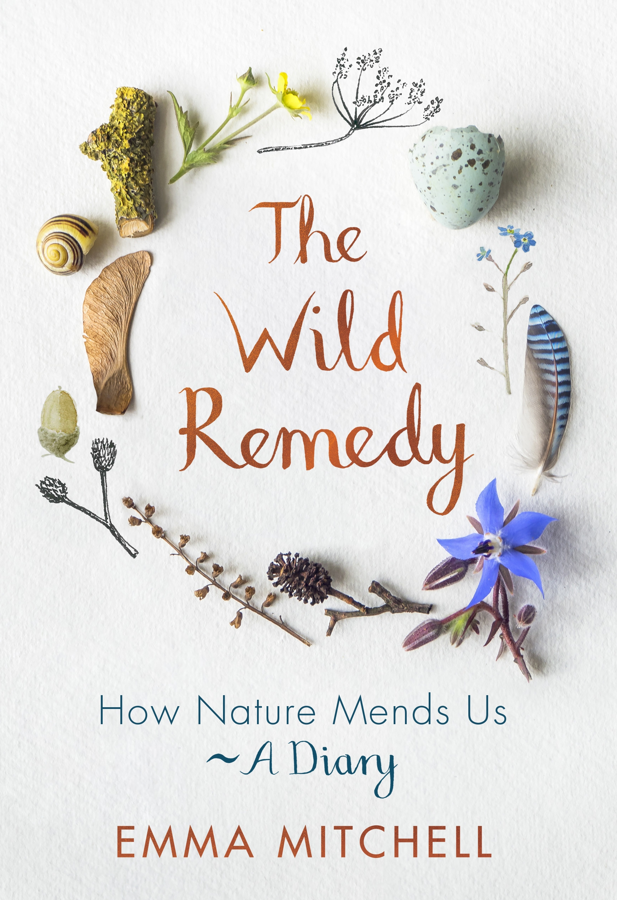
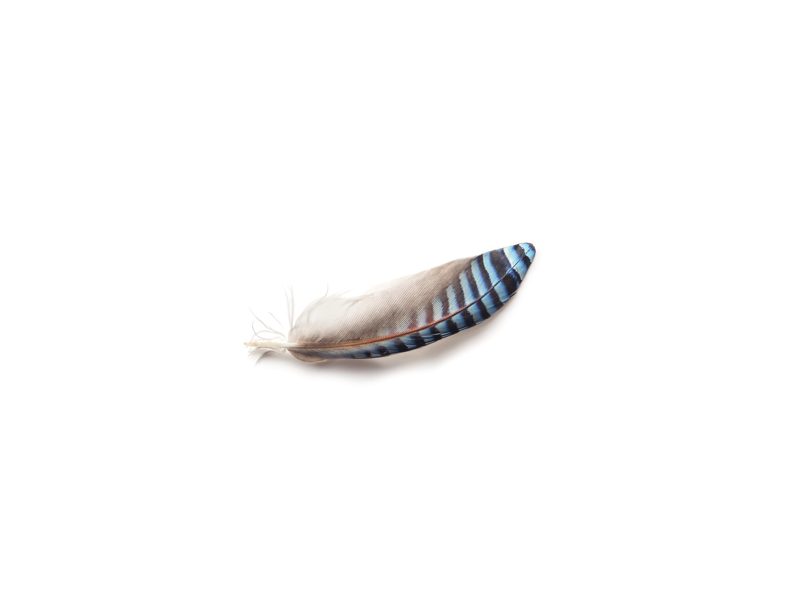
Michael O’Mara Books Limited
首次出版于2019年英国
Michael O’Mara Books Limited 9 Lion Yard Tremadoc Road London SW4 7NQ
版权所有 © Emma Mitchell 2019
保留所有权利。未经出版商事先书面许可，您不得复制、存储、分发、传输、复制或以其他方式提供本出版物（或其任何部分）的任何形式，或通过任何方式（电子、数字、光学、机械、复印、录制或其他方式）。任何人对本出版物进行未经授权的行为，可能承担刑事起诉和民事损害赔偿责任。
本书的CIP目录记录可从英国图书馆获得。
Michael O’Mara Books Limited使用的纸张是由可持续森林中生长的木材制成的天然、可回收产品。制造过程符合原产国的环境法规。
ISBN: 978-1-78929-042-4 精装版 ISBN: 978-1-78929-046-2 电子版
www.mombooks.com
内页和封面摄影及插图：Emma Mitchell 封面设计：Claire Cater 设计和排版：Claire Cater 中国印制
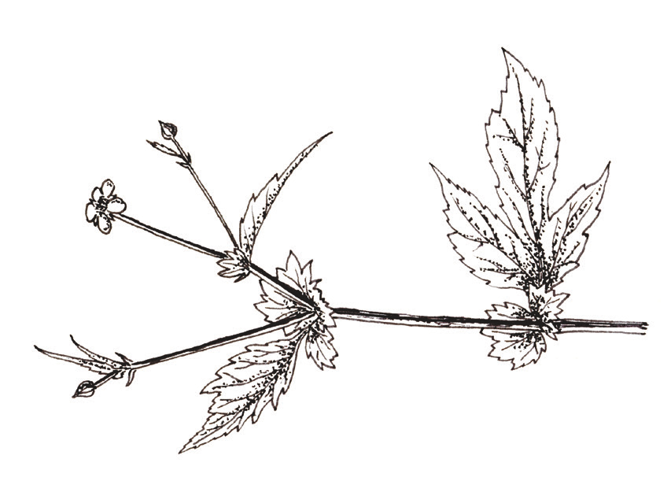
引言 . . . . . . . . . . . . . . . . . . . . . . . . . . . . . . . . . . . . . . . . . . . . . . . . . . 5
动植物群 . . . . . . . . . . . . . . . . . . . . . . . . . . . . . . . . . . . . . . . . . . . 16
十月 . . . . . . . . . . . . . . . . . . . . . . . . . . . . . . . . . . . . . . . . . . . . . . . . . . . . . 19
十一月 . . . . . . . . . . . . . . . . . . . . . . . . . . . . . . . . . . . . . . . . . . . . . . . . . 35
十二月 . . . . . . . . . . . . . . . . . . . . . . . . . . . . . . . . . . . . . . . . . . . . . . . . . 49
一月 . . . . . . . . . . . . . . . . . . . . . . . . . . . . . . . . . . . . . . . . . . . . . . . . . . . . . . 61
二月 . . . . . . . . . . . . . . . . . . . . . . . . . . . . . . . . . . . . . . . . . . . . . . . . . . . . 75
三月 . . . . . . . . . . . . . . . . . . . . . . . . . . . . . . . . . . . . . . . . . . . . . . . . . . . . . . . 89
四月 . . . . . . . . . . . . . . . . . . . . . . . . . . . . . . . . . . . . . . . . . . . . . . . . . . . . . . . 103
五月 . . . . . . . . . . . . . . . . . . . . . . . . . . . . . . . . . . . . . . . . . . . . . . . . . . . . . . . 121
六月 . . . . . . . . . . . . . . . . . . . . . . . . . . . . . . . . . . . . . . . . . . . . . . . . . . . . . . . 133
七月 . . . . . . . . . . . . . . . . . . . . . . . . . . . . . . . . . . . . . . . . . . . . . . . . . . . . . . . 147
八月 . . . . . . . . . . . . . . . . . . . . . . . . . . . . . . . . . . . . . . . . . . . . . . . . . . . . 163
九月 . . . . . . . . . . . . . . . . . . . . . . . . . . . . . . . . . . . . . . . . . . . . . . . 177
参考文献 . . . . . . . . . . . . . . . . . . . . . . . . . . . . . . . . . . . . . . . . . . . . 190
致谢 . . . . . . . . . . . . . . . . . . . . . . . . . . . . . . . . . . . . . . . . . . 192
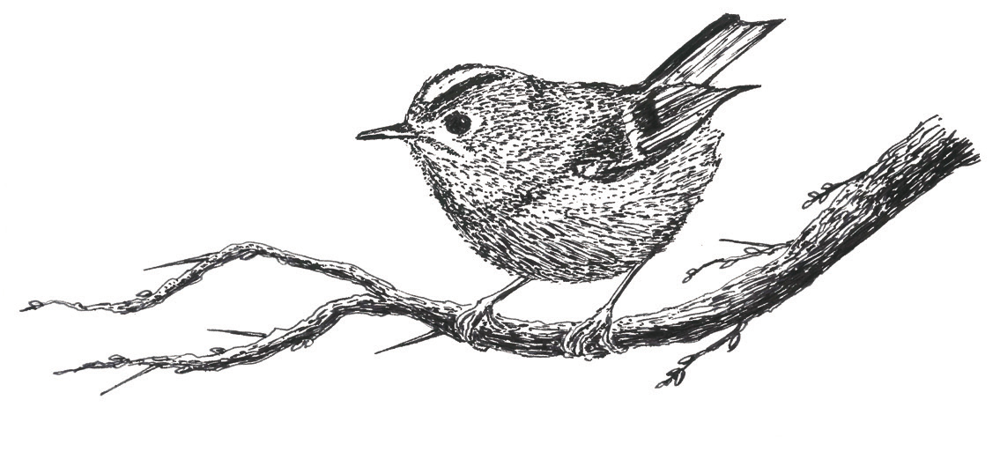
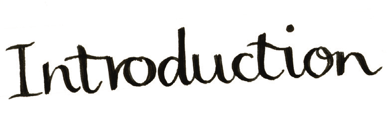
我不会拐弯抹角地说：我患有抑郁症，已经有二十五年了。有些日子，我的大脑感觉就像陷入了消极情绪的黑色流沙中；在其他日子里，厚重的灰色云层似乎降临，压抑着我的思绪，窃取我的动力。无论抑郁症如何表现，我都发现很难行动，强烈地想要蜷缩在室内的被子里，靠近Netflix。我知道如果强迫自己从沙发上起来，阴霾可能会稍微消散，如果我走出去，在我们小屋后面的树林里漫步，阴郁的想法可能不会完全消失，但它们肯定会退到一边。对我来说，每天在植物和树木中散步，就像任何谈话疗法或药物一样具有医疗效果。我知道这听起来像维多利亚时代疗养院的建议手册，这里确实有着前一个时代振奋人心的严格要求的回响，但直到去年我才意识到置身于绿色环境中能多么有益，即使只是五到十分钟。简单地走出房子，看到我们小屋对面的黑刺李和菩提树，就会在我身上产生一种我只能形容为神经元安心叹息的反应：一种大脑中看不见、无声的反应，既舒缓又具有治愈性。
当然，我不是第一个注意到户外漫步慰藉作用的人。文学作品中充满了在乡村漫步作为缓解忧郁、启发创造性思维和加速康复手段的引用。十九世纪丹麦哲学家、诗人和神学家索伦·克尔凯郭尔推崇每日散步：“每天我都通过散步让自己进入健康状态，走离每一种疾病；我已经走出了我最好的想法，我不知道有什么想法如此沉重以至于人们无法走离它。”伊丽莎白·冯·阿尼姆在1920年代写了我最喜欢的小说之一《迷人的四月》，她对在乡村漫步的感受与我的相呼应：“如果你不是用自己的双脚去一个地方，你会被带得太快，错过路边等待你的一千种微妙的快乐。”
当我从我们的前门走大约半英里到
在村庄森林的入口处，沿着蜿蜒在树间的修整小径，开始注意那些正在结籽或开花的植物，寻找部分隐藏在白垩土壤中的黄条纹林地蜗牛壳，瞥见一只麂鹿匆忙逃跑的身影，我在看到小屋对面那棵椴树时感受到的精神慰藉被放大了许多倍。我沉浸在森林中每一个多叶的、爬行的或飞翔的居民中，随着每一个吸引我注意力的细节，随着我走过的每一米，日常烦恼的喧嚣似乎变得更加模糊，抑郁的阴霾开始消散。
我记得小时候在威尔士北部祖父母家附近蹲着，凝视着篱笆下风信子花蕾、山楂叶、地钱草穗和猪殃殃幼苗的纠结，惊叹于它们形成的图案和展现的无数绿色色调，深感着迷。从很小的时候起，正是这些小而复杂的植物丛林景象首次将我的神经元转换到兴奋敬畏的模式。我记得感觉就像有一个气泡在我的大脑中膨胀。这有助于从困难的日子中分散注意力，现在依然如此。如果一只蛾子或甲虫在我观察时进入场景，专注于某个旅程或任务，那么奇迹的感觉就会变得更加强烈。一个非常小的故事在我面前展开：我看到了那个生物生活的快照，我感到激动和荣幸能够目睹它。我在四十六岁时仍然会蹲下来，检查在Dungeness卵石上或在岩池中飞舞的小生物上生长的谦逊而精美的植物或地衣收藏。十九世纪诗人约翰·克莱尔称这为”dropping down”，他也这样做，坐在野生植物中，从栖息在巢中的沙锥鸟的角度看自然世界。这种对自然的身体和精神沉浸为他的诗歌提供了信息和灵感。
看到一条小径轻柔地蜿蜒穿过榛树林，一大片山毛榉林，多塞特郡Shell Bay白沙滩和平静水面的弧线，或者坎布里亚郡巨大而柔和的猫咪般的Howgill Fells，无疑是令人振奋和美丽的。看到蓝山雀或野生兰花的希望可能会吸引我们走出户外，文学中无数的段落敦促我们如果想要驱散忧郁就要到乡村去，但是自然似乎带来的积极感受是否有科学依据？当我们在丘陵上行走或在五月踏入风信子林时，我们的大脑和身体是否可能发生可测量的变化？确实有。例如，马德里大学和挪威生命科学大学2007年发表的联合研究表明，仅仅看到自然景观就能加速从压力或精神疲劳中恢复，并加快疾病康复。埃克塞特大学2017年发表的研究表明，城市景观中植被的存在降低了城市居民的抑郁、焦虑和感知压力水平，同样的研究工作表明，户外时间缓解了低落情绪。
最近，来自日本和中国的一个概念Shinrin-yoku或”森林浴”引起了公众的关注。这是一种始于1980年代初的常见做法，涉及在树林或森林中度过时间，“沐浴”在氛围中以有益身心。大约四分之一的日本人口在四十八条官方指定的森林浴步道上尝试过这种疗法，当我第一次读到它时，我感到激动。这就是我刚才描述的过程：这就是我大多数日子为了缓解低落情绪所做的事情，然而在不同文化的大陆上，这种基于植物的自我药疗过程被数百万人用来缓解身心疾病的症状。在日本，感觉不适时寻求树木和植物并不比在英国去药房买布洛芬更不寻常。
近年来，旨在理解Shinrin-yoku现象的后续研究表明，在绿色空间中行走对我们身体的几个系统有直接的积极影响。在自然中特别是在树木中度过时间的受试者血压下降，压力荷尔蒙皮质醇水平下降，焦虑得到缓解，脉搏率降低。负责我们对压力的战斗或逃跑反应的交感神经系统的活动水平下降，而一种称为自然杀伤(NK)细胞的特殊白血细胞的活动增加，这种细胞可以破坏病毒感染和某些癌细胞，当人类在林地环境中度过时间时。参与这些研究的受试者中，这些生化变化持续了长达一个月；当他们在城市中度过相同长度的时间时，没有观察到这些效果。当我看到小屋对面的树木时感受到的精神安慰叹息不仅仅是因为我喜欢看美丽的森林景观；我正在经历影响我身心的真实生理反应。
野生环境通过什么生化机制缓解人类的抑郁并改善健康？进一步的研究开始提供具体的线索。许多
植物物种产生挥发性化合物和油类，统称为植物杀菌素(phytoncides)，以对抗病毒和细菌感染。研究森林浴现象的学术团体的研究表明，吸入植物杀菌素会对我们的免疫、内分泌（激素）、循环和神经系统产生一些相同的影响。这些油类不需要有很浓的香味就能对我们的身体产生影响，而且大多数都没有。五月份树篱那种清新的”绿色”气味就是来自许多不同植物的植物杀菌素的组合。当我们在野外停留时，我们会在不知不觉中吸入它们。

当我们研究血清素水平时，我们看到了进一步的线索。
血清素是一种在我们大脑神经细胞之间传递信号的化合物，抑郁症患者体内这种神经递质的水平会降低。目前还不清楚血清素的这种变化是情绪低落的原因还是其结果之一，大脑中肯定还有其他参与情绪调节的机制，但血清素与人类情绪之间似乎确实存在联系，与自然世界的互动已被证明会影响血清素水平。事实上，仅仅在户外就能产生影响：当阳光照射到皮肤或眼睛的视网膜时，它会触发血清素的释放，在更明亮的日子里会释放更高的水平。正是11月到3月之间较低的阳光水平导致一些人出现冬季抑郁症或季节性情绪失调(SAD)。我容易患这种短暂的季节性悲伤，这会让冬季的几个月特别具有挑战性。
与自然世界互动影响我们血清素水平的另一种更令人惊讶的方式来自土壤。当人类接触到良性土壤细菌如疫苗分枝杆菌(Mycobacterium vaccae)时，其细胞壁的蛋白质会触发我们大脑中特定神经细胞群进一步释放血清素。所以看起来除草不仅对你的花卉边界有好处。
最后，当我们进行一些轻度运动，如散步时，内啡肽会释放到血液中。这些是减少疼痛感觉并引起轻度欣快感的神经递质：一种温和的天然兴奋。将这些与来自阳光的光线、来自植物的化合物和来自土壤的有益细菌的影响结合起来，在花园、田野或森林中散步似乎就像伸手去拿一个看不见的天然药柜。科学研究仍在进展中，显然还有更多需要发现的，但我着迷于这样的想法：当我在树木和植物中逗留时，我大脑的化学平衡以及激素和神经系统正在发生变化，这可以影响我思想的基调和心理健康。我无数次在野外行走时感受到周围环境的治愈效果，知道在黑暗的日子里我能做些什么来帮助自己，这让人感到安慰。
对我来说，体验景观的大尺度元素，然后将目光投向下方，仔细观察存在于树桩上或草地边缘的复杂微观世界的组合，对我的心理状态产生最大的影响。当我走路时，我的思维进入一种非常仔细观察的状态。我寻找植物的集合、空蜗牛壳、浆果和种子头。当我这样做时，我感觉就像在我看到的小细节中游泳，如此深入地沉浸在我的周围环境中。我强烈感觉这是一种古老的觅食本能；它分散注意力，似乎能抑制担忧，并在我行走时将我的思维扎根于当下。我把它用作一种野外瑜伽，我的搜寻结果是一些常见植物、花朵和自然发现的小型季节性收藏，我会拍摄并收藏它们。
帮助我解读在散步中看到的各种植物并为叶子和花朵命名的书是我1978年在祖父书架上发现的一本书。封面吸引了我：上面覆盖着美丽的野玫瑰阵列，它们的果实和叶子。我随机打开它，进入了一个植物学仙境。《简明英国彩色植物志》中的许多图版就像三月份树篱的底部或六月中旬的林地地面，我被它们迷住了，现在仍然如此。它的作者威廉·基布尔·马丁牧师(1877-1969)在他二十多岁时开始绘制英国野花的水彩画，这本书出版时他已经八十八岁了。他将生命的大部分时间奉献给创作这本精美的书，他的1400多幅小画覆盖了书中的图版。单独来看，它们静静地美丽，植物学上准确，并帮助成千上万的人识别他们可能在假期的田野中发现的或在他们道路的铺路石之间生长的东西。然而，每个图版上绘画的集合在一起时是惊人地美丽的。

正是基布尔·马丁绘画复杂、有时纠缠的安排吸引了我，确保我不断回到书页。他构图每个图版几乎就像植物们在竞争光线，在墓地边缘或废地上的混乱补丁中找到它们的空间。如果你站在森林中仰望，你会注意到树木的枝条不会重叠。它们的生长会停止，在相邻个体的枝条之间留下小的间隙，这暗示了树间交流的存在：相邻树木之间的某种协议，使它们能够在有限的空间内最大化光线的收获。基布尔·马丁覆盖着野花收藏的图版
这11幅画呈现了某种微型版本的”冠层害羞”现象。本书中标本的布局方式体现了数百小时研究野生植物彼此生长关系的成果。
Keble Martin优美、自然主义的构图意味着
在我的抑郁情绪压倒一切的日子里，仅仅是看着《简明英国彩色植物志》中的图版就能带来我在乡村时感受到的某种慰藉。
当抑郁症将我的思维冻结在某种精神冬季时，我会翻开这本书，它让我无需离开客厅就能窥见春天。这本书是用纸张和墨水制成的抗抑郁药。
置身于植物、昆虫、贝壳、鸟类和哺乳动物之间，凝视它们，在某些情况下将它们带回家，以及收集它们留下的痕迹的冲动，伴随着以某种方式记录我所见所得的强迫感。摄影往往能满足这种需求，但我经常感到需要绘制某些我特别熟悉的物种。我想知道这是否是我们祖先在庇护所或洞穴墙壁上绘制他们观察和猎捕的动物图像的冲动的一个版本，比如法国拉斯科洞穴中的那些画作。也许那些画作是为了展示画家对那些动物的巨大敬意以及它们激发的敬畏之情；这正是我散步后拿起铅笔或钢笔的原因。那些洞穴画作也可能是出于对某些为他们提供食物来源的物种的感激之情。我必须强调，我不会吃掉我画的任何生物——在制作这本书的过程中没有田鼠被烧烤——但如果我看到一只知更鸟，我会兴奋不已；那次目击可以帮助缓解忧郁，我渴望画出这只知更鸟，或许是为了将这种效果保持得更久一些。
在我的第一本书《制造冬天》中，我写到了花时间进行创造性活动对心理健康的益处；我发现制作荠菜的简单素描、画眉的水彩画或收集标本制作常见植物发现的植物标本集，对我的心灵来说和散步本身一样舒缓。用铅笔画出雀鹰的逼真肖像，在转移我对困难、黑暗思想的注意力方面，与激发这幅画的鸟类邂逅同样有效，而观察和绘画这种温和重复的过程远比完美的结果更重要。自然目击的有益效果和我花时间记录所见之物的时间似乎在某种程度上是协同作用的。我不能在写一本关于一年自然漫步的书时不包括我的素描、绘画和照片。

当我在野外或花园中度过时光，注意到栖息其中的植物、树木和野生动物的细节时，我的抑郁症状会得到缓解，这已成为我自我治疗的一种方式。我绝不会建议用在野蔷薇附近闲逛来替代这种疾病的标准治疗方法：我依靠抗抑郁药和谈话治疗来防止我的疾病变得无法承受，但抑郁症对我思维的控制程度会因季节和日常压力水平而变化。我发现抗抑郁药和治疗提供的基础缓解水平有时不足以防止我的思想掉入深井。正是在这些时候，我发现在榛树和山楂树间漫步可以帮助降低皮质醇水平，并引起我需要的神经递质变化来抵御黑狗。每周散步几次，即使在我感觉良好的日子里，似乎也有累积效应，可以帮助减少情绪低落的眩晕感。
在树木间或田野中散步是你在生活大体还好时可以做的事情，帮助你度过通常的忧郁和那些确实会到来的棘手压力日。当生活持续令人精疲力竭，向你抛出一团可怕的粘稠痛苦，你感到极度、暗淡地悲伤时，一个绿叶茂盛的地方和其中一只鸟的景象可以转移注意力并开始治愈心灵。如果你有一个感觉像末日的截止日期，你的待办清单像M4高速公路一样长，或者你在等待抗抑郁药发挥作用，这是你可以做的事情。我希望，如果低落的情绪将你钉在沙发或床上，你感觉仿佛在悲伤的糖浆中跋涉，阅读我所见之物，看到这本书中的照片和插图，也许冒险出去寻找属于你自己的海螺或黄鼠狼，可能会带来一些缓解。走路；如果可以的话，走路或推着轮椅到户外；寻找绿色，那里可能有毛茸茸或羽毛的生物，即使在你的后花园里。这真的会有帮助。

这是一本关于我在一年中走出我们小屋时所看到的书，无论是在所需的努力似乎太难克服的日子里，还是在一切都好、阳光和鸟鸣召唤我的时候。我描述的目击都不是特别不寻常：没有与金雕的近距离接触，我也没有与苏格兰野猫交朋友。除了我爬上小山寻找的一株小兰花外，我在书中写到的物种都相对常见，许多可以在城市公园中看到。我写了站在宝石般的秋叶地毯中，发现一些新萌发的柳絮，或发现雀鹰掠过茬地如何带来慰藉。正如小说家Alice Walker所写：“我在很小的时候就明白，在大自然中，我感受到了我应该在教堂中感受到但从未感受到的一切。”

如果你想更深入地阅读本引言中提到的研究，书后有进一步阅读清单。


【关键发现】
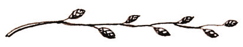
【说明：】【俗名，】【集合名词】
一月
十月 【仓鸮（Tyto alba）；金色猫头鹰，白色猫头鹰，】
蓝蓬头菊（Erigeron acer）猴面猫头鹰 篱芹（Torilis spp.）猪殃殃（Galium aparine）；bort，bedstraw，小白鹭（Egretta garzetta）粘草，sticky bobs，sticky willy，sticky 小鸮（Athene noctua）weed，goosegrass，grip grass 麂（Muntiacus reevesi）普通赤蜻（Sympetrum 七星瓢虫（Coccinella striolatum）septempunctata）；ladybug，red cow，alder 普通矢车菊（Centaurea nigra）warbler，lady cow，god’s cow，lady’s hen 田鸫（Turdus pilaris）；a mutation 灰林鸮（Strix aluco）；screech owl，beech 戴菊（Regulus regulus）owl，brown owl；parliament 红翼鸫（Turdus iliacus）
十一月 二月
黑刺李（Prunus spinosa）；果实：野李子 报春花（Primula vulgaris）雪花莲（Galanthus spp.）；山毛榉（Fagus）山羊柳（Salix caprea）；pussy willow
山楂（Crataegus spp.）；fair maids of February，希望之花 May，May 川续断（Dipsacus fullonum）田枫（Acer campestre）【candlemas bells，】
榛子（Corylus avellana）野樱桃梅（Prunus cerasifera）blossom，mother-die，quickthorn
欧洲卫矛（Euonymus europaeus）三月 雀鹰（Accipiter nisus）
野蔷薇（Rosa canina）；【普通椋鸟（Sturnus vulgaris）；stuckie，】dog rose
starnil，starnie，starn
十二月
凤头麦鸡（Vanellus vanellus）；四月 peewit，teewit，
teuchitt，green plover
谷仓燕（Hirundo rustica）
长尾山雀（Aegithalos caudatus）；乌鸫（Turdus merula）；blackbeep
bumbarrel，flying teaspoon，silver-throated 岩鹨（Prunella modularis）
dasher，long-tailed pie，oven bird，hedge jug；【金翅雀（Carduelis carduelis）；sheriff，goldie；】
zephyr charm
狍子（Capreolus capreolus）大山雀（Parus major）荚蒾（Viburnum lantana）【家雀（Passer domesticus）；spuggy/】
欧蓍草（Achillea millefolium）；spug，spadger；quarrel，flutter，knot nosebleed
plant，sanguinary，old man’s pepper，milfoil，松鸦（Garrulus glandarius）；scold，party
soldier’s woundwort，gordaldo，thousand-高茎报春花（Primula elatior）
leaf 野蒜（Allium ursinum）；ramsons
白头翁（Anemone nemorosa）；
windflower，smellfox
五月 萤火虫（Lampyris noctiluca）
蓝铃花（Hyacinthoides non-scripta）田鸢尾（Knautia arvensis）
牛芹菜（Anthriscus sylvestris）；keck，wild-【白眼蝴蝶（Melanargia galathea）】
beaked parsley，wild chervil，mother-die 夜鹰（Caprimulgus europaeus）；moth hawk，
黄花九轮草（Primula veris）；cowslop（意思是night swallow，razor grinder，flying toad
cowpat）彩蛱蝶（Vanessa cardui）
篱拉拉藤（Galium mollugo）环蛱蝶（Aphantopus hyperantus）
女士拉拉藤（Galium verum）；bedflower 【六斑蛀螟（Zygaena filipendulae）】
夜莺（Luscinia megarhynchos）【小船长蝴蝶（Thymelicus sylvestris）】
白眼菊（Leucanthemum vulgare）；dog 【南蜻蜓（Aeshna cyanea）】
daisy，moon daisy，moon penny 白鹳（Ciconia ciconia）
猪坚果（Conopodium majus）；kippernut，野胡萝卜（Daucus carota）；Queen Anne’s lace
hawknut，earth chestnut，groundnut，
earthnut 八月
茶色挖掘蜂（Andrena fulva）橡实藤壶（Semibalanus balanoides）
野马郁兰（Origanum vulgare）珠状海葵（Actinia equina）
林石楠（Geum urbanum）石鳖（Lepidochitona cinerea）
普通鳚鱼（Lipophrys pholis）；shanny，
六月 sea-frog，shan，rocky，bunner
蜂兰（Ophrys apifera）普通玉黍螺（Littorina littorea）
琉璃苣（Borago officinalis）普通海岸蟹（Carcinus maenus）；cast
Breckland百里香（Thymus serpyllum）普通虾（Crangon crangon）
普通蓝蝴蝶（Polyommatus icarus）比目鱼（Pleuronectes platessa）
普通斑兰（Dactylorhiza 蛤蟆草（Linaria vulgaris）；butter and eggs，
fuchsii）dead men’s bones，doggies，false flax，
妖精亚麻（Linum catharticum）【gallwort，impudent lawyer，monkey flower，】
勿忘我（Myosotis spp.）lion’s mouth，snapdragon
绿牛舌草（Pentaglottis sempervirens）
大猪草（Heracleum sphondylium）九月
草地褐蝶（Maniola jurtina）秋绶草（Spiranthes spiralis）
远志（Polygala vulgaris）银行田鼠（Myodes glareolus）
颤草（Briza spp.）黑莓（Rubus spp*.）；bramble
红剪秋萝（Silene dioica）普通蟾蜍（Bufo bufo）；knot，knab，nest
小石斑蝶（Coenonympha 恶魔咬草（Succisa pratensis）
pamphilus）欧亚鹪鹩（Troglodytes troglodytes）；chime
斑林蝶（Pararge aegeria）小米草（Euphrasia spp.）
小玳瑁蝶（Aglais urticae）欧洲荚蒾（Viburnum opulus）；dogberry，
黄花小米草（Rhinanthus minor）water elder，crampbark，snowball tree
泥蜂（Osmia spp.）
七月
朱砂蛾（Tyria jacobaeae）
普通龙芽草（Agrimonia eupatoria）；
church steeples，sticklewort
普通矢车菊（Centaurium erythraea）
守门员蝶（Pyronia tithonus）


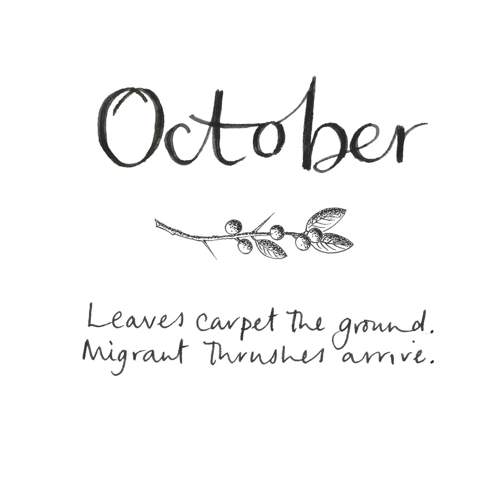
我走出小屋，阳光带着那种柔和、流动的质感，这是一年转换时节的特有光芒。初霜在草地上覆盖着精致的白霜，清晨的空气清冽，在鼻腔中带来轻微但令人愉悦的刺痛感。树木周围弥漫着腐叶土那种芬芳的、几乎让人垂涎的气味，最后一批燕子正在离去。秋天到了。
Annie，我们十个月大的救援lurcher小狗，是我许多散步中的伙伴。她是一只太妃糖色、腿很长、热爱奶酪和獾粪、精力充沛的林地爱好者。如果我在早餐后的事务上花费太长时间，她会哀怨地呜咽，嘴里叼着牵引绳在客厅里蹦跳，用鼻子钻到我的手指和键盘之间阻止我打字，她对我们的晨间远足是如此渴望。一旦进入树林，我会慢悠悠地观察瓢虫或给欧防风拍照，而她则进行她那无休止的忙碌巡逻：检查松鼠争吵的那棵树，嗅探muntjac鹿穿过树篱时留下的smeuses（动物在树枝和叶子中造成的小缝隙）。她会咬住飘落的叶子，寻找腐烂的苹果来啃咬，或者用狐狸粪便来涂抹自己。她完全沉浸在树林中，我想，退化成她那狼一般的祖先，与每一种气味交流，如果可能的话还要与之身体融合。
今年，十月开始时的天气不像是十月，更像是五六月份。气温暖和得可以穿短袖，在树林中散步温暖而阳光充足。这种不合季节的晴朗天气让我精神振奋。阳光在我大脑中调节着那些看不见的改变情绪的神经递质旋钮，我感到愉快。当树林如此美丽时，让自己起身进行晨间散步并不困难。在树林的远端，
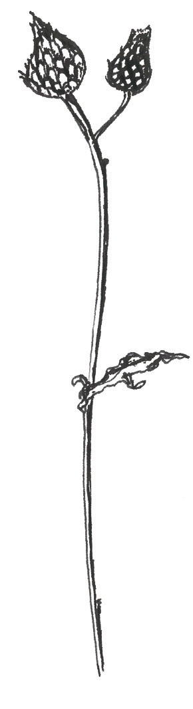
树木间的小径通向一片空地，这里最后的野罂粟正用精致的蓝紫色点亮着逐渐变褐的草地。矢车菊花朵——今年早些时候有如此多的蝴蝶和蜜蜂在上面觅食和交配——已经结束了这个季节。矢车菊的种子头看起来像微型松果，有着令人愉悦的重叠图案的木质鳞片。
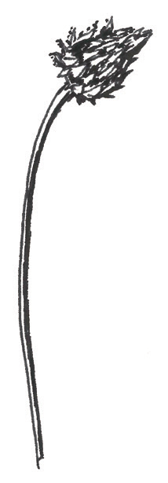

当我散步时，我常常感到必须收集、拍摄和记录我发现的东西，有时只是感受我的环境。今天，我有强烈的冲动要画这些松果，所以我收集了一些带回家。
当Annie和我穿过空地时，在修剪过的草地小径上方有节奏的闪光。数十只普通蜻蜓聚集在一起，似乎在草皮上方几英寸处跳舞。当它们飞跃和盘旋时，翅膀反射着光线，这是一幅我希望能保存下来在冬日重播的空灵景象。它们的舞蹈无法用我手机的摄像头捕捉，所以我停下来观看了几分钟，试图将这次邂逅铭刻在记忆中。后来，当我回到家时，我阅读了关于普通蜻蜓的资料。这个物种继续活跃到十一月，偏爱林地作为捕猎小昆虫猎物的场所，可以在秋天看到它们交配。我目睹了一场在种子头上方的空中调情方舞。我想知道蜻蜓可能在哪里产卵，然后想起了距离我看到它们表演的地方几十米远的羊场边缘的小池塘。我将这种蜻蜓交配舞蹈记录为树林中的季节性路标之一：一个我每年都会留意的十月小奇观。
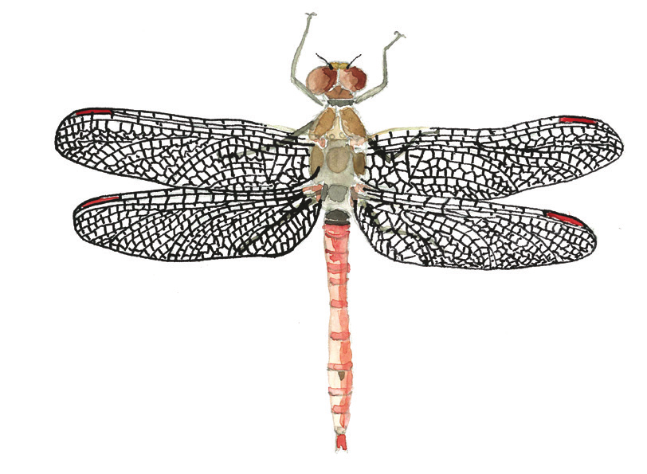
正是在十月，大多数树木开始从它们的叶子中重新吸收叶绿素，然后叶子脱落。当这种对光合作用至关重要的绿色色素回流到树中时，它揭开了一年中一直存在的有色化合物的面纱。一直存在的类胡萝卜素和类黄酮负责在一年中的这个时候出现在树林和公园中的橙色和黄色，它们与红色以及偶尔出现的粉色和紫色的花青素结合，花青素的合成始于秋天。我喜欢这样的想法：卫矛、山楂、田枫和樱桃的许多宝石般的颜色在整个春夏都存在，当天气变得更冷更灰，田野变得单调时，它们的颜色就显现出来。
在树林中两条小径的十字路口有一个地方，一片卫矛用它们的落叶在林地地面上创造出精致但短暂的色彩拼图。十月期间卫矛叶子的颜色几乎看起来不真实。许多变成最亮的樱红色，一些变成最淡的淡黄色，一些是两者的结合，中心有一条鲜艳的条纹，其他的则变得几乎无色。就像看到蜻蜓的舞蹈一样，我想将这种颜色置于悬浮动画中，这样我就可以在一月的沉闷日子里唤起它。再过几周，乡村将缺乏色彩。我收集这些明亮落叶的本能非常强烈，就像我在海滩上收集海玻璃或贝壳一样，我捡起一些带回家。

当人类探索新环境并寻找和发现资源时，大脑中会释放神经递质多巴胺，带来短暂的兴奋爆发：一种”收获快感”。这可能是在我们狩猎采集过去中形成的途径。一丛覆盖着浆果的沙棘或一片野草莓会增加我们祖先的卡路里摄入，积极回应这些野生食物的景象、收集浆果并将它们带回庇护所会直接有助于他们的生存。反过来，每次事件
采集活动产生可食用物资时会在大脑中触发奖励机制，并鼓励采集行为成为一种习惯。我在收集纺锤叶时体验到的可能就是这种反应的残留。无论我从收集这些叶子中获得积极感受的进化原因是什么，我知道它正在帮助微妙地改变我大脑中的化学平衡，所以我在明亮的地毯附近徘徊，让叶子发挥它们的抗抑郁魔力。阳光温暖。在鲜艳色彩面前的这几分钟以如此有形的方式提升了我的情绪，我几乎可以品尝到它。

我沿着林间小径继续前行，时刻注意着Annie喜欢寻找狐狸和獾粪并愉快地在其中打滚的倾向。在之前她打滚完毕的场合，她会张着嘴带着狗狗的喜悦向我跑回来，就好像她给自己洒上了最稀有的手工调制巴黎香水，想要我分享这芳香奢华的时刻。我更愿意避免再次用狗狗洗发水给她擦洗的过程。她的洗澡总是伴随着几个小时湿狗气味弥漫整个房子，她会闷闷不乐，对我要清除她身上林木标记和气味的不合逻辑冲动感到愤怒。
她消失了一两分钟，所以我静立着，聆听她项圈上骨头形状奖牌的轻微叮当声。打破寂静的不是这种微妙的铃声，而是附近某种东西发出的一系列微小、高音调的叫声。我意识到在我的周边视觉中有小小的动静，我试图专注于它。一个微小的深色形状在草径边缘黑刺李的光秃枝条间移动：一只如此微小的鸟，以至于它的细节在枝条缠结中几乎无法辨认。它小到足以在两三根细枝汇聚的地方被遮蔽。它飞来飞去，显然在觅食微小的昆虫，似乎没有意识到我的存在或被我的出现困扰。我瞥见了它略深的橄榄绿羽毛。它的头部装饰着精细的黄色条纹，这标志着它是一只金冠戴菊鸟(goldcrest)，也许是今年的幼鸟之一。
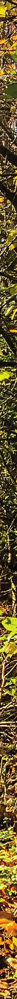

虽然常见，但由于它在叶子间伪装得很好且通常相当隐秘，所以很难被发现。这只个体如此专注于充分利用在这个温暖期间仍然丰富的昆虫，以至于它似乎并不被我惊扰，继续在枝条间飞跃觅食。看到金冠戴菊鸟在我内心引发了一种熟悉的感觉。这与我童年时在夏末在祖父池塘边发现一只微小青蛙或在堆肥堆附近荨麻叶上发现瓢虫时体验到的那种突然、眩晕、翱翔的感觉相同。对我来说，这比吃精美的香槟松露更好，甚至比在沙发后面发现10英镑纸币更好。这是一个新发现，一个小小的活宝藏，一个也许今天只有我看到的东西。
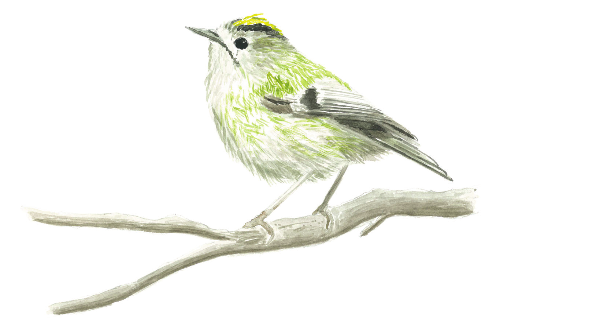
野玫瑰、山楂和黑刺李灌木今年都结满了果实。它们的枝条看起来像挂着植物珠子的森林项链，这是一道美丽的风景。这是一个”浆果年”或”肥实年”(mast year)，野果的产量比平常更大，枝条繁重。根据英国民间传说，结满浆果的林木预示着严酷的冬天。我喜欢这个想法：树木能够感知即将到来的天气，并提供更多食物帮助鸟类在秋季储备，增加它们的生存机会。实际上，林木果实的大量收成是温暖干燥的春季导致高授粉率，接着七八月份的降雨使得由此产生的大量胚胎浆果作物膨胀发育的结果。但这个不那么浪漫的解释并不能阻止我在想到这个为黑鸟、画眉和林鸽准备的丰富天然食品储藏室在天气转冷时的作用而感到振奋。


来自斯堪的纳维亚、冰岛和西伯利亚的候鸟画眉混合群、红翼鸫(redwings)和田鸫(fieldfares)已经抵达英国过冬。它们在林木果实作物达到高峰时降落，立即开始取食山楂果、花楸浆果和野苹果。装满这些魅力十足的斑点胸鸟的山楂灌木正在狼吞虎咽浆果，或者在犁过的田野中点缀着它们在翻耕土壤中寻找蠕虫，这是十月份芬斯(Fens)地区常见且对我来说珍贵的景象。
林木仍然相当绿色，许多树木的叶子尚未变色，一些胡萝卜叶和鹰嘴草植物仍在开花。夏末的标志仍在这里，然而沿着修剪草径的边缘，我已经开始注意到明年春天的微妙迹象。草茎间可见小小的精致蕨类叶子。这些是胡萝卜叶幼苗。这种我最喜爱的野花物种的种子在八月成熟，落到地面并发芽。这些微小的新植物将继续生长，直到温度降到4°C以下。

大多数植物会在冬天存活下来，在明年五月开花。在牛芷(cow parsley)幼苗旁边是猪殃殃(cleavers)的幼苗。这是孩子们喜欢采摘并粘在他们的外套上（或父母的外套上）的植物，当他们外出散步时。它的俗名包括sticky bobs、鹅草和sticky weed，这些新幼苗的细长茎干上沿着长度分布着微小的精致叶片花环。这些新植物会在整个冬天存在，只要温度保持在冰点以上几度，它们就会缓慢生长。它们是明年春天的有形开端，已经在树林里了。我发现这个想法非常令人振奋，我发誓在我屈服于冬日忧郁的日子里会来偷看它们。
在芬兰这里度过的每一年，我都更多地了解了野生动物，特别是生活在我们小屋附近的植物学。如果我发现一种不熟悉的植物，我会尝试学习它的名字，找出它在我已知的植物家族中的位置，通过这种方式，我对这个地方变得更加熟悉，感觉我对它的了解和理解更深了一些。今天，我在树林里发现了一朵我不认识的小而精致的花。它生长在空地的边缘，根部在白垩土中，叶子在斑驳的阴影中。它精致美丽：一根约15厘米高的细长茎干，顶部开着小而杯状的粉紫色花朵。
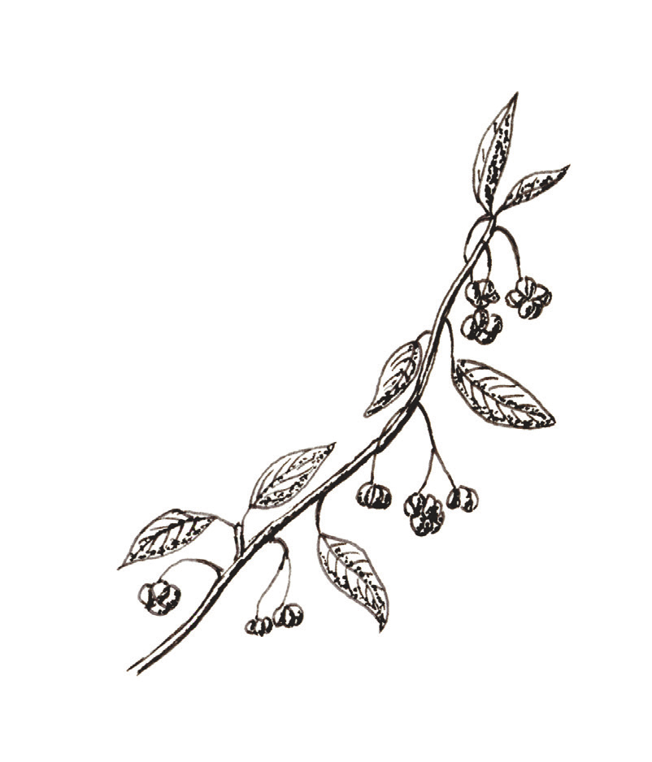
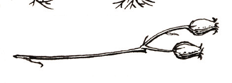

它的花瓣细而窄，当花朵凋谢后，它们被微小的柔软种子粉扑取代，就像蒲公英家族成员的种子一样。我假设它是山柳菊(hawkbit)的一个品种，我回到家翻阅我的参考书并搜索互联网。我在我的书中找不到任何与之匹配的植物：它们的花都是黄色的，大多数比这个物种更艳丽。我搜索英国山柳菊，仍然没有找到。
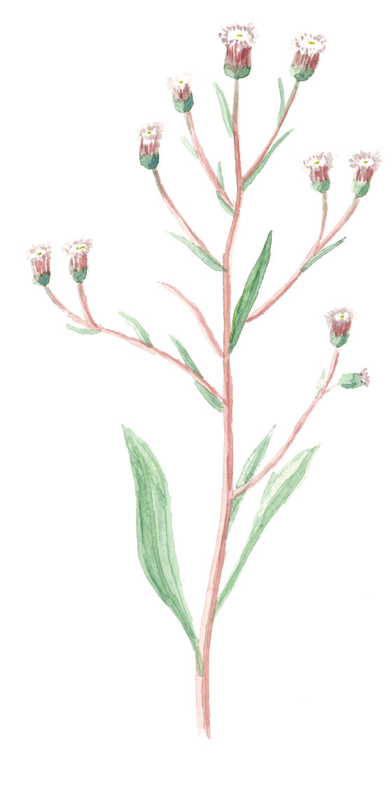
然后，在翻阅Keble Martin的书时，一朵小的粉紫色花朵在第44页引起了我的注意：与普通雏菊和野生紫菀同页同科。我找到了：蓝色飞蓬或Erigeron acer。Keble Martin的画完美地捕捉了这种植物的简单美。对我来说这是新的，现在我渴望看到更多标本，所以我回到树林去画它。拿起铅笔和画笔，在纸上做简单的标记来模仿这朵相当朴素的花的形状，这个舒缓的过程让我从纠缠不休的、翻腾的思绪中分心。
在冬天，一种叫做季节性情感障碍(SAD)的短暂抑郁症可能会降临，由于缺乏阳光，这反过来会影响大脑中血清素的水平。
人们认为有些人对冬天较少明亮阳光的影响更敏感，在这些人中，神经递质水平的变化更为明显，导致11月到3月期间的嗜睡和低落情绪。英国20%到30%的人口以某种形式患有SAD。我每年都会经历这种季节性悲伤，我担心它可能开始在我的神经元中酝酿，像阴郁的茶一样。对我来说，在海边度过时间在抵御精神黑暗方面特别有效，所以我前往肯特，与我的朋友海伦会面，我们开车前往满是鹅卵石的邓杰内斯海角。
在困难的日子里，我经常拿起Derek Jarman’s Garden。我发现Howard Sooley的优秀照片在视觉上很舒缓，我被Jarman描述驯服他在邓杰内斯的Prospect Cottage家周围生长的鹅卵石的方式所迷住。

结果是一片干旱但精致的海洋植物、燧石鹅卵石、金属和他在海岸线发现并添加到花园中的漂流木。Jarman聚集了当地的野生植物学，添加了被海水冲上来的生锈和圆润的人工制品，创造了几平方米崎岖却崇高的种植：一个干旱却绿意盎然的地方。我渴望参观Prospect Cottage，但也在执行一项任务，去看在鹅卵石上生长的地衣荒地：一个由地衣和耐寒的先锋植物物种组成的复杂微观世界，高度不超过4厘米。
地衣是唯一能够忍受邓杰内斯鹅卵石沙丘缺乏水分的生物群体之一。每个都是包含真菌和藻类的微生物共生群落，有时还有细菌加入，它们在鹅卵石的凹陷处形成精致的织锦。Cladonia mitis和Hypogymnia physodes的水蓝灰色，Xanthoria parietina的芥末黄，以及Flavoparmelia caperata的淡黄绿色，既柔和又美丽。
海伦和我惊叹于这些微小而坚韧的森林，拍摄坐在鹅卵石上的漂白木制渔船的照片，在Prospect Cottage花园里流连，观看玫瑰果、角黍籽荚和小鹅卵石石阵。我们在一家酒吧外面看着海吃炸鱼薯条，聊了几个小时。我被在这个巨大、古老的鹅卵石堆上看到的景象和海伦的陪伴所鼓舞。这次短暂的旅行缓解了我潜在的低落情绪。SAD暂时被阻挡了，但

还有两个月到仲冬，太阳将继续远离北半球，带走我的动力和精力。我渴望在邓杰内斯停留更久，但必须回家。
[邓杰内斯的地衣荒地]
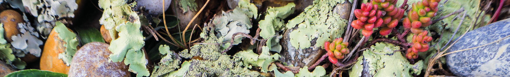


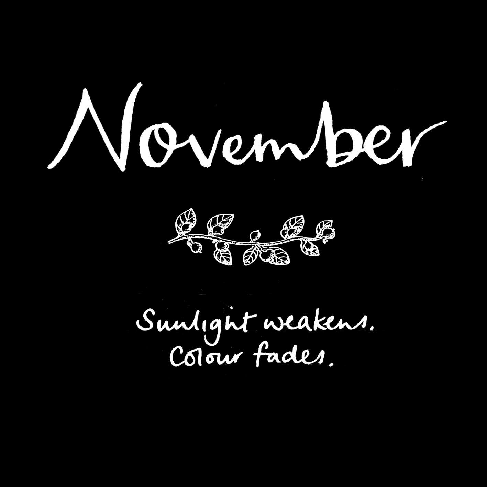
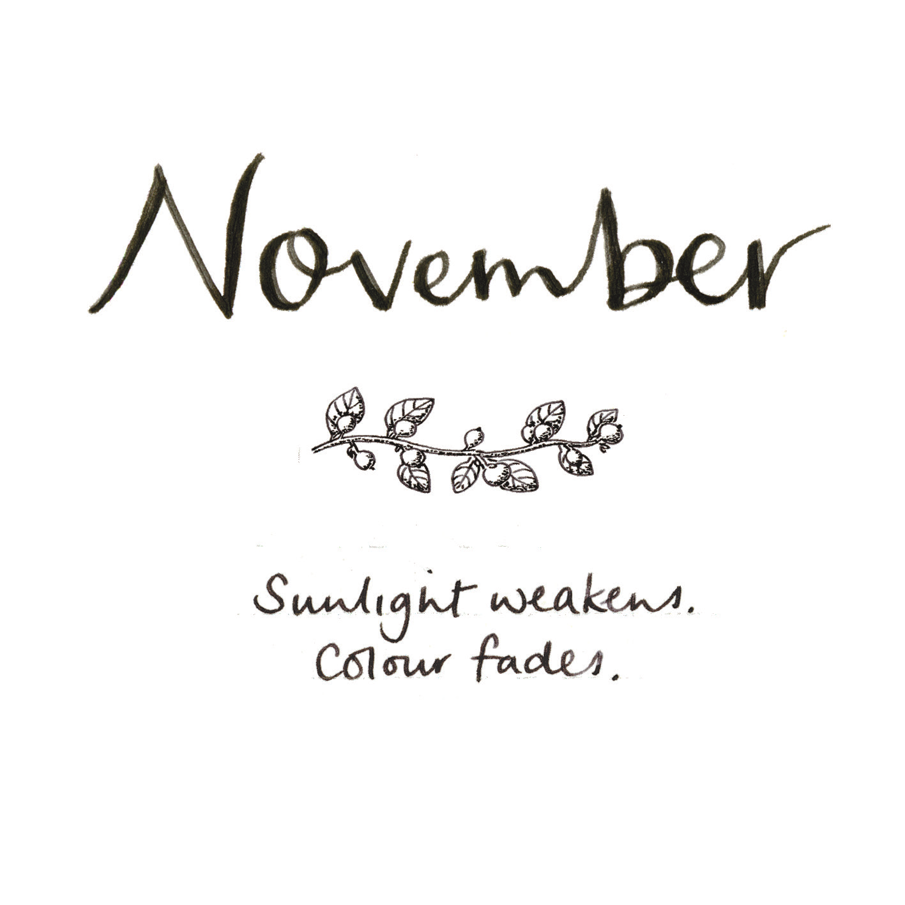
我承认对秋天的狡诈心怀怨恨。它往往以一种暗示开始，仿佛今年冬天不会到来。“看吧，”它似乎在说，“欧芹仍在开花，天气还像六月一样温暖。”我了解它的把戏。气候稍一转变，印第安夏日就会让位于厚重的阴云和穿透力极强、偷走快乐的严寒。正是这些初现的征象，预示着即将到来的无日照、无色彩的数周，让我可能失去信心。
每年我面对深秋和冬天，就像在攀登一座山峰：一个看似不可逾越的高峰矗立在那里，能够抽干我全身的活力。山麓便已令人生畏，我真希望能用挖掘英吉利海峡隧道的那种巨型啃石钻头，在这该死的山峰上钻个洞穿过去。我渴望绕过即将到来的几个月，在二月下旬像一只五英尺十英寸高的鼹鼠一样冒出来，正好赶上看到黑刺李花蕾膨胀。北半球已远离太阳，它带走了我的精神。如果我屈服于SAD(季节性抑郁症)不可避免的下沉拉力，我将几乎不可能从沙发上挣脱出来。
正是在十一月，我的每一次散步都变得至关重要。无论天空是什么状况，在树林里度过的十分钟都能改变我大脑中神经递质的平衡，这将有助于转变我的思维基调，让我继续前行。如果太阳真的出现，那么这剂改变情绪的大脑化学物质会更强，如果我发现一只松鸦、一些欧芹或一只在叶子上晒太阳的斑点林蝶，那么我体验到的温和的自然观察者快感意味着这次散步更具药用价值，我可以带着几乎兴高采烈的心情回家，违抗即将到来的冬天。
我是一个寻色者。随着冬天临近，我在树林和灌木篱中遇到尽可能多亮色的冲动变得几乎狂热。尽管天空被灰色弥漫，我知道树林中仍有色彩，所以我出发去寻找。上个月，山茱萸的叶子振奋了我的精神。这个月它们的浆果成熟了，新出现的粉红色和橙色在鲜艳程度上几乎是迷幻的。
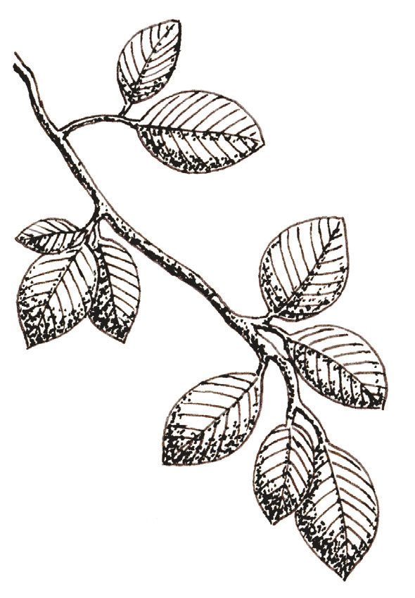
与此同时，田野枫叶——梧桐表亲的迷你版本——已经变成金色，山毛榉变成了发光的铜色，黑刺李是靛蓝色，覆盖着精致的霜花。我渴望拥有这一切，就像上个月一样，但现在这些景象越来越稀少，我想要抓住它们、拥有它们一点点的渴望变得更加强烈；我想要饥饿地将所有这些色彩塞进我的眼睛和口袋里，趁它们还在。我收集一点点所有东西，仿佛这是一个植物拼盘，然后带回家拍照。
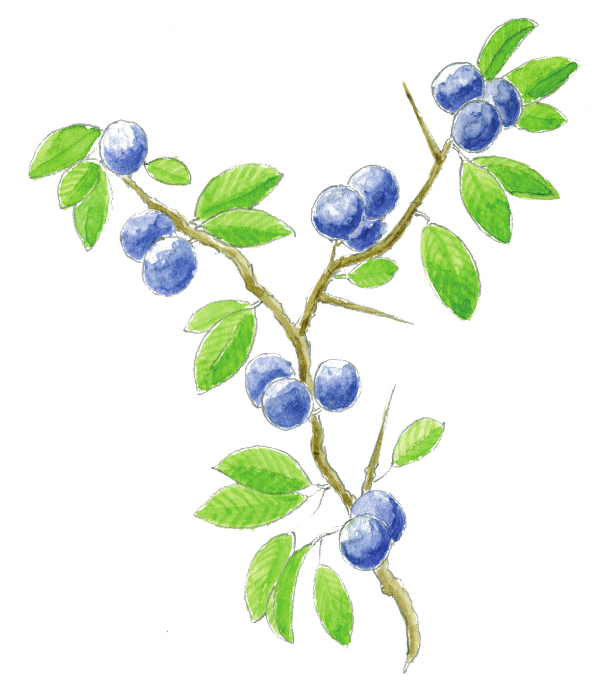
液体般的蓝天跟随着一个清冷晴朗的夜晚。地面已经硬化，阴影中躺着斑斑点点的霜。在这样的日子里更容易散步：太阳诱惑我走到户外。在树林里，上个月掉落的许多叶子已经被冰、泥土和各种踩踏的脚步弄成褐色并软化。几个霜夜已经偷走了树林的大部分活力。我为失去的色彩哀悼，但仍能找到一些亮色。我沿着环绕树林空地的小径行走。上个月如此鲜艳的大部分樱花叶子都在地上，颜色正在褪去，但透过树枝我发现了一片明亮的黄色，于是推开树木去接近它。在那里，在六月时蜂兰和石南兰开花的地方，有一棵穿着十一月外衣的田野枫。这棵树是日本槭树的表亲，是新英格兰在这个时节因秋色而备受赞誉的枫树的娇小亲戚。它的叶子呈现出真正令人震撼的色调：比报春花更亮，如柠檬般鲜艳。当我站立凝视时，十一月的低垂太阳从背后照亮了每片叶子，这个自然奇观如同任何彩色玻璃窗一样美丽。由于太阳和北半球的相对角度，以及光线在到达树木前需要穿过更多大气层，这个时节的阳光本身就相当金黄，所以这些小枫叶似乎在燃烧。我让眼睛浸泡在光和色彩中一段时间，最后感到几乎狂喜。当我回到空地时，我寻找蜂兰叶子的小而有光泽的莲座形状，但我没能发现它们。
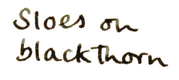


我知道它们在那里，但它们似乎很善于隐藏在草丛和西洋蓍草及野胡萝卜的叶子中。
对于自然观察者来说，野生动物相遇有时似乎存在一种类似公交车的现象，我在十一月中旬体验到了这一点。我已经好几个月没有看到任何雀鹰了，然后我在一周内看到了两只。一天早晨，安妮和我深入树林时，一只雀鹰在我的视野边缘显现了。这次目击很短暂，最多两秒钟，只不过是一个暗色的视网膜模糊影像，让我质疑是否真的看到了那只鹰。它是一个羽毛幽灵，以极快的速度在距离我几米远的树木间飞行，我瞥见了它水平条纹的灰色和奶油色胸羽。在飞行中它弯曲翅膀，毫不费力地改变飞行轨迹的角度以避免与树干和树枝碰撞。这些空中机动的敏捷性说明了一个令人震撼的精确陀螺仪和导航系统。雀鹰在其头部蕴藏着一个小但非常强大的寻猎计算机。
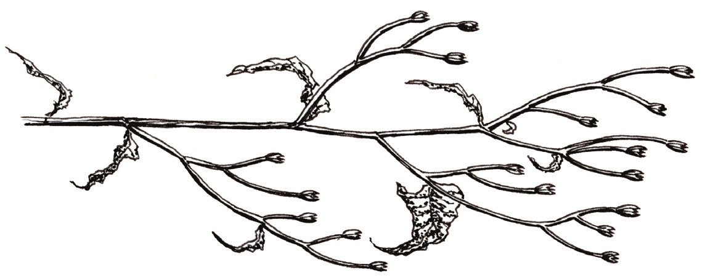
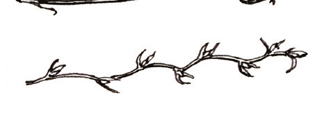
第二只雀鹰出现在我坐在萨福克郡的交通队列中时。那里有茬地
道路两侧的田野和灌木篱笆
远处的一阵骚动引起了我的
注意。雀鹰从篱笆上空出现，翅膀尖
与下方的细枝仅相距几厘米，
然后俯冲到田野中，以快速而规律的
翅膀拍打掠过大麦茬的残桩。它飞过汽车，
继续沿着路另一边田野的路径前行，
在远处的篱笆上空做了个空中跃跃，
然后消失在视线之外。它就像一架小型死亡
喷气机，对雀类、鸽子和
椋鸟怀着杀戮的意图。这次目击是
灰暗、平凡日子里令人眩晕的亮点。雀鹰的隐秘性、
钢铁般的目标性、难以捉摸性以及倾向于从
篱笆、墙壁和树木之间突然出现的特性，意味着当
我看到一只时，我会体验到比看到
一只在路边上空盘旋的茶隼更强烈的兴奋。在不言而喻的
猛禽观察王牌游戏中，雀鹰完胜茶隼。
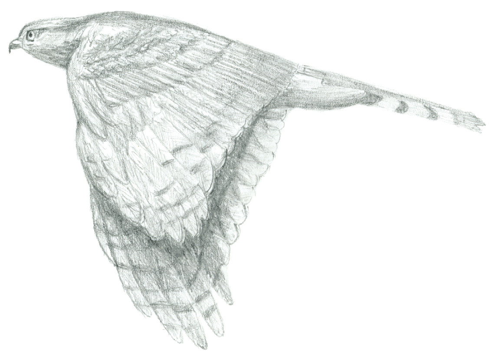
如果我们不带Annie到树林里

至少每天跑一次，她多余的精力就会以

卷尾疯狂地在楼梯上冲上冲下的形式爆发，或者
以滑稽的犬类女高音唱出哀怨的歌曲，对着
她透过客厅窗户看到的乌鸦歌唱，那只乌鸦经常
在村庄绿地上昂首阔步。Annie是那只橙色的狗，
在黑狗将牙齿咬进我的神经元并用力咬下时，
她会把我拖出来。如果她因为
散步的延迟而感到沮丧，她会将愤怒发泄到
某些在此刻扮演宿敌角色的无生命物体上。
她对木制壁炉刷特别恼火，随着时间的推移，
这把刷子先是失去了刷毛，然后失去了手柄，
留下一个被啃咬的残桩。当她急着要去
树林时，铅笔也是她的死敌。
有一天，一个电话让我无法在
平时的时间带她出去，我在角落里发现了
我最喜欢的Derwent HB铅笔的破碎残骸。
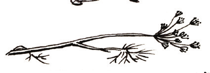
现在是十一月的第三周，天气阴湿。
对我来说，在这样的日子里，我的
抑郁症想让我做的事情和我知道能
缓解它的活动之间存在着持续的心理斗争。我强烈的
想要呆在家里几乎不动的冲动来自于我对
深秋和冬季较低亮度阳光的敏感，导致我的
能量水平下降。这与家庭焦虑和压力的
长期影响相结合，导致压力水平升高，但我知道
如果我强迫自己离开舒适的窝
到树木和植物中去，两者的平衡都可以改变。
尽管天空阴沉，我还是设法出去了。Annie
很高兴，我们走的是穿过树林的常规路线。
我们走路时路径中有几个交叉点，
我最喜欢的地点之一是通往
空地的小径与绕过树林的路线相交的地方。
在春天和夏天，空地是野花的海洋：
矢车菊、鹰嘴豆、蓝盆花、野胡萝卜、草类、婆罗门参、
蓝色跳蚤草，还有在极少数地方生长的蜂兰和
普通斑点兰花。沿着树林边缘的小径
是我有时在冬天在种子头中发现瓢虫
冬眠的地方。小径的一边是一排高大粗糙的
黑刺李篱笆，是冬季鸫鸟和红腹灰雀的热门栖息地，
另一边是一片年幼的山毛榉树林。
在这条小径与我们穿过树林的主要路线
交汇的地方，有一个被
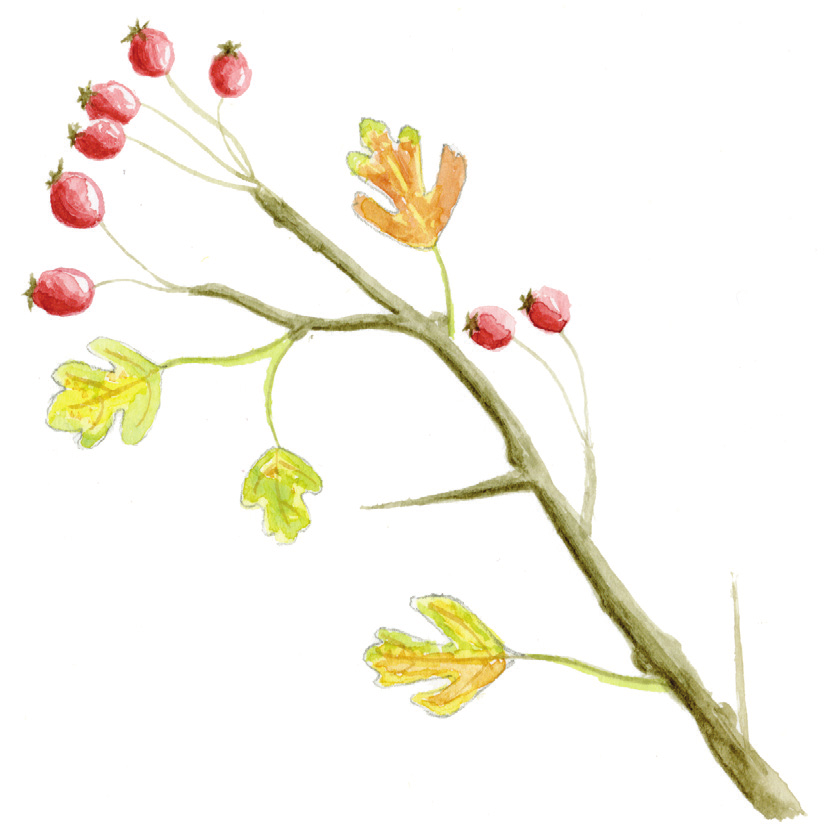
山楂和野玫瑰环绕的原木长椅，一棵年轻的
胡桃树立在拐角处。这是我最喜欢坐的地方之一，
特别是当阳光足够强烈能够温暖我的脸时。
对面是一棵成熟的榛子树，第三个角落是
樱桃树下玫瑰的纠结，
第四个角落是
spindle灌木丛，我
上个月收集了
它们的叶子。
当我们到达
小径的交叉口时，
有什么东西引起了
我的注意：榛子树上
小小的浅灰绿色斑点。
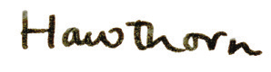
我移动头部仔细观察，

看到它们在灰色天空和
骨架般树木的背景下很明亮。回形针大小的
胚胎柔荑花序已经出现。它们是榛子树的
雄花，将在现在到二月之间继续缓慢伸长，
到那时它们将开放释放花粉，被
微小的深红色星形雌花捕获。
在较暗的月份里，我寻找几个小景象。
它们是微妙的植物信标：令人鼓舞的
迹象，让我确信春天终将到来。这些
未成熟的柔荑花序就是这样的迹象，正如
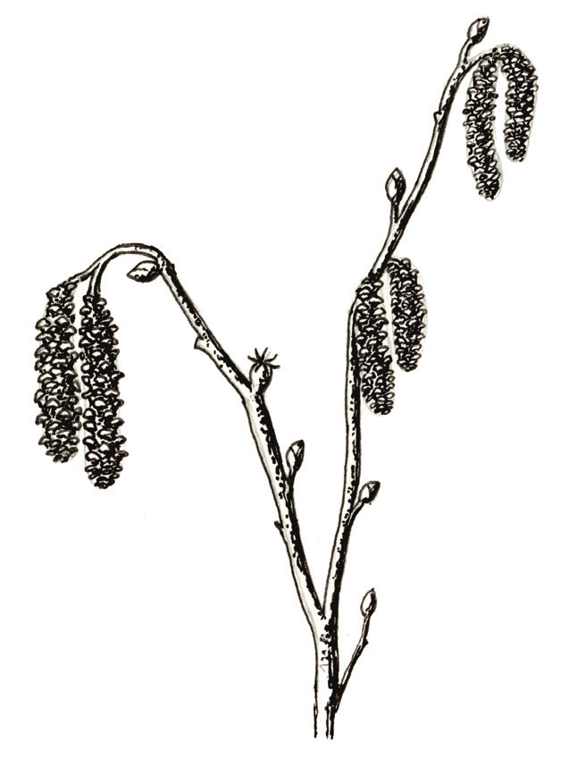
上个月开始出现的精致
cow parsley和cleavers幼苗一样。春天会
到来；夜晚会缩短，我的思绪会
再次感到轻松。我在榛子树附近徘徊了
一会儿。我注意到Annie正兴致勃勃地
嗅着附近某种粪便，在她有时间
将自己涂满可怕臭味之前，我赶紧把她
带走。
在十一月的最后一周，我能感受到
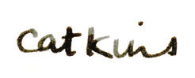
可能主导我思想和
整个人生观的拖拽般灰暗的暗示。当我沉沦到如此
低点时，长时间的散步是必要的，或者
如果做不到，就需要在海边度过时光，我的
思绪回到了上个月去Dungeness的旅行。再一次，
我被海岸吸引，尽管寒冷刺骨且
有下雨的威胁，我还是驱车前往Essex进行
重复的朝圣之旅。Walton-on-the-Naze是一个
似乎停留在前一个十年的海滨小镇，街道两旁
排列着印花布咖啡馆和老式五金店。
尽管我喜欢冰淇淋、沙堡和
投币游戏的一天，但今天我的目标是Naze塔和海岸
海滩主要区域的北部。
我从纳兹游客停车场走下台阶，开始沿着混凝土步道向北朝海滩走去，爬下沙滩，向悬崖走去。就在这里，它是一个定义明确的地质时代层蛋糕。站在这个垂直时间线前，我可以看到悬崖顶部草丛下方有一条细细的石头带。这些是泰晤士河大约60万年前沉积的砾石。这个想法令人着迷：古老的泰晤士河，甚至早于最终发展成伦敦巨大城区的最早定居点，蜿蜒穿过埃塞克斯郡并沉积了这些卵石。我的思绪有些混乱。泰晤士河已经流淌了超过50万年，当这一层形成时，古人类刚刚开始进化成尼安德特人。有考古证据表明最早的烹饪迹象与这些泰晤士河砾石同时期。我很容易就会站在这里思考几个小时，但我正在寻找悬崖较低层的化石。
泰晤士河砾石下方是一个被称为红峭壁的琥珀色沙质地层。200万年前，埃塞克斯郡被一片凉爽的海洋覆盖，海洋生物繁盛，在海床上堆积并沿着海岸形成富含贝壳的沙丘。这些沙子成为了红峭壁。它呈红橙色，这是由于来自悬崖基底层的黄铁矿冲刷进入并在那里氧化造成的。
再往下一点是一片已经塌陷的红峭壁区域，甚至在我走近之前，我就能看到更多暴露的贝壳。在沙粒中这里那里有石化的峨螺，我兴奋地扑向它们。这些是Neptunea contraria的标本，一种已灭绝的物种，其壳的螺旋方向与现代峨螺以及几乎所有其他腹足动物物种相反。它们很容易找到，除了在红峭壁沙中呈现略微锈蚀的外观外，它们看起来好像不久前才被冲上岸，然而它们已有数百万年的历史。今天第二次，我对这些窥探以往时代的瞬间感到敬畏。
我重新爬回海滩。这里悬崖的最低层与沙子融合。这是有着5400万年历史的伦敦黏土地层，一种柔软的蓝色沉积物，代表了英国历史上气候为亚热带、鲨鱼和海龟在温暖海洋中游泳的时期。

鸟类、甲壳动物、马和鲸鱼等哺乳动物的化石，以及树木的果实和种子也可以在伦敦黏土中找到，这些都可能在海滩上发现。我把这些沙滩视为一个巨大的珍奇柜或wunderkammer。
当我开始搜寻时，雨开始下了，持续的风从海上席卷海滩，天气非常寒冷。这种天气通常会迫使我回到车里，但我决心继续搜寻，我的眼睛在行走时扫视着沙子。几分钟内我就找到了一颗Striatolamia鲨鱼的牙齿。细长、极其锋利并带有暗色光泽，它来自一条生活在约5400万年前的巨大软骨鱼的嘴中。
当我回到家时，我将从沃尔顿-奥恩-纳兹的发现与我收集的现代和石化软体动物贝壳一起展示。当我展示和检查贝壳、植物发现或化石时，我的心智进入一种类似于绘画或揉面团所引发的状态：我内心的喧嚣被平静，宁静降临。我正在创建小型临时展示，短暂的博物馆，由我策展并为我而设，制作它们让我平静、消除阴霾，增加了我在发现这些小物品时所感受到的满足感。我对与分类和整理相关的心理路径感到好奇，想知道它们是否可以追溯到我们祖先在觅食旅行后可能进行的叶子、浆果、种子、坚果和贝类的处理。调查这种联系需要相当大的研究预算和一小组考古学家和神经科学家。我只知道整齐地摆放我找到的东西，或者如社交媒体上所说的”knolling”，可以缓解压力并让我感到轻松愉悦。
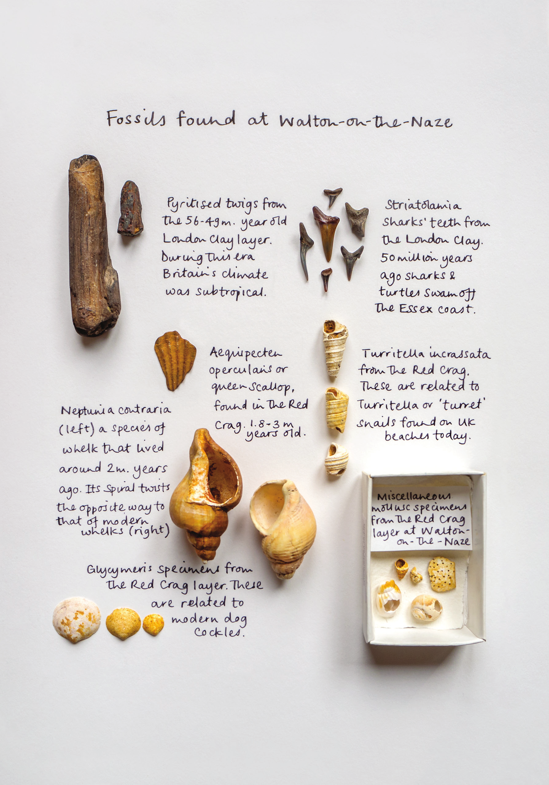

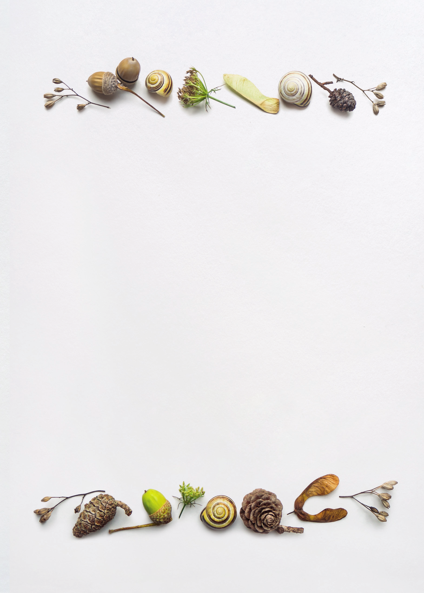
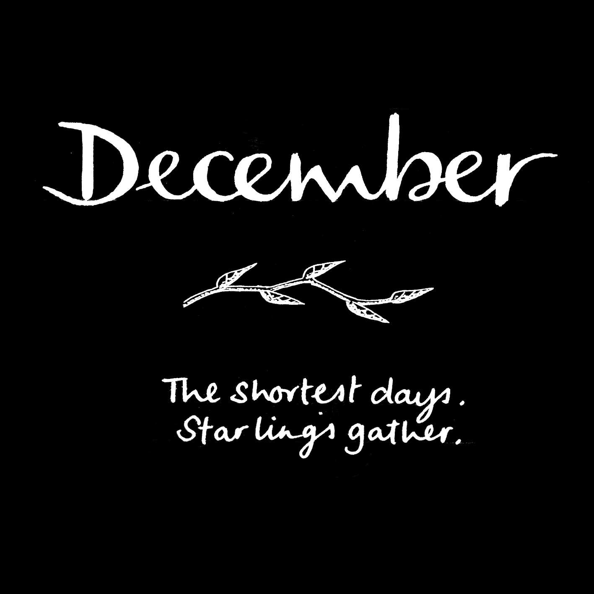
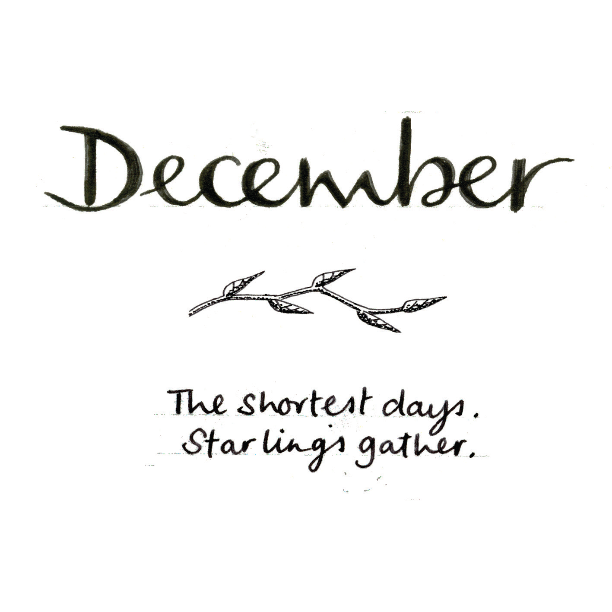
我们已经告别了最后的温和日子，前方是寒冷和圣诞节的愉快闪烁和美食享受。这个令人愉快的季节几乎无法缓解12月降临在我心中的荒凉感。我知道接下来的几个月将是最难度过的。我的血清素和多巴胺水平从未被测试过，但我的整个世界观发生了变化，我的活力消失了，我确信这些变化是由12月至2月间神经元化学的变化引起的。
当我的心智进入这种状态时，它对美丽景象的反应能力似乎都会减弱。北半球阳光强度的减弱不仅是这种神经元变化的触发因素，也导致了当地植物学的变化。正是进入我眼中的更强阳光和报春花、蓝盆花、鹰嘴草、樱花、罂粟的色彩景象以及叶子的浓绿色的结合，使我在春夏时节的情绪显著更加兴奋。随着阳光减弱，花朵凋谢，色彩从景观中消失。我的突触遭受了双重打击。
正是在这些星期里，移动变得困难。抑郁自我滋养并通过静止变得更强；结果，离开房子所需的努力可能变得极其艰难。感到低落、
保持静止不动，随之而来的情绪低落，更加静止不动以及不可阻挡的螺旋式下降，感觉就像触发这种状态的季节变化一样不可能阻止。我能感觉到自己变得更加固着，像一只忧郁的帽贝，我知道我必须找到立足点来防止自己屈服于这个黑暗、令人眩晕、壁滑如镜的洞穴。
我必须强迫自己继续带Annie散步。草丛已经枯萎，最近的降雨让它们在空地上倒伏成霜褐色的团块。它们让我想起许多被丢弃的湿漉漉的假发，还让人联想到某位美国总统令人困惑的发型。野胡萝卜和欧蓍草的种子头已经褪成暗褐色，最后的山柳菊已经停止开花，围绕这片草地样地块的小径呈现出泥泞、单调的景象。我开始渴望鲜艳的叶绿素绿色，但幸运的是玫瑰果尚未屈服于冰晶，所以这里那里还有朱红色的小点。小径绕着空地转圈，另一边是一片茂密的山楂和荚蒾。这片低矮灌木丛
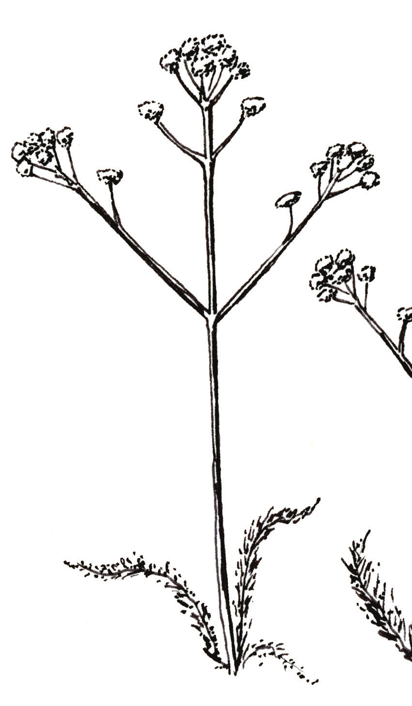
是鸟类最喜欢的地方，在温暖的月份里，我在这里听到过绿啄木鸟、黑顶莺、鹪鹩、棕柳莺、黑鸟、苍头燕雀和知更鸟的叫声。在苔藓覆盖的枝条上仍有少数山楂果或山楂浆果，我停下来仔细观察它们。它们呈现红酒色，每个都有一个星形疤痕，标记着五月开花、授粉并孕育出这个小果实的花朵的最后痕迹。它们是令人振奋的景象，我在八月份在这里采摘了数百颗山楂浆果来浸泡杜松子酒。山楂属于蔷薇科，制成的
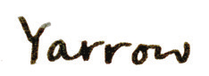
利口酒尝起来像土耳其软糖和

令人陶醉、芳香的夏天。深酒红色
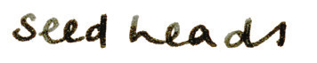
浆果与地衣微妙的蓝灰色和黄绿色花丝之间的对比很美，我今天对这些色彩很感激。
我们朝家的方向走去，当我们穿过树林中黑刺李茂密的中心地带，靠近我十月份看到金冠戴菊的地方时，一串细小的鸟叫声似乎从上层枝条间的多个地点传出。声音在移动，我试图准确定位它们的来源。一群长尾山雀正沿着黑刺李的顶部行进，但它们并不像椋鸟或雀类那样成群飞行；相反，它们在进行一种鸟类学的接力，排成几米长的一条线。领头的鸟进行半米左右的快速俯冲飞行，后面的鸟也做同样的动作，接着是下一只。它们轮流飞行，当后面的鸟赶上时，前面的鸟又再次移动。它们一边走一边叫：尖锐、高音调、带有呼吸声的哨音，与移动同步发出。我惊叹于这种协调的旅行方法，就像一个移动的翻花绳游戏。我之前在剑桥郡的Devil’s Dyke（我们小屋附近的一个古老盎格鲁-撒克逊土堤）和Bury St Edmunds附近的Bradfield Woods见过这种情况，也许它的目的是在长尾山雀在栖息和觅食的树木间移动时躲避或迷惑雀鹰。
长尾山雀的弧线飞行路线赋予它们一种轻快的气质。我在人格化它们，但它们看起来好像很享受在树林中的这种循环、飞掠路线，尽管我心中有挥之不去的阴郁，我也享受这个小小的野生景象以及它提供的受欢迎的分心。Annie没有注意到它们。我意识到当我凝视鸟类时，她在小径边缘发现了一个恶臭的、有羽毛的死物，并在我阻止之前就狼吞虎咽地吃了下去。当我们回到小屋时，我担心它对她内脏可能产生的影响。
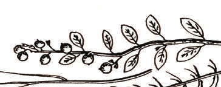
一天下午，我开车离开我们的村庄，穿过

沼泽地乡村，前往Upware和

Wicken村庄。这条路有如此多的地面沉降，以至于在某些地方沿着它开车感觉像是在过山车的车厢里。道路的摇摇晃晃增加了当我在沼泽地度过时光时降临在我身上的超现实感。这是一个有400年历史的景观，形成于十七世纪通过结合英国和荷兰知识排干东安格利亚这部分地区的时候。在排水之前，这些田地被淹没，人们通过割芦苇、猎水鸟、捕鱼和驳船运输谋生。我们住在东安格利亚称为Brecklands（意为”破碎土地”）的沙质土壤地区不远处。地平线上点缀着Brecks特色的海岸松，还有桤木、柳树和芦苇丛。
这是农业用地，意味着在某些地方存在绿色的不毛之地，生物多样性被化肥和杀虫剂摧毁，但可耕地散布着被国民信托基金会回收的沼泽岛屿。Fen Vision项目计划在Wicken和剑桥边缘之间获得一条连续的乡村带，并让它恢复到五个世纪前的水乡状态。在我们村庄郊外有一块属于这个计划的土地：一片野生草地
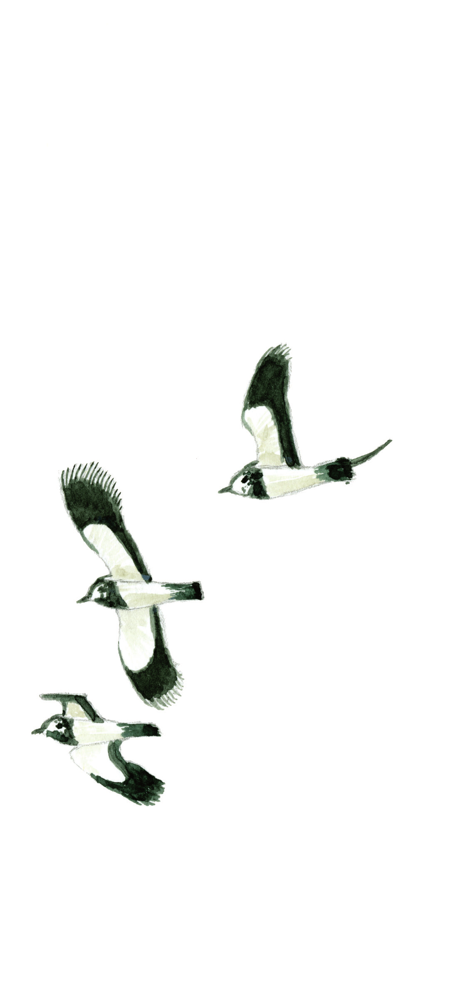
有一个小水库，大群椋鸟有时在那里栖息，夏天燕隼从空中抓捕蜻蜓，幽灵般的短耳鸮从斯堪的纳维亚飘来，在结霜的草丛中度过冬天狩猎。
当我穿越沼泽地时，我发现了一群鸟
远距离观察并开车靠近。在一天中的这个时候，通常可以看到小群椋鸟在沼泽地上空盘旋，然后栖息，但这些鸟儿体型更大，它们在空中做着夸张的急转弯飞行。我把车停在路边，翻找双筒望远镜。它们翅膀的钝形和苍白的下腹部标志着它们是田凫，也被称为田鸻。自从我小时候第一次通过车窗看到它们以来，我就被这种鸟类迷住了，当时有几只站在柴郡M6高速公路旁的犁地里。是它们彩虹色的蓝绿色和黑色翅膀以及华丽的羽毛头饰让我第一次在高速公路旁看到它们时感到不可置信。我觉得它们看起来很异国情调，仿佛属于遥远的土地；它们是都市区的天堂鸟。它们的盘旋飞行模式和悲怆的、几乎金属般的叫声中带有腹语术的暗示，使田凫更加迷人。它被列入英国鸟类保护关注红名单，因为繁殖对的数量在过去四分之一世纪中急剧下降，所以能看到一百多只个体
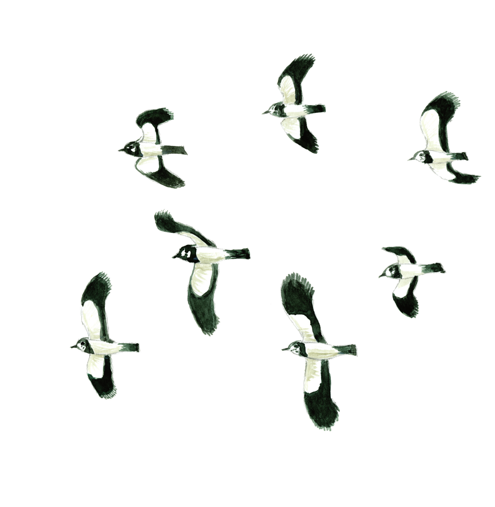


在树木上空翱翔和盘旋，仿佛在炫耀它们的空中技巧，这是令人振奋的。那天下午我的情绪并没有随着它们高涨，但这一景象让我精神振奋，我思绪音调的这种微妙变化是非常需要的，所以我坐在车里观看田凫几分钟，然后继续我的旅程。
这个物种自二十世纪初以来数量就在下降，但在这里的沼泽地，粗糙的牧场、春播作物和未改良的草地形成了栖息地的马赛克，鼓励田凫成功繁殖。
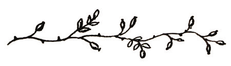
今天是12月21日，冬至，日照时数已经达到年度最低点。

白昼的黑暗将我钉住，冬天那座不透水的花岗岩山峰坐在我的心灵上。生活开始感觉像是在粘稠的泥浆中跋涉，每一天都让人精疲力竭。这是一年中最艰难的几周。我的神经递质鸡尾酒似乎缺少赋予精神能量和体验快乐能力的关键成分，而这种情况因白昼缩短而加剧。我知道现在我大脑中的多巴胺水平可能很低，也许血清素也是如此，我想知道是否还有其他我们尚未发现的神经元信使或成分，也会随着SAD(季节性情感障碍)加剧而消失。
让自己行动起来，说实话，让自己活着，
需要我能调动的所有努力，所以在仲冬时节我让自己摆脱步行的束缚，我发现开车在沼泽地乡村兜风对我的心理几乎和踏足森林一样有益。我知道毫无真正目的地开车在生态上是不合理的，内疚啃噬着我，但我也知道，如果我看到一些骨架般的冬树映衬着灰白的天空，瞥见一只红隼在路边上空盘旋，或发现田野里一小群忙碌的鹧鸪，我的心境会有微妙但极其受欢迎的转变，感觉就像几只椋鸟从栖息地起飞。
我驱车前往达灵汉姆，一个位于我们家和哈弗希尔之间的小村庄。这是一条两旁是休耕田和农田的道路，还有成片的林地和疏于管理的树篱。我在夜晚沿着这条路行驶过数百次，当时我的心灵被疾病的后遗症或艰难日子的无情冲击所折磨。我在开车时看到过猫头鹰：褐林鸮、小鸮和仓鸮。我看到过野兔，蹲在土坑里或全速奔跑，与道路平行，似乎在与汽车赛跑。有时老鼠或田鼠匆忙穿越车道，看起来极度恐慌。白鼬或黄鼬是更罕见的景象，像杀气腾腾的毛茸茸雪茄一样飞速穿过柏油路。

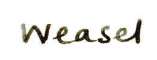
我们村庄和达灵汉姆之间有一片较高的地面：一个被犁地覆盖的低矮高原。这里道路两旁种着年轻的白蜡树，有时黄昏时分仓鸮会坐在其中一棵树上。开车时我意识到冬麦田里有一些黑色的形状，扫视过去看到鹿群朝着与我行驶相反的方向移动。我把车停在路边，可以看到其中一只是雄鹿，有着短而引人注目的鹿角，它们的臀部有相当大的椭圆形白色毛皮斑块。它们是狍子，看到它们大步穿过田野的景象令人愉悦。
这是一个古老的场景，几个世纪以来人们都能目睹到。虽然对鹿来说体型较小，但狍子是英国最大的哺乳动物之一，在我住的地方附近就有一群野生个体。雄鹿的威严风度，以及三只个体像林地象形文字一样排成一线行走的方式，使这成为一次特殊的目击。这些鹿让我想到我们的这片土地，我们如何用现代农业方法、化肥和杀虫剂蹂躏它，我们如何为了种植更多食物和利润最大化而挖掘森林和水草甸。我想到蜜蜂的困境，传粉昆虫种群的大量减少，以及这如何威胁到我们许多鸟类物种的生存，然而这些狍子却在这片冬麦芽田里行走。能看到它们是一种特权，但我感到矛盾。我渴望一瞥十六世纪
英格兰世纪，那里住着他们的祖先。我渴望置身于
乡村，那里归来的夜莺和
布谷鸟的数量年复一年不会减少，那里成群的黄鸪
仍在农田上过着富足的生活。我很高兴看到了
鹿，当然这次目击对我的心灵有所帮助，每一次
都是如此，但当我开车离开时，我感到不安。

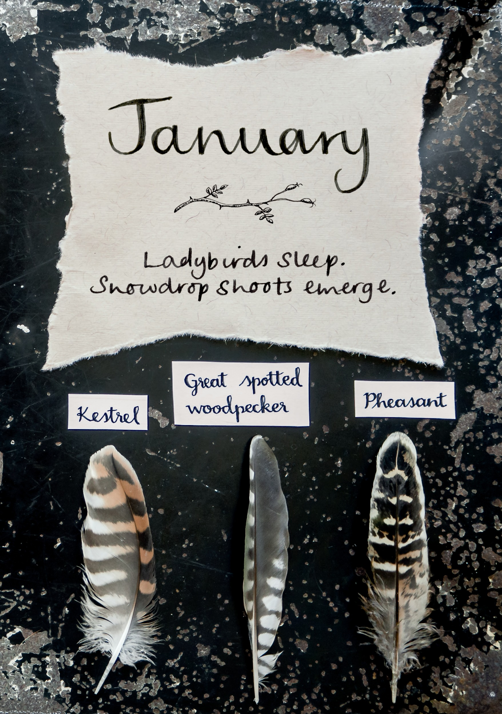
我总是在新年到来时感到些许安心。圣诞节和春天开始之间漫长的几周可能是最黑暗的，无论是气象学上还是神经学上，然而1月1日在某种程度上是一个精神里程碑。大约一半的冬天已经过去，我挺过了它而没有陷入抑郁的最深渊，带着这个振奋人心的想法，几天内会有一种更清新的感觉，更轻松的心情。
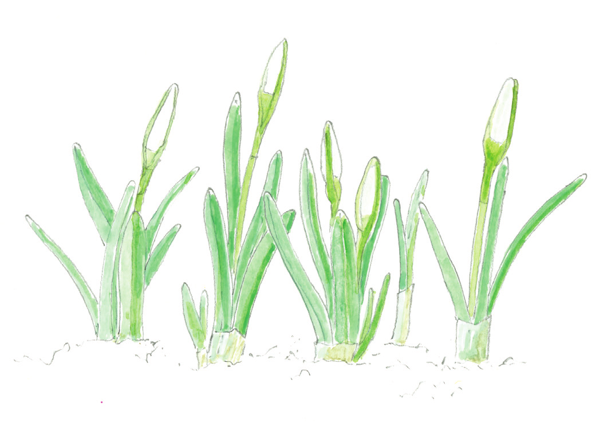
当安妮和我在新年的最初几天之一走向树林时，我知道雪花莲正在小径左侧邻居拥有的那片土地上萌芽。我透过栅栏窥视，但雪花莲通常出现的地方离我站立的位置太远，无法看清我看到的是草叶还是新芽。篱笆上有一扇通向这片围栏区域的小门，我偷偷溜了进去。它们就在那里，只有几厘米高，看起来异常翠绿多汁。这是我一年中的分水岭发现：最早花朵的幼芽。这就像连续几周没有香料温暖后的第一次咖喱，在三月试探性阳光下在户外喝的第一杯茶。这些雪花莲是《星球大战第四集：新希望》的植物学等价物。
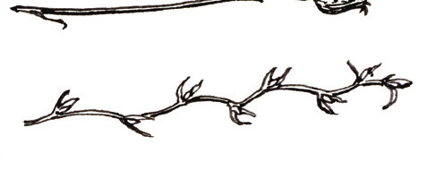
一个傍晚，我从剑桥相当早地开车回家。

我的大女儿和我在一起，购物之后又享用了美味的汉堡，我们感到满足。当我在村庄入口处减速时，我们注意到篱笆附近有轻微的动静。“一个孩子在黑暗中等公交车做什么？”我想，但那不是孩子。那是一只麂鹿站在公交车站标志牌旁边，好像在等十路去纽马克特的公交车。我的车灯只是轻微地惊吓了鹿，所以它推挤进公交车站后面的篱笆，足以藏起头部和前肢，但留下黄褐色的臀部露在外面。它站在树枝中，屁股突出但自以为看不见。这让我想起我最小的女儿在很小的时候遮住眼睛，以为这样在我们玩捉迷藏时就能让自己隐形。
我想知道这是否可能是同一只麂鹿，在去年秋天的几周里每天晚上都吵醒我的两个女儿，它小跑到我们小屋前的村绿地上，在凌晨对潜在的配偶大声而粗哑地叫喊。或者它可能是我去年春天在同一片围栏林地看到的幼小麂鹿的父亲，就是我看到雪花莲萌芽的地方。当时我和我们的第一只狗米妮一起走向树林，它那时已经很老了，我听到篱笆外左侧树林中传来一种高音的啾啾声。有很大的窸窣声，一只成年麂鹿以略显臃肿的羚羊般的动作从篱笆边跳开。它转身，眼睛看着我粗声地叫唤。有什么东西从荆棘下面匆忙跑向它：它的栗色缩小版，小猫般大小。幼小的麂鹿加入了它的母亲，它们穿过凌乱的山楂篱笆逃跑了，消失在视线中。
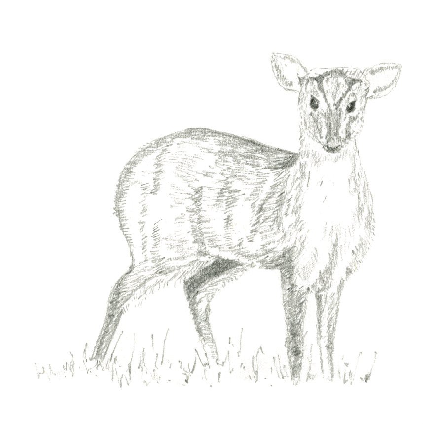

在我发现雪花莲不久后，天气和
景观变得坚决地潮湿、寒冷和无色。
白昼时间仍然短暂，光照水平很低，振奋情绪的神经递质消退，能量水平下降。经过几天这样的天气后，移动变得困难。我蜷缩在小屋里，我的心被一层萎靡不振和不动的毯子压着。我渴望阳光。我听《魅力四月》的有声书，那些描述紫藤盛开和沐浴在阳光下的花园的段落是一种慰藉。我大量睡眠，像一只忧郁的刺猬。
随着月份的推进，天空放晴，温度下降。水坑结冰，泥土变硬，我走在上面时发出砰砰声，任何剩余的林地果实都被冰晶刺穿并爆破细胞而变黑。这种弯刀般锋利的冬日，在精致的水彩天空中有淡淡的低阳光，可以清除我头脑中的昏沉。我感激这种等压线的振奋性转变，当安妮和我踏上树林中熟悉的小径时，我的脸颊在冰冷的空气中刺痛。我在年轻山毛榉顶部听到更多长尾山雀的声音，瞥见它们在干燥的铜色叶片间飞舞。我们沿着榛子生长的角落追踪树林的边界，沿着环绕其边缘的粗糙黑刺篱笆。在
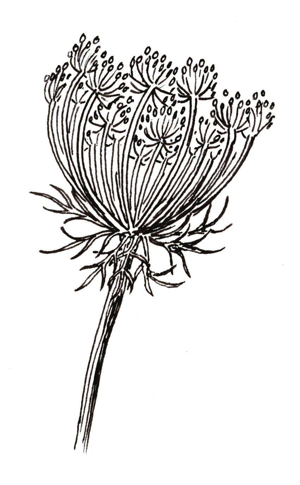
我们右边，山毛榉下面，富含白色粉笔的

土壤在一些地方突出，野胡萝卜和篱笆欧芹的种子
头部、草和纠缠的光秃蔷薇构成了
灰色和浅棕色的拼布。这里和那里
有霜池。
矢车菊，一种矢车菊的多年生亲戚
，在这里生长，在六月和七月形成
盘旋蝇、蜜蜂喜爱的强烈紫色薄雾花朵
和蝴蝶。在温暖的日子里，平坦的、
褶边饰带的深紫红色花朵是好的
观察当地昆虫多样性状态的地方。现在，在一月份，我十月份画过的那些干枯的种子头依然挺立着。
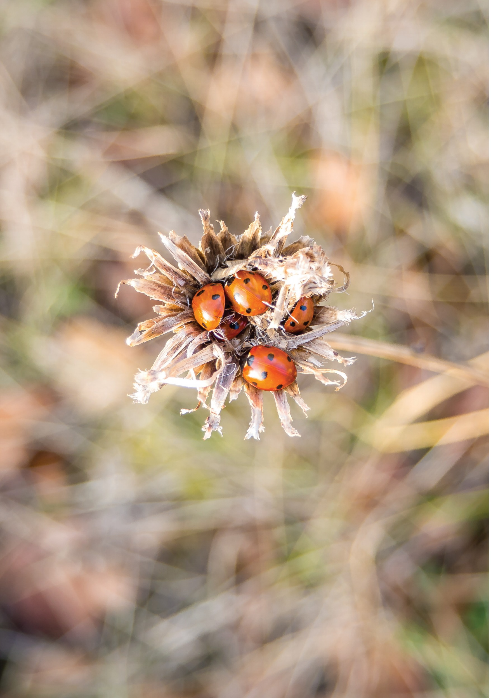

阳光打开了它们花瓣状的鳞片，形成了像微型干燥向日葵一样的形状。当我仔细观察时，视野中闪现出一小点红光，起初我以为是弯腰太快引起的视网膜闪光，但它持续存在，仔细看后我意识到在许多莲座状结构的中心有瓢虫。在其中一个里面，五只瓢虫静静地栖息着，一动不动，处于冬眠的昏睡状态。种子头的中心有绒毛，能够困住空气形成绝缘层，防止霜冻渗透，并在晴朗夜晚温度下降时为瓢虫提供保护。
瓢虫成群聚集过冬是有原因的。如果瓢虫在活跃的日子里被鸟类或其他捕食者攻击，它会从腿关节处产生一种淡黄色液体，这种液体有个相当阴森的名字叫”反射血液”。它富含生物碱，对鸟类来说味道苦涩难闻。配合其鲜艳的色彩，这种反应是一种有效的威慑手段，大多数鸟类在尝试吃掉第一只瓢虫并嘴里满是刺鼻毒素后会避开它们。在冬季，当它们通常的蚜虫或介壳虫食物不可获得，温度降得太低无法活动时，瓢虫必须冬眠才能生存。产生反射血液需要消耗瓢虫无法承受的能量，所以在十一月到三月间，它们不再对攻击产生这种反应。相反，瓢虫会聚集在霜冻无法到达的地方：在紫杉的针叶间，在山毛榉卷曲干枯的叶子里，或在野玫瑰枝条的弯曲处。如果知更鸟或篱雀决定尝试冬日瓢虫小食，群体中可能会失去一只，但其余的会继续聚集在一起，乍一看像一只相当大的昆虫，展示着红黑相间的警告色彩。大多数个体会存活到三月或四月天气转暖，然后开始它们的一年。看到这些深受喜爱的甲虫在它们小小的植物床上相依为伴，带来一种如同发现宝藏般的兴奋感。对我来说，这些是甲虫红宝石。本月早些时候随着阴湿天气而来的忧郁情绪稍微消散了。
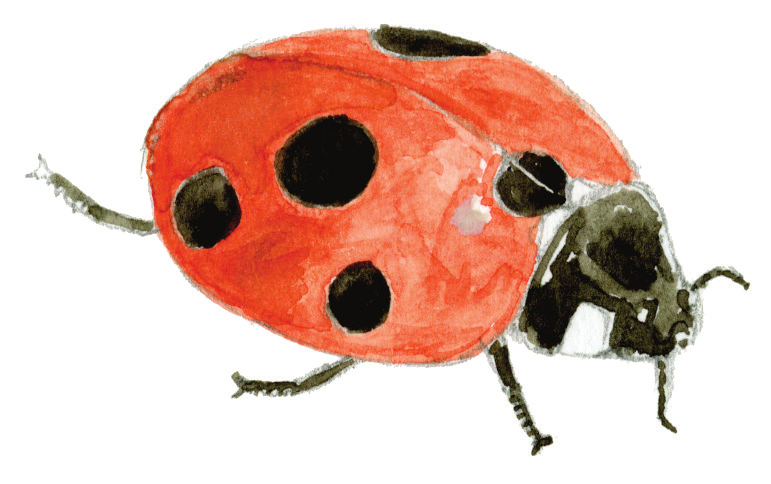
我听到消息，这消息让博物学家的心像Annie闻到香肠味时一样雀跃。有一群椋鸟聚集，多达四万只，每天晚上在沃尔伯斯威克海滩上空盘旋翻飞，我在Instagram上看到了证据。我知道看到一大群鸟像单一生物体一样在空中舞蹈会帮助驱散我的冬日阴霾，我渴望亲眼目睹，于是我给刚搬到萨福克的朋友Mel发消息。她也是博物学家，对这个想法同样兴奋，所以我开车接她，我们驶向沃尔伯斯威克，在黄昏前一两个小时到达。穿过一座混凝土桥，我们爬过沙丘，朝着塞兹韦尔和一片广阔的芦苇床方向走去。看起来我们都有检查鹅卵石的冲动，这片海岸线有大量海水冲磨的燧石、红玉髓、碧玉甚至波罗的海琥珀沉积，所以部分行程是弯着腰度过的，眼睛盯着砾石，寻找有洞的巫石和圆润如蛋的燧石。
我们沿着环绕芦苇床的高沙丘小径行走，我听说椋鸟来这里栖息。当光线开始暗淡，云朵呈现杏色和桃色光泽时，我们的眼睛紧盯着地平线。“哦，它们来了，”我兴奋地说，看到一群鸟从远处的林地上方出现。当它们飞近时，分辨出是乌鸦，不是椋鸟。令人沮丧的是，又有几群鸦科鸟类飞过，所以我们把双筒望远镜转向芦苇来分散注意力。一只小白鹭在池塘边缘站岗，然后展开弯曲的翅膀飞起。看到白鹭时我体验到与看到灰鹭时同样的兴奋。这群鸟的轮廓有种翼龙般的古老感觉。它在空中的动作似乎是悬臂式的，略显僵硬，仿佛是一只木制的鸟类吊饰，有人拉动了连接的绳子，让它进入木偶般的飞行。

天空中依然没有椋鸟，但我们拒绝承认失败。一小团翻滚的雀鸟云团掠过芦苇顶端，但黄昏已经降临，Mel和我都分辨不出它们是什么。天空的玫瑰桃色变得更加生动，倒映在白鹭曾站立的池塘中。有几分钟时间，我们的景色异常美丽。我们又逗留了一会儿，讨论土壤的药用特性和我们对乌鸦的喜爱，观察着色彩的变化。天空的光芒消退，光线变得颗粒状，意识到椋鸟不会出现了，我们沿着沙丘向村庄走回去。我们没有看到期望中的writhing鸟群，但一种正确感降临了。与朋友在海岸度过的时光具有恢复性，在之后的几天里我都感觉更好。
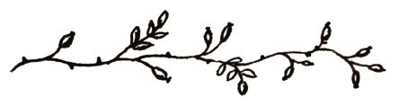
月末时我经历了一阵，或者说是一群，猫头鹰目击事件。就像十二月的雀鹰一样，它们似乎协调了出现时间，仿佛它们之间讨论过并决定应该现身
在一月的最后一周，这些场景接连出现在我面前。一个晚上，孩子们都上床睡觉后，焦虑爬上心头，春天似乎还很遥远，我沿着通往达灵汉姆的常走路线开车，需要分散注意力，享受被黑暗中温暖的车厢包围的舒缓感觉。
当我左转朝哈弗希尔方向行驶时，乡村风景豁然开朗。道路左侧的大片田野边缘长着大戟草的种子头和年轻的梧桐树。右侧是围栏，围栏后面是一片牧场，当我开车经过时，围栏的视觉线条似乎有些不同；两个黑色的形状打破了栅栏的节奏。我在下一个农场小径处调头，开回去看个究竟。当我看到两只小猫头鹰像微型哨兵一样站在围栏上时，我的心跳了一下。随着汽车的靠近，它们起飞了，做着重叠的弯曲飞行路径，远离然后又回到它们的岗位。
它们的飞行风格略显狂乱，像海雀或鹧鸪的飞行。有一种鸟儿匆忙的感觉，一种真的不应该放慢速度的鸟，免得从空中掉下来。这是一个滑稽的景象，就像它们凝视汽车时那明显皱眉的表情一样。小猫头鹰眉毛上的羽毛图案使它看起来永远在怒视。
几天后，我开车去隔壁村庄的课后游戏小组接我最小的女儿。当我经过当地农场商店附近的那排年轻椴树时，一只谷仓猫头鹰坐在其中一根树枝上，凝视着下面的草地。白昼几乎过去，黄昏降临。这只鸟的苍白使它看起来像是明亮天空下黑色猫头鹰的摄影负片。就在几米外是一个谷仓，我知道猫头鹰在那里筑巢。它是农场建筑群的一部分，在七月访问小诚信商店买鲜花时，我听到了从谷仓波纹铁墙壁传来的粗糙嘶嘶声。在我站立的庭院外面，我看到了一个旋转的动作，走到门边，我看到一只谷仓猫头鹰飞进了谷仓墙壁在屋檐下的一个洞里。农场所在的两个村庄之间的土地是休耕田和原生古老草地的拼凑，谷仓猫头鹰似乎在这里茁壮成长。谷仓猫头鹰的巢是一个令人鼓舞的迹象，暗示这些田野中有健康的老鼠和田鼠种群。尽管我在这里看到猫头鹰的频率相对较高，但我从不厌倦看到它们，也不认为这是理所当然的。
接下来的一周我去了萨福克海岸。一个小小的改建奶牛棚将成为几天的家，我要在那里写作，短暂地从育儿中休息一下，在海岸多待一些时间。当我在西布顿格林转弯时，汽车大灯扫过整齐的树篱，就在那里，坐在修剪过的女贞树顶上，是一只褐色猫头鹰。我后面没有车，所以我停下来，光柱照亮了这只鸟，它坚守阵地，似乎并不慌张。

它恶狠狠地凝视着汽车，从一边到另一边转动着头，试图收集更多关于光源的信息。它的胸部羽毛图案像橡树皮，提供伪装，让它在白天坐在树上不被注意。它嘴巴两侧淡灰色羽毛的斑块给它一种长着胡子和傲慢的样子。
自从我小时候《松鼠纳特金的故事》作为睡前故事读给我听以来，我一直对褐色猫头鹰有些敬畏。不礼貌的松鼠主角嘲弄并在褐色老猫头鹰老布朗周围跳舞，老布朗被推到猫头鹰耐心的极限之外，突然失去雕像般的镇定，用爪子将纳特金钉在地上。比阿特丽克斯·波特对这个场景的画作显示老布朗带着狂乱的神情，意图杀死。纳特金勉强逃脱，但我总是觉得那幅画和故事令人毛骨悚然。这也许是我第一次意识到自然可以同时迷人和残酷，看到这只褐色猫头鹰坐在树篱顶上让我想起了童年对老布朗的恐惧
以及世界可能是个困难地方的第一次不安感觉。
这只猫头鹰的羽毛看起来非常柔软，我发现自己渴望触摸它们。浓密的羽毛有助于提供温暖，这对经常坐着等待猎物而不是主动寻找的猎手来说至关重要。最外层的飞羽有梳状的”流苏边缘”，有助于扰乱气流，使鸟儿在俯冲猎物时保持翅膀拍打的静默。它富有表现力的前向眼睛，可能给人以猫头鹰聪明的概念，是

用来尽可能多地将光子聚集到视网膜中，
让它更清楚地看到猎物并在猫头鹰的光线中伏击它。猫头鹰最吸引人类的特征是这个鸟类家族为了更有效地捕食小型哺乳动物而进化出的特征。我的树篱栖息褐色猫头鹰最终决定离开，用栗色和巧克力棕色条纹的翅膀飞走了。


[- M][onth -]

自新年以来的天气比去年同期更冷，植物日历因此发生变化。当地植物群体内的分子时钟放慢，叶子的生长和花蕾的出现进入停滞状态。自从我们来到这个农村沼泽地生活以来，这一年在我心中被描绘为花卉的演替，一种
野花按月份进展的时间传送带，从二月的附子花和雪花莲开始。今年熟悉的野花接力赛开始得很慢。低温延迟了发令枪的响起，我焦躁不安地等待着。我决心寻找尽可能多的季节变化迹象。
雪花莲刚刚发芽就停滞在那里，像是被暂停了动画。最终，不可避免地，它们开花了。最早开花的是我邻居那片土地上的，我上个月发现了它们的嫩芽，这是一个巨型品种，比风信子还高，白色的花朵有软糖宝宝那么大。当我和安妮一起走向主林地时看到它们的花朵，对我的大脑产生了如此令人愉悦的效果，我非常高兴看到它们，几乎要流泪了。那周晚些时候，我在去超市的路上经过埃克斯宁时，在路边看到了一大片白色。数百朵雪花莲在那里盛开，这是一个美好的景象——干净清新，就像植物界的新床单。我把车停在附近拍摄它们，陶醉在它们的数量中，让自己被这个季节变化的有形标志所安慰。

就像第一只燕子的到来一样令人振奋。这证实了真正春天的来临，当阳光在我走在林中时温暖我的背，当橙尖蝶在蒜芥上飞舞，当田边和路边戴着牛防风草精致花边领的时候。这是一个微妙的路标，我觉得非常鼓舞人心，每年我都像圣诞节早晨睁大眼睛兴奋的孩子一样寻找它。野樱桃李总是在这里沼泽地边缘最先开花。它精致而短暂，花朵比黑刺李或野李子稍大，以前一年生长的绿色细长茎干为标志。
我从伯韦尔驾车经一条安静的小路到埃克斯宁，有时我在耕地里看到野兔。一小片成熟的林地沿路延伸几百米，让位于沼泽地特有的开阔平坦田野和树篱。我开得很慢，希望能看到野兔，在林地边缘让位于马道和新犁过的土地的地方，有一个微弱的闪光，一点额外的光线。也许是困在树枝间的垃圾，也许是透过树篱可见的晚冬天空碎片。我靠边停车。就在那里，今年第一朵花。精致的小白花杯装饰着樱桃李的几根枝条。
在中国和日本，早期的梅花，梅花（中文）或梅（日文），因其在大地仍被冬天束缚时出现而受到尊敬，因为它可以在积雪仍覆盖地面时开花。然而它也是即将到来的春天的标志，所以它同时象征着两个季节的交汇。这些花朵如此重要，以至于梅被描绘在文学和古画中，甚至用米浆制成特殊的糖果，而日语中梅的词汇在俳句和连歌诗歌中被用作春天的季语（与特定季节相关的词或短语）。早梅据说是避邪的护身符，经常种植在日式花园的东北方向，据说黑暗力量就是从那个方向散发出来的。这种英国樱桃李，作为那些被庆祝、描绘和思考的亚洲版本的表亲，花朵要小得多，我想知道是否有人注意到它在这里，在严峻的沼泽地田野边缘以非常微小的方式预告着温暖的日子。当我回到房子时，我用铅笔画记录了这个小但重要的发现。
困难思绪的风暴云在我意识的边缘隆隆作响；我的大脑需要风景的慰藉，我开始了我希望是治愈性的驾驶。在这样的汽车旅途中，我经常保持车窗开着，即使在冬天，因为冷空气能激活我的感官，可以将我从忧郁中唤醒。在达灵厄姆之外，我走了一条新路线。道路蜿蜒，高高的树篱沿途形成走廊，当风景在我面前展开时，有一个灰色、棕色和疲倦冬季绿色的柔和调色板，就像用实用面料缝制的被子，相当粗糙而破旧。这些景色中几乎没有什么能振奋我的精神，但比躲在我们朝北的小屋里渴望春天要好。
距离黄昏还有一个小时左右，当我驾驶时，云层开始散开，露出椋鸟蛋颜色的精致透明天空。当太阳向地平线移动时，冬日的光线似乎从我经过的树篱顶部散发出来。我继续了一段时间，享受着向萨福克更深处移动时乡村的轻柔起伏。我沿着主路穿过卡尔顿格林，经过一堆十七和十八世纪的淡彩色小屋，直到我到达村庄中心，在标记十字路口的路标旁边，我发现了一个美丽的景象：一片朝鮮薊种子头，和我一样高，在冬日天空中形成轮廓。每根茎的末端都有一个激烈多刺的球体，让我想起中世纪的武器。巨大的锯齿状蓟状叶子向下弯曲触及周围的草地，就像天鹅的翅膀。这不是野生景象；有人在这里种植了这些朝鮮薊，但它们雕像般的比例，它们在天空中形成的戏剧性形状，以及它们起伏农田和林地的背景引发了那种


我沿着这条新路线继续前行，太阳越来越低。离阳光最远的地方呈现出鲜艳的蓝色；从这一点沿着子午线向日落方向画一条线，会穿越最微妙的渐变，从深靛蓝色到桃肉的颜色。没有云彩，每一根树枝、叶子和栅栏都在蓝色和金色的背景下显得黑暗而清晰。右侧路边矗立着成片的川续断。在一个地方有数百株，也许数千株。它们的剪影en masse看起来像一群贾科梅蒂(Giacometti)细长而令人不安的人物雕塑。
川续断的种子是金翅雀在
[-]81
冬季最喜爱的食物；这片种子头就像是它们的巨型超市，我想知道白天是否会有成群的金翅雀聚集在这里。我决心回来一探究竟。
我转过一个弯，看到一只仓鸮在我左侧的路边缓缓飞过。我靠边停车观看。它悬停了片刻，然后俯冲到长草中。我等待着，被刚才目睹的一切深深吸引。过了一会儿，我意识到自己在屏住呼吸，
- - 然后那只猫头鹰从草丛中飞起。我停在离它仅几米远的地方。这只鸟没有理会汽车，低飞过马路，停在车道另一边的田野里。当它经过时，我看到它爪中有一个小小的灰色身体和短尾巴：一只田鼠。我掉头开车到猫头鹰降落田野附近的一个大停车区。它就在那里，坐在草地上，隐藏在
[-]82
树篱后面，耸着肩膀。我猜它正在进餐[- -]
它选择这个地点是因为这里有遮蔽。当猫头鹰继续进食时，太阳几乎到达了地平线，树木和树篱被金光环绕。这是我在自然界目睹的最美丽的景象之一。
它提醒我，无论我被抑郁症折磨得多么疲惫，无论它多少次欺骗我的思想，让我四肢沉重，让我的前景暗淡，但像这样的邂逅所带来的药用兴奋依然值得我努力让大脑充满这种感觉。
没有其他人看到这只猫头鹰在萨福克郡的这几平方米土地上捕猎，或看到它在田野里进餐。猫头鹰只用了几秒钟就完成了捕杀，在它落到树篱后面觅食后不久，它就用苍白的翅膀飞走了。这一切如此短暂，但我感到能目睹这一切是巨大的荣幸。我知道仓鸮就生活和繁殖在离我家半英里的地方；它们每天都必须捕食，但我看到这只猫头鹰就在我面前成功捕猎，这就像1980年代初在彭布罗克郡(Pembrokeshire)时，我看到藤壶打开小小的活门，开始在我桶中收集的海水中觅食的那一刻。
每一周都让日历更接近三月，北半球相对于太阳的位置都会发生变化。

我们每天都会获得更多一点阳光，平均气温上升几分之一度，植物内的酶变得更加活跃，许多物种的细胞开始分裂。生长季节开始了。随着二月的推进，山毛榉的芽苞开始膨胀，报春花开始绽放，在过去四个月里让我深受鼓舞的峨参幼苗叶片开始扩展，
83[-]
新的胚胎生长出现了。黑刺李枝条长出了小小的花蕾簇，每一个都不比针头大。当我和安妮(Annie)沿着我们熟悉的路线在树林中跋涉时，我停下来仔细观察它们，心中涌起一阵沉默的喜悦——之所以沉默，是因为我还没有完全跨越冬天。真正的春天还没有到来。
然而，我知道标志着从冬天向春天转变的植物路标之一可能即将出现。找到它的证据对我来说意义重大：
- - 这是季节转换和树液开始流动的具体证明。这种自然景象虽然微妙，但对当地的蜜蜂来说非常重要。山羊柳和灰柳的花朵为寻找建立新蜂群地点的熊蜂蜂后，或为必须积累能量以便在四月或五月交配产卵的独居蜂，提供了最早的丰富花粉来源之一。这两个物种都有一个通俗的名字叫pussy willow，因为雄花可以早在二月就出现，覆盖着细密的灰色绒毛，具有孩子们喜爱的猫咪般的丝滑感。
[-]84
我用外套、围巾、手套和靴子把自己包裹起来，走出村庄来到沼泽地边缘。在一个储存饲料的大波纹铁皮仓库后面，有一道满是山楂、黑刺李、梧桐、田枫和我正在寻找的特定树木的树篱。我几乎走到了塔布尼沼泽地(Tubney Fen)才看到今年第一株pussy willow。从有光泽的棕色芽壳中，已经开始长出少数几朵花。我用指尖轻触其中一朵：花朵上的绒毛如此柔软，几乎让我感觉皮肤在触摸空气。强烈的刺骨寒风和无情的细雨斜打在我的脸上，但它就在这里。我被灰色、棕色、褪色的绿色包围着，寒冷刺透我的身体，但这对我来说是一个和
一顿丰盛的烤肉大餐，还有额外的约克郡布丁。
它发生了：冬天的结束正在临近，

春天真正到来的最早迹象在树林和
树篱中显现。在过去的四个月里，当季节性
抑郁症像许多顽固的拖腿、呻吟的僵尸一样
在我的神经元中抓挠我的思绪时，我通过在
树木、植物和野生动物中度过时光来摆脱它。

我去过海岸，参观过水域、树林和草地，
用行走的椋鸟群景象和新生猪殃殃幼苗
的鲜绿色给自己治疗。我在各种天气中
行走，每一次跋涉都让我大脑化学的
指针稍微转动一点，帮助我坚持下去。
有时候，洗漱、穿衣、穿靴子并走出
房子来驱赶沮丧这些看似简单的任务
就像攀登一座山，但大多数日子里我
至少能应付山脚下，足以继续工作、
写作，最重要的是，做父母。
保持抑郁症不发作需要持续的
警惕；这是一场日常战斗，需要
大自然散步、尽可能创造性地度过
时光这些良性武器，以及当我独自
在家时，一个毛茸茸的琥珀色
四腿伙伴的陪伴。当工作量比平时
更大，家庭压力积累，病毒潜伏时，
平衡可能会改变。户外活动的有益
效果可能会减少，或者说，抑郁症
不可阻挡的向下拖拽更强了。在这种
时候，这种无休止、令人精疲力竭的
疾病可能开始获胜。我因为与之斗争
而疲惫，我的能量储备正在急剧下降。
我渴望更温暖的日子，渴望芬兰的阳光
变得更强。随着二月结束，更多的野樱
李花盛开，我拒绝工作邀请，睡得更多；
我画画、收集和拍摄自然发现的冲动
逐渐消退。我开始感到与我所做的一切
脱节。我担心我的抑郁症可能正在获得
优势。

三月初，我回到萨福克郡，决心要目睹我和梅尔在一月寻找的椋鸟群舞。我在推特上看到另一群约40,000只椋鸟出现在明斯米尔，栖息在那里的荆棘和芦苇中。当我到达保护区时，距离黄昏不到一小时，持续的毛毛雨正在下着，光线很暗：前景不太乐观。我穿过游客中心，走上通往保护区另一端海岸的小径。雨变得更大了，但在环绕芦苇床的小径远端，一小群人聚集着，拉起兜帽，相机准备就绪。我意识到他们一定是来看椋鸟的。我加入了他们，询问是否已经发现了椋鸟群舞。相当阴郁的面孔从兜帽下窥视出来。摇头。“它们不是每晚都来。它们可能根本不来。”
我们湿漉漉地站在灰暗的光线中，充满希望地向内陆张望。有人喊道，“它们来了！”但那是一群鸽子，虚惊一场。又过了几分钟。悬念和希望在我们之间悬挂。然后一个小的模糊形状，比它身后的雨云稍微暗一些，出现在远处的林地上方。它接近海岸，在天空的其他地方，一条模糊的灰色带状物出现，在向芦苇床移动时蜿蜒前行。“就是这个。现在它们在这里，”站在我旁边的女士说。更多的小群飞来，飞得很高，超过树顶，每一群都在天空中扭动。突然空中满是椋鸟，直接飞过我们头顶，我们仰起脖子观看它们。当它们靠近飞行时，我感觉好像我就在它们中间，与成千上万的同伴一起翱翔和聚集。这给了我一种令人兴奋的眩晕感，类似于我二十多岁时住在伦敦时的那些时光，
喝了太多酒，坐地铁回家并闭上眼睛。火车似乎向上飞行并违抗重力。被这些翻滚、旋转的鸟类包围，我感到同样的眩晕。

当我观看鸟群不断变化的形状和运动时，我的脑海充满了意象。一大群飞向大海，然后急转弯，形成一个斑点状的弧形，就像未调谐电视上的干扰，当鸟类改变方向并向内陆移动时。这些椋鸟，现在有数千只，表现得像在盘子上摇动的水银滴：小群聚集，分开，然后再次融合。在天空的某些部分，它们密集聚集，像蜂群；在其他地方，蛇形的鸟带在树木上方蠕动。
然后我们发现了一个黑色的轮廓。一只更大的鸟在其中一个鸟群的外围。我以为是雀鹰，但通过双筒望远镜仔细观察，发现它在天空中倾斜时露出镰刀形的翅膀。是吗？我认为是的：一只游隼。我以前只见过一次游隼，那是1991年的学生实地考察，它在斯科默岛的悬崖上飞行，而山鸦在下面昂首阔步，海鹦成群漂浮在海浪上。现在这只鸟更近了，它在狩猎。布里斯托大学的研究表明，如果猛禽在椋鸟中狩猎，椋鸟群舞会更大更密集。人们认为这有助于迷惑捕食者。游隼的存在对鸟类是一种威胁，促使它们做出更加壮观和复杂的展示。
椋鸟群舞本身就是一个奇迹，一个令人敬畏的景象，但看到游隼在它们中间寻找食物
对我产生了更明显的影响。整个冬天我都被沉重的思绪所困，几乎无法在精神上或身体上行动，而这几分钟目睹如此
[-]91

[-]92

巨大而狂野的景象，一只猛禽在成千上万只翩翩起舞的椋鸟中间狩猎，正让我的心灵从黑暗中分离并提供慰藉。
预备舞蹈似乎结束了，因为现在，[[ -]]

在所有椋鸟都知道的某个信号下，分散的群体开始汇聚成一个巨大的、律动的形态。较小的鸟群集体俯冲进入主群体：它们突然坠入群舞的核心，每个鸟群都像鸟类学的瀑布，增加着下方同伴的数量。成千上万只鸟表现得像活的液体。我的心灵因这种惊人行为所需的复杂数学和无声交流而震撼。
现在群舞变得巨大。鸟群扭动的肢体，由它们大脑对彼此飞行路径的反应协调，从边缘伸出然后退缩，仿佛像空中变形虫一样爬行。一瞬间它呼应着达利时钟的熔融垂落形状，然后是螺旋形的千足虫，而这40000只鸟始终如一体般移动。当鸟群移动使它们的身体在雨云前形成剪影时，一道黑色波浪穿过鸟群。当这些密集的黑色鸟群波纹穿过群舞时，一个安静兴奋的气泡在我的大脑中弥漫。它表达得很糟糕且模糊，但某种喜悦在那里。我知道如果我能在夏末或初秋观看这个自然界最令人谦卑的奇观之一，我的反应会更强烈，它会更深地渗透到我的意识和潜意识中。自十一月以来，一层沮丧情绪已经增长，在我的神经元中变得厚重不透明，形成了对积极体验的抗拒屏障。然而在这些时刻，在椋鸟难以置信的
[RSPB明斯米尔椋鸟群舞] [93 [^] [-]]
美丽舞蹈面前，我确实享受到了与黑暗的分离。
不过现在结束了。天空失去了所有光芒，椋鸟已经栖息。我感到深思和感激，但又相当麻木。我很高兴坚持寻找它，我知道这将是我见过的最不可思议的事情之一，但它的效果并不持久。

- - 尽管群舞令人惊叹，但当我回到家时，整个冬天一直支撑着我的最后一丝精神能量消退了。缺乏阳光和过去五个月抗拒这种疾病所需的不断日常努力已经造成了损失。我的大脑化学发生了重大变化，我急剧下沉，穿过积极思想的脆弱地板，沿着抑郁症最深井无摩擦的陡峭井壁下坠。樱桃李花开了，紧接着是黑刺李，但我对这些春天的迹象毫无察觉。自十月以来我如此渴望的当地自然变化开始发生，但我现在专注于试图获得一些牵引力，任何小的立足点，对抗井壁的光滑表面。
移动身体所需的精神努力变得压倒性。我的日常待办清单从一月的”完成文章，拍摄报春花，投递文稿”变成三月的”洗澡，吃早餐，刷牙”。这些小任务是我能做的全部。有些天我无法在清单上勾掉任何事情。我大脑化学的转变让我沉重，移动变得困难。
快乐从所有事物中流失，就像水流过邓杰内斯的卵石。即使是油炸食品也失去了吸引力；甚至是奶酪。奶酪，我亲爱的发酵咸味鲜味laden朋友，不再诱发那种强烈香味的全方位满足感。它尝起来什么都不是；像糊状物和空虚。我吃非常尖锐的盐醋薯片和酸涩的蜜橘，试图唤醒我大脑的那部分——当我健康时，每当我吃美味的东西，它就会被神经递质和电信号的混合物点亮。现在对这些尖锐味道的反应是沉闷的、死寂的，吃东西的快乐消失了。我收藏的美丽柔软纱线感觉像粗麻布、稻草，我平常将它们编织成手套和围巾的冲动，享受丝滑纤维的质感、钩针的光滑和我的手制作针法时线股形成的图案，都蒸发了。当这种疾病像一只贪得无厌的灰色蛞蝓吞噬我的心灵时，感觉就像我整个身体和每个感官的反应都变得休眠。我大脑的愉悦中心运作不正常，这引发了更多忧郁。我想念新鲜炸薯条的美味和巧克力蛋糕的丰腴快感。以这种方式失去快乐被称为快感缺失(anhedonia)，是抑郁症的常见症状。这种疾病似乎狡猾，在这种剥夺中精于算计。它是自相残杀的，以自身为食，当它偷走快乐时就加强了对大脑的控制。
抑郁症的原因仍然相对不甚了解。抑郁和自杀患者的血清素处理途径被耗尽，所以像SSRIs(选择性血清素再摄取抑制剂)这样提高血清素水平的药物被用来治疗它。这类药物对许多患者有效，但对三分之一的抑郁症患者几乎没有效果，这表明抑郁的大脑中发生了其他生化变化。例如，去甲肾上腺素这种神经递质的水平在长期低落情绪期间也会改变，并被一些SSRIs提升。还有

95[-]
无疑还有更多与抑郁症相关的生化变化尚待发现。慢性压力是许多病例中的常见因素，导致压力荷尔蒙皮质醇水平升高，如果压力源长期持续存在，患抑郁症的风险就更高。新的研究开始显示，肠道菌群、皮质醇通路和抑郁症之间甚至可能存在联系。这些荷尔蒙、神经化学和微生物系统的变化是这种疾病机制的线索，但这是一种高度复杂的病症，需要更多研究来更详细地理解这些联系。
我的世界变得狭窄。我待在小屋里，缓慢地在房间之间移动。我的思绪变得迟钝混乱，绘画、摄影和写作的想法都消失了。我避开朋友，拒绝社交邀请。我每天只能完成最简单的任务，对于自己无法为家庭做出贡献、履行工作承诺和做一个尽责的父母，我感到压倒性的内疚。自责让我的心情更加低落。
起初我试图继续。我尽力在床上工作；在头脑比较清醒的短暂时间里继续写作。睡眠主导着一切：我几乎无法保持清醒，除了整夜的睡眠外，每天还要打三次、有时四次盹。我的记忆模糊了，有几次我发现一天已经结束了，而我几乎没有意识到它的开始。
在我的大脑中有一些隔间，我把发生过的最困难的事情保存在那里：我十九岁时祖父母去世的后果；我因病无法完成的第二个大学学位；一个非常不安分、看似不快乐的婴儿，它对我作为母亲的信心产生的影响以及由此失去的一段友谊；一位家庭成员的严重脑损伤，以及当我谈论此事时邻居们的冷漠和排斥；某些脱节且可能永远无法正常运作的家庭关系。

这个清单中的每一项在这里都只用了很少的词来表示，但每一项都像缠绕在我额叶间的钢制荆棘丛一样复杂而痛苦。我已经尽我所能用谈话疗法和抗抑郁药的药物安抚来解决每一个问题。我已经积累了尽可能多的接受，然后尽我所能紧紧地把每一个都钉在我脑海中的盒子里。那个婴儿不安分是因为她对世界的反应方式略有不同。我没有做错任何事，尽管当时我完全相信我做错了，结果我的产后抑郁症很严重。脑损伤是一个可怕的事故，改变了一个生命和周围的生命。邻居们只是不想考虑一个受损的、无法正常运作的大脑。这让他们想到死亡，所以当我谈论它时他们从我身边退缩。当时我感觉像个被遗弃的人：他们将我排除在曾经是生命线的社交接触之外，我难以理解他们为什么要这样做。但也许那些人在那个时候并不是最好的陪伴者。
我现在已经与这些事情中的许多达成和解，不再责备自己，但在我储存这些锋利、刺痛痛苦经历的盒子侧面有看不见的缝隙，难以察觉的洞，记忆从中渗透并影响我对生活的看法。冬季缺乏光照的影响叠加在这些记忆上，当与我们家庭生活某些方面导致的长期高水平肾上腺素和皮质醇结合时，很难将我的思绪从这种棘手的纠缠中解脱出来。
冬季缺乏阳光改变了我的大脑化学成分，并在圣诞节前后的一两个月里抑制我的情绪。现在，在三月份，我被向下拖拽，所有的盒子似乎都飞开了，一种压倒性的自我憎恨和自我惩罚在我脑海中爆发，这是不合逻辑的，是不需要的，但却无法平息。这是抑郁症武器库中最危险的武器。具有讽刺意味的是，早春，尽管它承诺阳光和生长，但往往是我最难抵御最低沉、最险恶精神状态的时候。我的思绪旋转，我的头脑被卷入一个由尖刻的自我指责组成的漩涡中，这些指责无休止地列举我没有正确做事的方式，没有把任何事情管理得足够好，显然是一个废物。对我未能实现的事情以及他人的冷漠和批评的破碎记忆为我的思想提供燃料：他们那样表现是因为我有问题；我没有把事情做对；我不好。这场风暴是贪得无厌的，当它翻腾时，它寻找证据来支持它唯一的断言：我一文不值。喧嚣变得令人无法忍受的响亮，完全占据了我的头脑。

自杀意念(suicidal ideation)是一个听起来相当良性的医学术语，用来描述三月中旬开始在我思想中显现的东西。这是抑郁症的黑洞：一个重力强得令人恐惧的事件视界。被冬天及其对我大脑造成的化学改变、持续不可避免的压力和不现实的自我施加压力所耗尽，我对抑郁症终极目标不可阻挡拉力的抵抗力化为乌有。我的头脑向这种疾病渴望的自我毁灭倾斜。


我想着可以怎样做。这些想法如此强烈，以至于我在一年中的大多数日子里能够使用的分散注意力的技巧，来远离这个悬崖的技巧都不见了。感觉就像我在一只小舢板中停泊在尼亚加拉瀑布的顶端。

我驱车前往A11公路。那里有桥梁。我的
思绪喧嚣不休，专注于这项研究。
哪座桥最好？最有效？最高？
这种喧嚣令人恐惧。感觉像是身体上的，仿佛
我的大脑真的要从头骨中爆裂出来。结束
自己生命的冲动在我脑海中咆哮。开车时我瞥见
中央分隔带上生长的矮小树苗。
绿色的闪现和汽车的嗡嗡声与节奏
平息了内心自相残杀的喧嚣。我大脑中
沉寂了数日的一部分苏醒了：那是我
健康自我的部分，寻求大自然作为良药的部分。“你
不太好，“它说；”寻求帮助。“这个声音非常非常
微弱，但我倾听了。我继续沿着A11公路行驶了一段时间，
让汽车稍微抚慰我的心灵。我经过
更多树木。树木：绿色，安慰。我的心灵并不平静，但
那种可怕的翻腾和冲向不归路的
冲动已经停止。有了一些宁静。我开车回家。我
告诉丈夫我有多么不舒服。我上床睡觉，用
电影分散注意力：过去的场景，繁忙的连衣裙，整齐
结尾的故事，逃避现实。他给我带来茶和
美食。第二天早上我去看医生，制定了
康复计划：休息，更高剂量的抗抑郁药，
与心理健康支持团队交谈的预约。
医生给了我一个地方的电话号码，如果我的
黑暗念头变得压倒性，我可以住在那里。于是开始了缓慢
艰难地爬离那个我的思想
希望我消失的地方。


[- M][onth -]
任何人看看我的处境，质疑我为什么患有抑郁症，都是可以理解的：一间漂亮的小屋，一段婚姻，两个
孩子，一个运营良好的小企业。这些
都是非常非常好的事情，我对此
非常感激，但这种疾病不在乎你是谁或你如何
生活。不可否认，日常生活对我的家庭来说很艰难。有
很大的压力和疲惫，有时感觉
我们在不断救火，只是为了继续前进。一系列困难事件——事故，严重
疾病，它们的后果以及其他人对
这些事情的反应——在大约三年的
时间里接连发生，彻底改变了我们的处境。随着每个
棘手情况的发生，
黑狗高兴地搓着爪子，收拾行李，
最终在2008年永久搬进了我的额叶。有时，当我特别
疲惫时，它会举办一个盛大的派对，邀请它的
朋友致残焦虑和自杀意念过来狂欢。这就是上个月发生的事情。
上个月在我大脑中发生的特殊
神经元状态可能是致命的。在我
因显示抑郁症症状而责备自己的
日子里，我发现直视这个事实是
有帮助的。自杀心态感觉
与普通抑郁日子的体验
明显不同。思维更快，
很像跑下陡峭的山坡，它们
似乎被一种响亮而紧迫的
自我毁灭需求所驱动。事实上，有一些
证据表明自杀的大脑是不同的。一种叫做γ-氨基
丁酸(GABA)的神经递质充当
神经元活动的一种抑制剂。
在自杀受害者的大脑中，
GABA的一个受体

表达水平较低，意味着
其调节作用减弱。这
与我在三月份经历的急促、翻滚、负面
思维是吻合的。它们肆意横行，
很难找到方法让它们
及其险恶意图安静下来。据认为
自杀大脑中的这种变化是表观遗传的。也就是说，
GABA受体表达和活动的变化
是由我们的环境影响我们基因
表达方式造成的，这反过来影响
我们的神经元活动。这本质上意味着
自杀想法可能是由一系列困难
环境或生活事件引起的。这项以GABA为重点的研究
暗示了导致最严重抑郁症病例的
机制，但事实上自杀想法的确切
生化原因仍然知之甚少。
当我在几个月后写这篇文章时，我的心态
不同了。我不能说我充满了喜悦，但我
还好。我在照顾女儿，她有轻微的
胃病毒。我给了她一个温和的创作任务，
她很满足。我在工作：画一只鹪鹩和写作。
我吃了饭，她也吃了。洗衣机
在其循环进程中发出令人安心的嗡嗡声。
我能听到一只雄性黑鸟在我们花园的树篱中歌唱，
告诉邻近的鸟儿这个地方，我们的花园，
是它的领地。黑鸟给我带来一阵……是的，
幸福。这是一种抒情的、短暂的、怀旧的声音，
在我脑海中引起明亮的色彩闪烁。事情
还好。我上个月描述的黑暗状态
现在我写作时并不存在，这种解脱是巨大的，但我
在生活中曾多次沉浸其中，
它像黑曜石刀一样险恶和致命。
随着四月的开始，我的抑郁症稍微好转，但
三月份在我大脑中发生的风暴仍在
隆隆作响。当它达到峰值时，感觉就像我额叶中的
每个神经末梢都在剧烈燃烧。当时
我惊讶于它没有发出声音，因为在我脑海中它
似乎像持续的神经元雷声一样咆哮，我渴望
能够让它安静下来。这种体验就像试图
同时照顾六个尖叫呕吐的婴儿，而
有人在我耳边低声说着极其可怕的话。
看完医生后，我把大部分时间都用来
睡觉。SSRI抗抑郁药物剂量的增加对我的大脑
产生了立即的麻木、镇静效果，
而且，我很累。在这次抑郁发作的后遗症中，感觉好像我的神经末梢被激烈的无声燃烧烧焦了：好像我的大脑回路已经熔断，之后发生了某种关闭。
[-]106
之后我知道任何形式的分心都会帮助我，[- -]
但我的能量水平已经减少到微弱的闪光：
在康复期间出去散步几乎是不可能的。电影有帮助，疯狂观看《鲁保罗变装皇后秀》中那些闪闪发光、昂首阔步的精彩表演让我在四月的大部分时间里坚持下去。我对柔软、美丽毛线的欣赏能力以微小的方式回归，由于我们小屋最近的建筑工程导致长期没有暖气，我为我最小的女儿钩了一些无指手套。制作针脚是舒缓和重复的，当我看到她戴着手套时，我感到一种小小的成就感。我去朋友夏洛特那里住，以逃避无法在家庭和维持家务方面提供很大帮助的巨大内疚感。环境的改变帮助了一两天，但我的情绪又低落了，我回到家。而且，我不想向夏洛特展示当我处于最低点时发生的那种无生气绝望的深度。
下沉的黑暗仍然存在。

我读到埃克塞特大学进行的研究，显示景观中鸟类的存在可以帮助缓解抑郁。我决定尝试一些鸟类学自我治疗，并试图鼓励鸟类进入我们的花园。在这种疾病的以前发作中，我注意到有一个小项目可以专注于，可以帮助将我的注意力从无法忍受的自我滋养的内疚和悲伤中转移开。制作手套就是一个例子，我渴望找到另一个。我为自己买了一个美丽的手工锻铁喂食站
107[-]
看起来像一棵细长的树，有着扭曲的枝条。由于透过窗户观看蓝山雀的可能性给了我一点能量，我带着女儿们去当地的园艺中心，我们的篮子里装满了鸟类零食：面包虫、花生、尼日尔种子、脂肪球、一种给知更鸟的麦片和几个喂食器。我们回到家，在窗户附近竖起了这个树状站台并装满了喂食器。我们已经好几年没有为鸟类悬挂食物了，所以我
- - 期望很低。我希望一些有羽毛的访客可能在一周左右到达，但在二十四小时内，一只蓝山雀

开始热情地进食，紧接着是一只家麻雀。
在接下来的日子里，一群麻雀成为常客，还有一只大山雀、一对金翅雀、一只椋鸟，让我非常高兴的是，还有一小群长尾山雀。我喜爱这些小鸟。它们很小很有魅力，像充满活力的羽毛棒棒糖，它们的俗名包括”bumbarrel”，因为它们几乎球形的鸟巢，还有”飞行茶匙”。在我们自己的花园里听到同样的高音调交流叫声令人兴奋，就像我在十二月看到它们在冬季树枝间做环形飞行的那天在树林里听到的一样。
[-]108
当我冒险进入花园时，它们似乎不害怕我的存在，它们留下来进食，[- -]

彼此交谈，在它们轮流使用喂食器时在树篱中飞进飞出。我裹着巨大的开衫和围巾坐着抵御春天的寒冷，同时观看它们。对这些小鸟的感激之情爆发，我能感受到内心的变化。这是药用的。这就像后院的活鸟频道，它正在帮助驱散阴霾。
当我在女孩们上学后的一个早晨坐着喝茶时，翅膀发出骚动声，一团粉色-黑色-白色-蓝色的模糊，一只松鸦降落在喂食站旁边的地面上。我以前从未在花园里见过松鸦，但我们创建的这个户外鸟类餐厅值得米其林星级，所以我想它已经开始吸引更多不寻常的食客了。松鸦将头歪向一边看着上面喂食器中的面包虫。与此同时，附近一阵忙乱。在我们花园树篱中筑巢的雄性黑鸟看到松鸦时变得怒不可遏。它跑向松鸦，开始用响亮、尖锐的鸣叫声大声呼喊。随着它发出的每个声音，它的翅膀向两侧弯曲，就像一个人发表愤怒的长篇大论并挥舞手臂以示强调。黑鸟似乎很愤怒，这是有充分理由的。松鸦是鸦科动物，乌鸦家族的成员，经常掠夺其他鸟类的巢穴寻找鸟蛋、雏鸟和幼鸟。实际上，松鸦在寻找花生和面包虫，但黑鸟不能冒失去他的雏鸟的风险。尽管体型明显较小，他疯狂地向松鸦扑去，做出啄它的动作。与此同时，我听到安妮在透过窗户观看这场鸟类戏剧展开时发出呜咽声。
109[-]
松鸦跳到一边躲避黑鸟，平静地啄着地上的面包虫。黑鸟似乎在考虑他的位置，然后带着响亮的、翻滚的、愤怒的警报声退到树篱，继续从远处对松鸦发出spink声和鸣叫声。
在我的自然收藏中，我有三根珍贵的小松鸦羽毛，上面有黑色条纹和七月晴空般生动的蓝色。这样的羽毛很难找到
- - 有时在博物学家之间进行交易和交换，因为它们非常珍贵。当松鸦在花园里时，我拿出这三根羽毛凝视着它们。它们有
来自鸟儿翅膀上一小片颜色。
我想知道松鸦羽毛在过去或许像货币一样被交易。我非常乐意用一片培根或几个大蛋糕来换取一两根松鸦羽毛。对我来说，它们就像真正的宝藏。尽管这些鸟儿有着出色的狩猎本领，但它们相当胆小，所以看到我们花园里的这只松鸦被一只尖刻的黑鸟训斥，给我带来了许多周以来未曾体验过的适度自然诱发的抗抑郁剂效果。
第二天，松鸦的伴侣也来了，我感到非常兴奋。
大多数日子里，我仍然缺乏在树林中散步所需的精神能量，所以我坐在窗边观看喂食器旁的羽毛交通。这种看似微不足道且可以说是人为产生的与自然的接触，帮助我度过了四月的许多黑暗日子。
上个月我生病时，春天的进程再次因为严寒的气温、雪和严霜而停滞了几周。我几乎没有注意到这种情况发生。我只是通过卧室窗户冷漠地观察着，看到迷人的冬季景观和花园桌子上高得不真实的雪堆出现在Twitter和Instagram上，最终对此感到相当厌倦。当时，我的心被不同种类的冬天所困扰，我没有考虑这种恶劣天气对野生动物的影响。寒冷不仅阻止了土壤和空气温度的逐渐上升——这种上升允许植物和树木发芽开花，而且雪掩盖或锁在冰箱里的地面食物，如蠕虫、种子和小哺乳动物。结果，许多物种的雄鸟和雌鸟的状况都恶化了。占领领地、寻找伴侣、筑巢、产卵然后孵化和抚养幼鸟都需要大量能量。当春天刚开始时遭遇冬季天气，可能对许多鸟类的配对时机产生灾难性影响。雌鸟必须等到恢复状态后才能繁殖，这种延迟可能阻止配对在繁殖季节抚养额外的一窝幼鸟。
过去五年来，黑鸟每年都在我们的树篱中筑巢。这是一个由女贞、接骨木和黄杨组成的茂密花园边界。我不确定筑巢的是否是同一对黑鸟，但总是在树篱中相似的位置，筑巢通常在二月下旬开始。然而，今年雄鸟和雌鸟都在三月中旬才开始从花园周围收集干草茎、泥土和苔藓，比平时晚了几周。我认为这一定是因为严酷的晚冬天气。现在，在四月，这对鸟儿已经开始每隔几分钟从我们的小块地里收集小蠕虫和昆虫，这表明它们的幼鸟已经开始孵化。在数周疾病中的这个简单而美好的想法非常受欢迎，尽管我渴望拥有它们一点点那种不懈的能量和活力。雄黑鸟试图赶走松鸦的努力依然响亮而有目的，但仍然徒劳。在花园鸟类的等级制度中，雄黑鸟只有在鸦科动物降落在他的地盘之前才是国王。

椋鸟开始大量发现我们的鸟类咖啡厅，经常以吵闹争吵的暴徒形式降临，争夺粉虫和脂肪球块。黑鸟对它们在花园中的存在感到爆炸性的愤怒。每只椋鸟都比黑鸟稍小，所以如果一只飞到喂食站，他会用尖锐的鸟类训诫和大量拍翅来迅速结束它们的拜访。成群的椋鸟带来更多问题。有时他试图逐个对付它们，但这浪费了他寻找蠕虫所需的能量，所以在它们的大部分拜访中，他选择盯着它们并对它们发出警报啁啾声，相当于鸟类集群咒骂，同时继续为他的幼鸟觅食。
我在利物浦郊区长大，那里很少有燕子过夏。看到燕子、雨燕或家燕，即使在它们已经在这里生活了几个月并已经繁殖的季节后期，总是让我感到兴奋。我在生命早期就意识到这些小小的黑色旅行者是特殊的鸟类，是希望的信使，是温暖日子的先驱。

自从2003年我们搬到Fens边缘以来，我注意到燕子每年在4月12日至14日之间到达，但今年这些日期过去了却没有它们的踪影。季节似乎停滞了，我对它们的缺席感到困惑。我转向Twitter寻找可能的解释。燕子已在南海岸被发现，但比平时晚了几周到达。观鸟者中出现了恐慌：当然，全球变暖应该让它们从非洲更早到达这里。三月的冰冷天气不应该影响它们。发生了什么？它们在哪里？有人谈论摩洛哥的恶劣天气和迁徙延迟。我观察天空。我坐在花园里希望燕子能显现。树篱里有叽叽喳喳的家雀，永远警惕的雄黑鸟和一只在我的三色堇植物间安静小心跳跃的岩鹨，但没有尾流线，没有俯冲游泳飞行。长尾山雀成群结队地两三只到达花园。它们停在喂食器上，不受我在附近存在的干扰，小口进食。它们是令人鼓舞的景象，但我的眼睛回到天空，警惕地寻找我渴望看到的鸟儿。
随着月份的推进和温度的上升，我开始在花园里花更多时间。我的康复
缓慢但在植物中的舒缓效果，无论是野生的还是栽培的，都很明显。在阳光明媚的早晨
我给花圃除草，思考着与
土壤中有益细菌的接触，特别是分枝杆菌
疫苗株(Mycobacterium vaccae)以及可能还有其他尚未被
发现的菌株，可以改变我
大脑中神经递质的平衡。园艺令人满足且温和地令人振奋，就像
泥泞的瑜伽，加上观察造访
花园的鸟儿，这帮助我缓解抑郁的想法。我
从播种了切花的花圃中移除接骨木、旋花和偶尔的
蓟草，
准备在今年晚些时候带入屋内，然后我休息一会儿
喝杯茶。我的眼睛向天空望去，
它就在那里：第一只燕子。它在花园上方俯冲，像
一只微小的蓝黑色海豚在空气的波浪中游弋。它沿着
树篱的线条飞行，那里聚集着蚊虫和其他飞行
昆虫，掠过棚屋
的屋顶，当它
到达海棠树时
低空俯冲
继续标记着
我们这小块
土地的轮廓，最后落在
我们的旧电视天线上休息
一下。它从南非飞到这里，在近一个月长的五到六千
英里的旅程中，每天飞行大约二百英里。对于如此小的鸟来说，这是一个令人难以置信的壮举。将
燕子视为面对看似不可逾越的任务时坚持不懈的象征是陈词滥调，但它们的旅程确实是
非凡的。许多在暴风雨中或在途中被捕食而死亡，但大多数到达了，配对，筑巢，产卵，养育幼鸟
并在夏季田野上方移动，像敏捷的羽毛飞镖
在它们聚集在电话线上并离开又一年之前。它们在
我通常身体健康的那几个月里在这里。我非常兴奋地看到这只鸟在它艰巨的旅程后
在我们的房子上休息。它已经到达了它的
目的地，而我已经度过了另一个冬天。我在
露台上小哭了一下。
这是一个非常特殊的地方：
位于Bury St Edmunds附近的一片古老林地，自
十三世纪以来一直是一个
工作中的榛子矮林。

矮林砍伐的产品仍然可以在
林地入口处购买：豌豆支架和用于围栏和
支撑的杆子。矮林砍伐在林地内保持开放的林间空地
野花可以在那里繁茂生长，同时允许
金银花、荆棘和玫瑰的密集灌木丛建立
起来，这为夜莺提供了完美的栖息地和掩护
繁殖。这现在在英国是一个罕见的景象——
另一个时代的一瞥。
下过雨，小径厚厚地粘着泥浆。这里那里有水坑，天气严寒，但
在矮林砍伐的榛树下和沿着小径的边缘
地面撒满了春天的植物学迹象。
我们刚进入林地就看到了
木银莲花。这些是微小的星状野生表亲
三月份花店里出现的宝石色银莲花，以及八月份
花园里绽放的粉色和白色日本银莲花。它们的俗名之一
是狐臭花(smellfox)，因为它们叶子的麝香气味。
它们在Bradfield大片生长，用花朵星座
点缀着林间空地。它们不负另一个
绰号”风花”(windflower)，因为它们在
刺骨的四月风中颤抖和舞蹈。它们的叶子有锯齿，像天竺葵一样
精致，单排白色花瓣内的花蕊
如此完美，我很容易
花几个小时凝视这些植物。
我们在林地里转了个弯，一条笔直的长
林间小径在我们面前展开。行进缓慢：这里的泥
很厚——有麂鹿和
鸟类的足迹，Annie嗅着每一个，很着迷。沿着这条林地小径几米
我看到了一丝微妙的黄色闪光并
停下来检查它。一朵黄花九轮草(oxlip)正在开花。它们
只在东安格利亚的几个地点生长。它有花瓣


颜色和花朵形状像报春花，但生长
习性像连香草(cowslip)。它的茎直立，从
美丽皱褶叶片的莲座中伸出，每个顶端
产生几朵花。这朵花被
《仲夏夜之梦》中奥伯龙的独白永久化了。他所说的
野生百里香生长的河岸是黄花九轮草、野蔷薇(eglantine)

和金银花(woodbine)的纠结。我这个植物学家有点担心
野生百里香更喜欢温暖的沙质土壤，而
黄花九轮草生长在林地凉爽富含粘土的落叶层中，
但我会犯下无趣的植物解释罪。这里有野生
金银花，缠绕在矮林砍伐的榛木
杆子周围，荆棘丛隐藏着夜莺的巢穴。
奥伯龙说的是仙女河岸，一个华丽神奇的植物混合体
泰坦尼亚喜欢在上面享受她带着花香的
小憩。他的话可能受到了
Bradfield Woods林间空地的启发。
野生大蒜叶片已经开始展开，
花蕾清晰可见。我知道我最喜欢的
花之一，水杨梅(water avens)，沿着这里
Bradfield的沟渠岸边生长。我还看不出它们，但我确实
发现了绣线菊的幼叶，沿着主脉深深地
手风琴式折叠，像植物学折纸。春天
被放慢了，但它在这里，尽管寒冷和雨水。我向
我的女儿们展示每一种植物，告诉她们黄花九轮草
有多稀有，她们全神贯注。就在我们离开时，我最小的
女儿注意到我们上方有一小片酸绿色。今年的榛子叶正在萌发。这些在冬日残留的棕色和灰色背景下的明亮色彩斑块虽然微小，却是美妙的景象。我们离开这片迷人的树林，我知道我们看到的春天征象对我的康复有所帮助。
[Bradfield Woods的新榛子叶]

自从我生病以来已经过去两个月了，虽然我已经从这次抑郁症的最严重阶段中恢复过来，但低落情绪的阴霾仍然潜伏在我的意识中。然而，随着五月的开始，我寻求自然奇观的本能——之前被压抑的——开始重新觉醒。起初还很微弱，但我很欣慰它回来了。
在我生病期间，我待在室内，错过了春天的很大一部分，但季节的缓慢节奏意味着野胡萝卜花才刚刚开始绽放，风信子正在五月初达到最佳状态。我很高兴没有错过它们。抑郁症的残余仍在撕扯着我的动力和精力，但我想要看到林地上那片空灵蓝雾的冲动太强烈了，忧郁无法压制它，所以我再次驱车前往Bradfield Woods。
当我进入树林时，有一种特别的温和暖意，那种天空放晴、春天加速到来时的感觉。温和的天气与叶影斑驳的阴凉、令人眼花缭乱的绿色混合以及枯叶、春季生长和风信子的美妙香味结合在一起，在我行走时创造出一种感官愉悦的鸡尾酒。这个地方，现在，是崇高的，所有的一切——阳光、香味、色彩，更重要的是，自然本身在新出现的蜜蜂、精致的pignut嫩叶和我头顶鸟儿合唱中嗡嗡作响——让我的精神飞扬向上。
我感觉自己想要在树林明亮的新叶中游泳，潜入去年叶子轻柔腐烂的层层叠叠中，那里有一个连接树根的真菌菌丝网络，然后上升到空地上，那里绿金色的春日阳光倾泻在野蒜上。我站着观看，让自己沉浸在这片树林的喜悦中。我知道这里有睡鼠、夜莺、兰花。这是一个有力量的地方。一个可以治愈的地方。
我走向第一片空地，距离游客中心仅几米远。在这里，矮树丛榛子树立着，茂密地长满了几年树龄的生长杆。一个小标牌写着”请勿踩踏河岸，独居蜜蜂筑巢”：这是一句多么光荣的话，也是Suffolk Wildlife Trust对这片珍贵栖息地精心呵护的证据。我注意到在我面前的低矮沙坡上方有小小的活动。这些是雌性茶色采矿蜂，一种明亮的铜色品种，忙着挖洞产卵，在它们的洞口前悬停，进行着它们重要的蜜蜂事务。一年前的这样一天我见过这些蜜蜂。我记得我观察了它们一个小时或更长时间，同时我的孩子们用在前几个冬月收获的榛子杆建造了一个出色的窝。我想要了解这些蜜蜂，学习它们如何挖掘这些微小的洞穴，跟随它们的觅食飞行。我看着它们一会儿，着了迷。

河岸那边是我来看的植物。花朵正处于最佳状态：下面的花铃已经开放，每朵花的花瓣向后弯曲，上面的花铃仍然是花蕾状态。蓝色深邃、强烈、明亮，这些花朵色彩振动。我在它们中间找到一块被wood avens、银莲花和pignut缠绕覆盖的地面，盘腿坐下凝视着它们，让阳光和花朵丰盛的组合进入我的眼睛，到达我的大脑。这种感觉在传播满足感方面和一块最美味的巧克力蛋糕或一盘撒着盐的自制薯条一样有效。就好像我的心灵在吃这个场景并从中获得营养。
独居蜜蜂拜访风信子收集花蜜和花粉的声音令人昏昏欲睡。我感到一种冲动想要躺下在花丛中睡觉。我让时间飘逝。这就是森林浴。我完全沉浸在周围环境中：我能闻到腐叶土的味道，风信子的淡淡香味；阳光温暖着我的后颈；我能听到小哺乳动物在灌木丛中忙碌的沙沙声和我头顶鸟儿的歌声。树林正在降低我的血压，提升我的
情绪，降低我的压力水平。毫无疑问，它正在帮助我的康复。我不知道在风信子中待了多长时间，但当我不情愿地离开回家时。
在Fordham附近有一个路口，其路边在过去三年中种植了本地草地野花品种，在重型卡车转弯、汽车不断经过前往Soham、Ely或Newmarket的地方周围创造了一片草地。这片土地上没有人行道。事实上，我怀疑很多人在开车去目的地时会注意到它。它可能只是被记录为非常短暂的色彩模糊，绿色背景上的白色、黄色和紫色污迹。有时在它的边缘躺着一个凹陷的轮毂罩。草丛中到处都有烟头和塑料瓶，是过往车辆扔出的。这是一个不太可能让自然繁荣的地方：附近的路边经常变成
夏季干涸，有时会被喷洒除草剂或修剪，然而在这里，无论是土地所有者还是议会都为昆虫创造了一个天堂。这里物种丰富：野生牛至、矢车菊、牛眼雏菊、篱笆和女士床草、野豌豆、三叶草、驴喜豆、猪草和蓝盆花。今天，草地上布满了黄花九轮草。它们通常在四月中下旬达到盛开期，但三月降雪的影响在植物历法中仍然明显。
我把车停在铁路轨道附近一个废弃工业区的入口处，向环形交叉路口走去。黄花九轮草围绕着我：成百上千朵花儿形成一片黄色的云彩。黄花九轮草的颜色浓郁：深蛋黄色，内部印着五个橙色斑点。它们的五片花瓣都是心形的，给从每组萼片中伸出的小开放花轮带来波浪状的外观。现在是傍晚时分，这些被低斜阳光从背后照亮的花朵景象真的很美。我像坐在蓝铃花丛中一样坐在这些黄花九轮草中间，沉浸在这个不太可能的地方这个精致美丽的场景中。车辆在距离我仅几米的地方呼啸而过，但我几乎没有注意到它们。
每年我都会试图寻找特定的野生动物物种：春天的野生蛇头贝母，冬天的椋鸟聚集，以及初夏的兰花。五月，我的思绪围绕着一种特殊的鸟类，一种难以捉摸的候鸟，一种现在罕见的物种，它发出的声音可以说是所有动物中最令人惊叹的声音之一。它的叫声中有一些片段听起来像流淌的、冒泡的水声，几乎令人难以忍受的甜美重复高音与颤音、半音阶和低音调交替出现，后者听起来像引擎声。当我听到夜莺的歌声时，就好像我的其他所有感官都被静音了。我的听觉接管了一切，鸟儿发出的声音在我的大脑中触发相应的神经元兴奋爆发。

九年前，一只夜莺在我们村庄的树林中歌唱：就是我和Annie每天散步的同一片树林。当我打开浴室窗户时就能听到它的声音，我非常兴奋，录下了它的声音并发布在我的博客上。遗憾的是，这只可能在飞往威肯沼泽地时于2009年栖息在我们小屋后面幼树丛中的雄鸟，既没有找到配偶，也没有在第二年回来。
我想听夜莺声音的冲动如此强烈，以至于我开车一个半小时去参加在一个叫做Glapthorn Cow Pastures的地方举行的夜莺漫步活动，这是北安普敦郡一片受保护的茂密林地。我在威肯沼泽地独自进行过不成功的守夜，在野餐毯上紧张地聆听每年回到那里的极少数鸟儿。我在托斯卡纳听到了几十只夜莺在一个树木繁茂的山谷中呼唤，这是我一生中最精致和最重要的基于自然的体验之一。不过，我很想在更近的地方找到夜莺，所以我在网上搜索附近的繁殖地点，偶然发现了埋圣埃德蒙兹附近的Lackford Lakes。显然，有几对夜莺在那里繁殖，而且沿A14公路只需半小时车程。

一天晚上，我大约在下午7点出发，黄昏降临时到达Lackford Lakes停车场。光线柔和，天空呈现出柔和蓝色的渐变，向地平线方向，蓝色无缝地融合成一条精致的淡黄色带。春天树木的剪影，新叶初绽，在夜光下形成复杂的花丝图案。我停下车，打开窗户。立刻，我的耳朵被鸟鸣声的墙壁迎接。这是夜晚的合唱，许多鸟类会在春天找到高处栖息并宣告它们的领域的时间。我可以看到鸟类的剪影在停车场周围树木的最高枝条上。这是一个鸟类学合唱团，唱出美丽的警告：每只鸟同时宣告它们在这里并有一个巢穴、一个家庭，所以不要敢于侵犯它们的领域。
随着光线进一步下降，合唱减弱，留下了晚唱的坚守者——乌鸫和歌鸫，从周围树顶大声歌唱。在乌鸫的笛声和歌鸫重复的节拍下面还有另一首歌。声音几乎听不见，所以我锁上车，朝它走去。乌鸫们已经开始安顿过夜：它们仍在歌唱，但每次演唱之间的间隔时间更长，直到最终它们安静下来。歌鸫现在也安静了，正在栖息。剩余歌声的一些音符被距离和茂密的灌木丛掩盖，但一个低沉、清晰的”chug-chug-chug”序列标志着这是夜莺。一旦我认出它，我就停下来专心聆听，让声音在我的耳朵里凝聚和成形。精致的重复高音似乎带着哀伤，仿佛鸟儿在表达某种几乎难以忍受的强烈情感，在树林中响起。这些音符意外地解锁了我的思绪。冬天很漫长，那几个月生活很艰难，我的心理付出了代价。我才刚刚开始重新感受到活力。夜莺的歌声从树林中某个遥远的隐蔽点流泻而下，似乎将这些事情聚焦起来。每次抑郁症困扰我时，我都用我拥有的所有武器来对抗它，勉强挣脱，慢慢恢复，并试图继续生活。这个循环是无情和令人疲惫的，但我坚定地活在当下；我不会把疾病作为一个整体来思考。站在这里聆听这复杂美丽的声音，思绪
我突然意识到，那些被我压抑的情绪在脑海中爆发。我意识到
我不太可能摆脱我的病情，
它偷走了我充分享受生活的能力，时间超过了
我生命的一半。我意识到我厌恶我的抑郁症。
它像一个巨大的灰色软体动物坐在我的心头，我
每当可能的时候就从它下面挣脱出来，通过
置身于树木之间、鸟类和植物之间来打击它，我践踏它，
将我的思绪转移到更积极的状态中，
当我绘画、画画或用双手制作东西时会出现这种状态。
我寻求谈话疗法，每天服药，如果
黑暗变得无法承受就增加剂量。我必须休息和
睡眠远比我想要的多，无法实现
我想要的那么多。努力
控制这种病情是一项永无止境的任务，一部悲惨的杰作。
我累了，突然渴望从中获得短暂的假期：
就一天，当我可以醒来并简单地享受我正在
做的事情，而不必降低我对什么
是可能的期望。我在拉克福德湖边哭泣，听着
一只小小的稀有鸟儿发出美妙的歌声。我站着
让眼泪流下来。我抽泣着，鼻涕掉到
路径上。我让我感受到的仇恨和愤怒
混乱而吵闹地释放出来。然后我将思绪拉回现实，
把这些想法放回它们可怕的心理盒子里，
回到车里开车回家。
第二天我感觉很好。允许自己
承认与抑郁症共存是多么疲惫
让我的心情感觉轻松了。我给安妮戴上牵引绳
走向小屋后面的树林。我们走
我们平常的路线，我们穿过
树木的熟悉小径令人安心。树林闻起来很香。接骨木
和山楂花已经开花，它们散发的尖锐甜蜜
麝香味与叶子腐烂的蘑菇气味
和强烈的绿色气味混合在一起——茂盛的草
和无数全叶植物的气味。我停下来检查
一些山楂花。每朵五瓣小花
都很精致，这棵树上有成千上万朵，
散发着令人陶醉的香味。我想到
几周后将开始发育的山楂果。
它们强烈的酒红色是一种生动的视觉药物
对我来说。一年四季中的三季，山楂
能够舒缓我的心灵，帮助抵御精神
黑暗，我感到非常感激
对这棵树。当我站在那里

吸入花朵令人陶醉的香味时，
我想起南·谢泼德关于
松树的话：“当
芳香的味道…深入到
我肺部最深的地方时，
我知道那是生命在
进入。我通过
鼻孔精细的毛发吸入生命。”

从二月雪花莲开始的开花植物传送带已经进入超速运转状态。年初时进展
总是缓慢的，雪花莲和冬青花之后
在二月下旬是樱桃李花、黑刺李、犬汞草、
野生水仙和木银莲花。在三月和四月，
频率稍微加快，变得令人愉快地
稳定。我能够充分吸收每个出现的物种：
检查它，品味它，拍照、绘画和压制它（如果
它足够常见），当花朵停止时我
有点哀伤，但然后可以专注于另一个轮到它的时候。
在五月和六月，树篱和花园中植物的
生长速度变得令人眼花缭乱地快。只要
在温暖的间隔之间有足够的雨水，
树篱中的绿意从试探性的生长转向
茂盛的繁茂。
现在是五月中旬，牛防风
叶子达到成熟，
花穗开始像微妙的植物学
烟花一样向上冒泡。这是
一年中我开始失去对
花朵出现追踪的时刻：地常春藤、
猪果、白荨麻、黄色
天使草、山楂、鹰嘴豆、
木香草、琉璃苣、田罂粟、
篱笆茜草、女士茜草、
猪草和无数其他，全部
同时开花并重叠，
涌入盛开，用这么多花朵填满
路边，我几乎
不知道如何把它们全部吸收。五月
在植物生长方面与一月如此截然不同，就像另一个植物学国家，然而它们
只相距九十天。六月是我开始
希望一年慢下来的时候。我想要拉长

生长季节，这样我可能更容易吸收
仲夏前几周的绿色丰富，在
草开始变得漂白和棕色以及
一年转向秋天之前。我想要按暂停键。
当我看着山楂花凋谢（一种小小的
悲伤），观察已经结籽的牛防风
（直到明年，最喜欢的花），看到田野罂粟
沿着农田边缘流血（请稍作停留）
和第一批接骨木花开始变褐（哦该死，
这一年过得太快了），一个想法突然出现。我不能
按暂停键，但也许我可以倒带…通过向北旅行。
也许我可以追赶春天穿越国家。这个
想法在我脑海中酝酿了一两周，我
开始想知道我可以去哪里。
在Twitter上我看到生长在
胡顿屋顶石灰岩路面裂缝（石灰岩缝）中的
微小耐寒植物群的图像：也许我应该去兰开夏郡。那个
臭名昭著的应用程序，以激烈的电子战斗和
胆汁而闻名，有更温和的角落向我展示
精致的英国兰花的诱人图片：蝇兰、绿翅兰、普通
斑点兰、蜂兰、南方沼泽兰和精致的双叶兰。我
看兰花的欲望，也许，还有仍在
盛开的牛防风，变得无法抗拒，我选择了德比郡
作为寻找它们的地方。在那个郡有几个从未用过肥料处理的草地。
德比郡野生动物信托基金会的网站提到了’兰花’
和’丰富’，并敦促读者在
六月植物群处于巅峰时期访问草地。我在Airbnb上找到一间微小的小屋
出租，并在该月第二周的一个晚上出发。
第二天早上，在我离开我在贝克韦尔附近租的小石屋之前，我阅读了关于克罗姆福德Rose End草地的信息，并在网上找到了几张略显颗粒感的照片，显示着郁郁葱葱的绿色草地上点缀着淡粉色兰花。我跟着导航的指示，结果来到了一个住宅区。这能是对的吗？我是在徒劳无功吗？我怀疑我的研究，茫然地看着我的手机。果然，邮政编码就在一百多栋依山而建的友好房屋中间。我决心找到草地，向一个靠在花园墙上的人询问是否就在附近。“你来对地方了，”她说。“沿着那些台阶向上走，保持左边。你会找到的。”自然保护区如此靠近人口密集区域，我可能在这里看到兰花，这似乎仍然难以置信，但我爬上台阶，在顶部是一条草径，一边布满了山柳菊、已经结籽的牛防风和高耸的蓟。小径的另一边是后花园的围墙。道路绕过一个转角，上升一个短而陡峭的斜坡，粗壮的树根从地面突出，在我右边有一扇门和一个标志告诉我我已经到达了Rose End草地。这个隐蔽的入口和我刚刚离开的后花园之间的距离只有几米。这不是温和的过渡：我的环境从花园池塘的一瞥、学步车三轮车和煎培根的香味突然转变为一个令人陶醉的田园地方。门被即将开花的接骨木围绕，山楂树结着胚胎浆果从小径的另一边弯下来迎接它，在我脚下是红色剪秋罗、绿色牛舌草和猪草花的星爆的翠绿混合。
这种处于门槛上的感觉，沿着小径走向一个未知地方的感觉，可能找到我一直在寻找的东西的感觉，让我感到有些头晕目眩。我是一个令人尴尬的不谙世事的人。由于疾病和缺乏信心，我年轻时几乎没有旅行过，而且情况阻止了我的小家庭在我成为母亲十二年来冒险出国，但小型的本地或英国境内的冒险，寻找新的栖息地、稀有植物或modest野生动物奇观，对我来说就像看到鳄鱼、秃鹰或峡谷一样奇妙。我为来到这个地方而兴奋。
我打开门。小径陡峭地攀升，两边都有坚实的绿色边缘，所以有几秒钟我无法看到任何方向超过一两米的地方。然后道路变平了，在我右边土地陡峭地向下倾斜到一个小空地，周围是成熟的梧桐和山楂，密密麻麻地点缀着从茂密草丛中冒出的猪草花。
在我左边，草地形成了一个近地平线。我在起伏的乡村中，这片草地像意大利山城的植物版本一样紧贴在山坡上。
我看向我的脚下，立即看到一堆植物，其中几种我只在参考书中见过。有大片土地被极低矮的物种覆盖，就像我在邓杰内斯看到的地衣荒地的草地版本。

Breckland百里香只有3厘米高，正在开花，在它蔓延的垫子中散布着微小花星的星座，类似微小的白色风铃草。我脑海中闪过一个模糊的记忆，快速的谷歌搜索证实这是仙女亚麻。在这个野外地方搜索互联网时，我想到我的手机相当于携带几本植物参考书。我想知道像Anna Atkins这样的维多利亚时代博物学家——蓝印法的倡导者和热情的海藻狂热者——会如何看待我依赖来识别植物物种的这个装置。
我在我的花园里种过普通亚麻。它是一种优雅空灵的植物，有着强烈蓝色的五瓣花，类似于我女儿们小时候画的那些，每朵花只持续二十四小时。这种微型野生亚麻的花朵非常精致，看到这种植物——对我来说是一个新物种，我读过它的用途（泻药和敷布）——给了我一阵可能被称为自然观察或博物学家兴奋的狂喜。然后
一小片蓝色吸引了我的注意，一种我渴望看到的植物就在我鞋子前面。一旦我的头脑适应了这种新的兴奋，我在百里香和仙女亚麻中间发现了几米范围内各个方向的丝线。
这是远志。大约7厘米高，它是飞燕草和清澈加勒比海天空的蓝色，在外花瓣内是精致的白色流苏，像微小白化孔雀的尾巴。它偏爱白垩地面，传统上用于治疗呼吸道疾病，Keble Martin在《简明英国彩色植物志》第11板上画了它生长在野生芝麻菜、海甘蓝和岩蔷薇中间。

这个地方的植物学是Lilliputian的，但它在我身上引发的兴奋是强烈的。我的大脑充满了多巴胺，我知道还有更多良性的兴奋可以体验，所以我继续探索。
我爬向我右边空地的猪草，植物学从低矮、干燥、精致
荒野到茂盛草地的纠结。童年时坐在长草和花丛中的反射动作从未离开过我，所以我就这样做了。许多草的种穗到达我的肩膀，我感觉像一只野生哺乳动物利用植被来隐藏自己。我开始检查周围的植物生命。我很快发现了小米草，一种半寄生植物，从附近生长的草根中获得一些营养。这种植物可以通过抑制入侵草种的生长并允许更广泛的野花和其他植物定居，显著增加草地栖息地的植物多样性。我看到像非常小的蹲燕麦的草种穗，并意识到，随着植物学喜悦的进一步爆发，这是颤草——另一种我从很小就渴望看到的物种。一阵微风般的微风穿过草地，颤草颤抖着，种穗似乎在空中的细如发丝的茎上舞蹈，像小小的木偶蜜蜂。

在草地植物中，这里那里生长着小山楂树。它们的存在必须改变土壤，因为在它们的根部周围，植物群不同，有一种林地而不是开阔干草草地的味道：红剪秋罗、牛舌草、还剩一两朵花的勿忘我，以及木莲的小刺状种穗。我走近其中一棵山楂树，仔细观察一个栖息地与另一个栖息地相遇的地方，在我面前有一株兰花。它是精致的淡粉色，相当小，只有10厘米高，绝对精美。大多数英国兰花的花穗是花序：几朵小花聚集在单一茎上。这株兰花的每朵花都像半边莲，有五片花瓣，复杂地布满深紫红色斑点和条纹。花朵聚集在茎顶部，形成像小花帐篷的形状。在顶端，每朵花都紧紧地处于花蕾状态，在底部它们完全盛开。我想知道附近是否还有更多标本，扫视着我周围的几米。
这些是常见斑点兰花，Dactylorhiza fuchsii，英国最普遍的物种之一。三或四株更多的兰花生长在颤草和小米草中。每种野生兰花物种都与特定真菌物种有共生关系，没有它们就无法发芽。土壤的pH值、易碎性和微生物群以及周围环境的微气候
必须恰到好处，以便两种生物体都能茁壮成长。这种兰花物种小而微妙，很容易被忽视，但它的存在是Rose End Meadows这片土地与覆盖我们国家大部分地区的无菌谷物田正好相反的标志。这个地方不仅在植物生命方面丰富；在土壤下面，微生物和真菌彼此互动，也与植物互动，这些关系形成了一个复杂的交织网络，支撑着这片草地并允许它存在。想到我们国家的大部分地区曾经在生物多样性方面如此丰富是令人警醒的。我对这小片未受污染的土壤及其茂盛的花草暴动感到的惊奇，夹杂着对更野性英国的渴望，那个几个世纪前存在的英国，在我们允许工业集约化农业吞噬我们的草地之前，在我们的土地变成工厂之前。
自秋天以来，我一直在村庄树林中寻找蜂兰的叶子。它们相当小，细长，乍一看——在野胡萝卜、黑苜蓿、田间槭树苗、三叶草和草的杂混中——很容易被误认为是车前草的叶子。我知道它们在树林中生长，因为自2003年我们到达这里以来，我几乎每年都看到它们，但它们出现的地方每次都略有不同。这可能是因为每株植物并不每年都开花，新标本发芽，给人一种小种群在树间移动的印象。一两株蜂兰曾经就在树林内部沿着主要路线左手边的细小麂鹿小径生长。然而，这片树林区域近年来变得过度生长。兰花喜欢直射或斑驳的阳光，无法在光照水平低的区域茁壮成长，在过去两年中我无法在这里找到任何兰花。
在树林边缘还有另一个地方，靠近我发现瓢虫在矢车菊种穗中冬眠的地方，一两株蜂兰有时出现在小径边缘的草中，但我不能总是找到它们，我担心当小径被割草时它们可能被砍头。
我最小的女儿和我决定去猎兰花。首先，我们走到草地边缘，靠近我去年发现几株蜂兰花穗的地衣覆盖山楂树片。我们发现了花蕾中的野胡萝卜、三叶草的漂流和巢菜的纠结，但没有兰花。我们沿着环绕树林的小径搜索，但再次没有找到。我女儿带了一个小网，她在我们去岩石池时用来捕捉虾和螃蟹。在夏季，她用它试图捕捉蝴蝶，有一会儿我们忘记了兰花，因为我们猎捕我们的飞行猎物：草地褐蝶、普通蓝蝶、小荒原蝶、斑林蝶和大白蝶。她轻柔地在网的网格中捕捉它们，这样

她能够仔细观察这些蝴蝶，一旦她观察到它们的色彩并记住了翅膀上的图案，以便能够再次识别它们，她就会放它们走。
事实上，她只能捕捉到一两只，因为她担心损坏它们的翅膀，但这是我们都喜爱的消遣，我们经常忘记时间。
现在是仲夏，阳光炙热地照在我们背上，我开始渴望喝一杯冷饮，所以我们朝家的方向走去。突然，在小径旁边一片茂密的野胡萝卜丛生长的地方，也就是我在十二月看到长尾山雀群的地方，我发现了一朵正在开花的蜂兰。我以前从未在这个地方见过，我向女儿解释这种令人惊叹的花朵形状最初是如何进化来吸引真正的蜜蜂（特别是独居蜂Eucera）试图与花朵交配，并将花粉从一株植物传播到另一株植物的。除了地中海的一些种群外，蜂兰现在通过自花授粉繁殖，但她被这朵花迷住了，蹲下来观察了很长时间。
“兰花蜂的翅膀是粉红色的！”她惊叫道。“我很想看到一只有粉红色翅膀的蜜蜂。”
“我也是，”我回答道，然后我们走回家，在路上停了一两次，试图抓住一只正在小径上晒太阳的小玳瑁蝶。


作为三月和四月生病的结果，我的社交信心似乎减弱了。我远离甚至是亲密朋友的冲动比一年前强烈得多，我意识到自己已经变得半隐居了。
这是抑郁症的常见影响，可能以缓慢蔓延、潜移默化的方式表现出来。如果黑狗潜伏在我的大脑中，伴随而来的自我贬低的想法使走出房子和进行对话显得令人望而生畏。抑郁症让我相信自己没有什么有趣的话可说，出去基本没有什么意义，不与朋友制定计划更容易。这是快感缺失症的另一种形式。抑郁症剥夺了一个人享受生活各个方面的能力，当它影响社交互动时，结果就是孤立。这进一步削弱了社交信心：这是一个恶性循环，很难打破，加强了疾病对心智的控制。我为自己找借口，说我有工作要做，有插图要完成，没有时间见朋友，但诚实地说，我知道剥夺自己良好的陪伴和欢声笑语是春天发生的事情的持续影响。
七月开始时天气炙热。在户外几乎变得不舒服，我减少了散步。七月的前几周有比我几年来记忆中更多的明亮阳光，但是，虽然对有些人来说，仅仅是透过窗户看到阳光明媚的一天就能产生影响，但它的情绪提升效果只有在阳光直接照射到视网膜或皮肤时才能真正感受到。我躲在室内远离热浪，就像在一月份一样。自我隔离和想要待在小屋凉爽室内的冲动的综合影响导致了与世界脱节的感觉。我意识到，我越是允许这些隐士般的冲动占主导地位，重新开始社交就会变得越困难。

是一条推特激发我采取行动。在距离我们村庄几英里的威肯沼泽发现了萤火虫。我给我的朋友兼生物学家同事瑞秋发短信，看她是否想在夜间寻找树篱中的微光。萤火虫是一种甲虫，在交配季节，雌性用荧光素酶产生的绿光照亮腹部，荧光素酶是一种生物发光酶。雄性看到雌性的微小光显示，飞出去寻找它们。这是一场小型俏皮的甲虫灯光秀。我在托斯卡纳见过萤火虫，但我从未见过英国的萤火虫。瑞秋和我各自带着一个女儿，出发穿越沼泽。
黄昏降临，我们穿过小木桥到达威肯的湿地保护区。这已经有了冒险的感觉，我开始感到快乐和放松。几个星期以来，我剥夺了自己的陪伴和与自然的接触，我能感觉到这种剥夺的负面影响开始消散。几乎立即，我们就意识到有像香肠一样长的蜻蜓沿着宽阔的修剪过的小径翱翔，在我们头顶上飞舞。光线水平很低，但这些很可能是南方猎鹰蜻蜓，英国最大的物种之一。在它们中间飞行的是蛾子，我看到一只蜻蜓追逐一只蛾子。蛾子意识到这个敏捷的有翼杀手，俯冲到芦苇中躲避它。我已经被这个地方迷住了，而我们距离游客中心只有几米远。我们的眼睛扫视着地面，寻找绿色光点。
我们到达芦苇丛中草径的十字路口，向左转。当我们这样做时，远处的树林中响起了嗡嗡声：一种遥远但清晰的声音，让我想起缝纫机或高音钻。我兴奋地意识到这可能是一只夜鹰，它们的颤鸣求偶叫声在一年中的这个时候可以在附近的布雷克兰听到。夜鹰是令人着迷的鸟类：它们在地面筑巢，羽毛如此复杂地有条纹和斑点，与树皮和地衣的相似性令人惊叹；当它们白天栖息在树枝上时，几乎可以变得隐形。它们有宽阔的粉红色口裂，使它们的脸具有蟾蜍般的特质，它们在黄昏时表演迷人的
交配舞蹈，如巨型飞蛾一般，在六月和七月间掠过荒地和
林间空地，同时用机械般的颤音互相呼唤。
某些生物，如野兔和潮虫，
有着特殊的外观或行为
吸引了人类的想象力，因此被赋予
充满亲昵的昵称。夜鹰也属于
这一类。英国皇家鸟类保护协会收集了
三十四个夜鹰的俗名，包括”蛾鹰”、
“夜燕”、“磨刀器”和”飞蟾蜍”。夜鹰
这个词可能源自”夜啁”，这是一个描述
这种鸟类独特叫声的地方名称。我在网上查看，
威肯最近没有夜鹰的目击记录，但我曾在
塞特福德森林听到过它们，声音完全一致，所以我很困惑。

我们没有考虑到蚊子的问题。瑞秋
很有预见性地给自己喷了驱虫剂，
但我穿着背心、牛仔裤
和凉鞋。一阵尖细的高音持续不断的嗡嗡声不断
靠近我的头部，我感到肩膀、背部和脚上有
不祥的瘙痒。我想我们已经成了一顿移动的大餐。
剩余的光线很少，根本看不见蚊子，
但很容易想象它们成群结队的样子。尽管我的皮肤开始
发痒，我保持镇定，决心要发现萤火虫。我们
决定与主要湿地区域保持一点距离，
沿着环绕沼泽地的小径进行搜寻。
当我们沿着小径行走时，前方和上方的天空中
有一个明亮的光点，一个观星应用
识别出它是木星。当我们凝视它片刻时，两只
鸟飞过。它们轮廓的形状让我
更仔细地观察它们。
它们的脖子和腿都长得几乎令人难以置信。
也许是鹅？还是天鹅？不，它们的腿比
身体还长。我在网上查看，上周在威肯
有白鹳的目击记录。白鹳！我一直
认为它们是栖息在烟囱顶上的异国鸟类，是
遥远地方的长腿鸟。英国鸟类学信托基金会
估计英国只有十对繁殖对。我震惊了。
在黄昏时分意外看到这种真正罕见的物种飞行，
在我最近的隐居之后是非常受欢迎的。
我忘记了被困数周的时光和
自己施加的孤独隔离。我与亲爱的朋友在一个美丽的地方，
野生动物就在我们周围。
瑞秋、我们的女儿们和我回到
车上。我们没有看到萤火虫，蚊子
以我们为代价享受了一顿美餐，但当我们进入停车场时，我
看到一只小鸮飞向树篱中的一棵橡树：又一个
令人愉快的景象。它开始叫唤，一种半心半意的
沙哑口哨声，就在它叫的时候，一个男人
拎着望远镜走进停车场。我询问他那天晚上发现了什么，
是否看到了任何萤火虫。他没有看到，但他一直在
观察整个小鸮家族在保护区远端
一条小径上的一堆篱笆桩附近觅食。
我们听着小鸮从橡树上传来的叫声，我询问
我们在沼泽地听到的呼呼声。显然，最近几周
威肯有几次夜鹰的
报告。
我们只在这里待了
大约半小时，蚊子迫使我们
回到车上，所以白鹳、
蜻蜓、小鸮、夜鹰
是一个令人印象深刻的遭遇清单。
我的心情发生了变化。这次简短的
夜间冒险让我意识到
尽管正值盛夏，我已经滑落得多么深。我诅咒自己
缺乏警觉。我已经停止
积极抵御灰色的低落情绪蛞蝓，当我转身时
它又爬回了篱笆下。我发誓要
恢复每日散步。我需要大剂量的
沉浸在自然中和与朋友共度时光，
而且我急需这些。
第二天天气如此炎热，以至于在
外面待着变得无法忍受：铺砌的石头和砾石
太热了，光脚无法站立。瑞秋和我一起
吃午餐，她告诉我访问她的醉鱼草的
蝴蝶。从她阴凉的厨房搬到花园
就像把自己投入熔炉，但她有五株盛开的
醉鱼草，我决心亲自看看蝴蝶。立即，我
可以看到三只孔雀蝶和四五只粉蝶在
长长的紫色和白色花簇上觅食。一只红蛱蝶
飞来，我站着观看这个繁忙的昆虫咖啡馆
一会儿，然后在炎热中变得如此不舒服，以至于
我向厨房门移动。当我这样做时，我看到另一只
大蝴蝶，翅膀合拢，在其中一丛灌木
顶部附近的花上觅食。它翅膀下侧的
颜色和图案点燃了我的记忆。
我意识到这可能是我两年没有发现的
物种，一个我一直渴望看到的，我对蝴蝶说话，
催促它张开翅膀。瑞秋问我在和谁
说话，我尴尬地承认我在
与昆虫交谈。翅膀张开了，我看到了它们的
上侧：乍一看像红蛱蝶，但
不，有些不同：就好像色彩
饱和度被调低了。不是红-黑-
白，而是橙-赤褐-白。我几乎要跳舞了：这是一只
小灰蝶(painted lady)。
这只昆虫从摩洛哥经由西班牙旅行
定居在英国东部瑞秋的醉鱼草上。
这是一段4500英里的旅程，为了逃离蝴蝶的天敌——一种微小的寄生蜂，它会寻找蝴蝶的幼虫并在其体内注入卵。我从BBC关于小红蛱蝶的纪录片中了解到这种惊人的迁徙，从那时起就对这个物种着迷不已。它从醉鱼草上飞起，越过小屋屋顶飞走了。我渴望跟随它，见证它生命中的下一个阶段。
这是一只新鲜的标本，翅膀花纹清晰鲜艳，看起来似乎已经准备好交配了。小红蛱蝶在英国的夏末繁殖，它们的后代将在秋天启程返回摩洛哥。
持续的干燥天气似乎增加了英国各地蝴蝶和蜜蜂的数量。我从未在我们的花园、未修剪的路边草地和树林中见过如此数量的昆虫。新烟碱类农药（一类对蜜蜂繁殖产生不利影响的杀虫剂）的使用在过去五年中有所减少，我想知道这是否有助于昆虫数量的明显增加。我的观察样本很小，但Twitter上包括博物学家在内的许多人都提供了更多的轶事证据。一个相当令人不安的证据来自最近几周汽车挡风玻璃上出现的小型尸体数量的增加，特别是在高速公路上行驶后。传粉昆虫的数量是否正在恢复？如果是这样，这可能是由于这个特别干燥的单一季节造成的吗？一个名为”大蝴蝶计数”的公民科学项目在七月举行。我渴望知道结果，但必须等待几个月，直到统计数据被整理出来，专门的志愿者完成重要的蝴蝶数学工作。
英国只有3%的野花草甸仍然存在。
大部分已被犁过并转化为集约化


农田，摧毁了我在六月在Rose End Meadows目睹的极其复杂的生态系统和巨大的植物多样性。然而，在英国的景观中有一个地方，繁茂的
植被可以持续存在，野生动物可以继续繁荣。一些路边草地没有用杀虫剂或化肥处理，实际上是狭长的草甸带。我在伊斯特本附近的路边看到数百株常见斑点兰花，在剑桥机场A1303路边的草地上看到几十株蜜蜂兰花。A14路边生长着成片的驴喜豆和数千株报春花，今年，在索罕附近的一条主干道上，野胡萝卜花的数量是无与伦比的。这些是故意播种野花的路边草地，我在五月拍摄了报春花。
今天，我把车停在索罕旁道附近的一个入口处，沿着环绕道路的狭长草地走，这样我就能更好地观察繁茂的花朵。野胡萝卜，也被称为安妮女王的蕾丝花，是一种美丽的伞形科植物，被许多传粉昆虫种类用作食物来源；每个扁平精致的分形状花序从侧面看呈卵形，与向阳的向日葵不同，每朵野胡萝卜花都以稍微不同的角度生长，使得一片花朵看起来像是布满微小花朵星系的夜空的高度放大部分。
在另一个路边，靠近一个叫Swaffham Bulbeck的村庄，我开车经过时看到了一片精致的淡紫色薄雾。
[杜林汉姆附近路边生长的野牡丹花，剑桥郡]
野牡丹花就在距离时速六十英里汽车经过处仅30厘米左右的地方生长，这使得用我的相机拍摄它们变得困难，但当我做到时，这片野花的景象令人叹为观止。拜访野牡丹花觅食的蜜蜂和食蚜蝇发出的嗡嗡声在车辆间隙中清晰可闻。当我站在这个狭窄的草甸中时，我看到了罂粟花、蓍草、鹰嘴花、牛防风种子头、好国王亨利和矢车菊：草丛中丰富杂乱的野花组合。我对这个栖息地感到惊奇，它夹在繁忙的大道和大片集约化农田之间。
全国一定有一个由数千英里这样狭长草甸带组成的网络，通过其植物多样性支持着昆虫、雀形目鸟类、猛禽、猫头鹰、哺乳动物甚至爬行动物。遗憾的是，议会或农民经常不考虑它们所支持的野生动物就修剪路边草地。去年我在剑桥机场围栏仅几米外的雏菊中看到的三十多株蜜蜂兰花，在它们能够结籽之前就被工业割草机切掉了。我希望我当时已经通知了议会我发现了它们。坦率地说，我会为了拯救它们而进行静坐示威。我会画横幅。

七月份，蝴蝶的照片不断出现在我的Twitter信息流中。在一个叫Fermyn Woods的地方拍摄的一组我只在参考书中见过的物种照片，距离一个多小时的车程，太诱人了，无法忽视。
从我的车到Fermyn Woods游客中心的步行路程似乎对野生动物观察没有太大希望。有一个大型的沙坑、秋千和攀爬架游乐区，整个托儿所的幼儿都坐在草地上吃着三明治，快乐地聊着天。这是一个可爱的景象，但一个为孩子们提供如此优秀游乐空间的地方肯定不能同时也是不寻常野生动物的栖息地。我对此的想法是错误的。仅仅几米远就是一个叫做”高原”的地方，一个隆起的
一片通过几米陡峭沙径攀爬可达的草丛石楠地
我踏上石楠地，几乎立即就有一只昆虫吸引了我的目光，它正低飞在草丛上方。这是一只六斑烧夜蛾，它降落在一株高大蓟花的花朵上，那里还有另一只六斑烧夜蛾在等待着它。它们开始交配，就在此时，一只黑白相间方格翅膀的蝴蝶从草丛深处飞起，越过我脚下的草径，飞向高原。这是一只
大理石白蝶，一种引人注目的物种，我之前只

在村林空地见过一次。进入这个栖息地的几秒钟内，我就遇到了两只富有魅力的美丽昆虫，这两种今年都是我第一次见到。
我开始环顾四周，意识到这里的植物群落与Rose End Meadows截然不同，但同样丰富。草丛中有龙牙草的黄色穗状花序、玉米甘菊的精致星形花朵，还有矢车菊的美丽粉色花簇，这种花我在今天之前只在Keble Martin的第58页见过。紫色的斑块标出了盛开的黑矢车菊


我在狗舌草茎秆上发现了朱砂蛾的幼虫，它们穿着俏皮的黄黑条纹，仿佛这些是鳞翅目昆虫的足球颜色。当我沿着小径漫步时，现在在热浪中变得干燥，植被上方不断闪烁着翅膀：环蝶、守门员蝶、草甸褐蝶、小石楠蝶、埃塞克斯蝶、小弄蝶和弄蝶、大理石白蝶，还有比我以前见过的更多的六斑烧夜蛾，它们空的蛹壳留在草茎上，像标点符号一样。当我还是个孩子时翻阅《蝴蝶和蛾类指南》时渴望看到的那么多物种，现在就在我面前，这似乎像是一场幻觉。这个地方让我的心灵飞扬。当我的眼睛饱览每一个新物种，以及它们全部混合在几百平方米内的令人陶醉的组合时，所有其他想法都变成了低语；这让我想到这可以被称为石楠地浴，它在驱散我黑暗思绪方面
和森林浴一样有效。如果我能够捕捉到

这种感觉，把这种在身边植物和野生动物面前的纯粹喜悦装进瓶子里，在我被抑郁症击倒、无法离开家时使用就好了。四月份透过客厅窗户观鸟确实有助于减轻我的抑郁，但那就像为断腿的疼痛服用一片布洛芬。Fermyn Woods就像阿片类药物。
[六斑烧夜蛾在北安普顿郡Fermyn Woods乡村公园的蓟花上交配]

在我童年的连续八年里，从四岁开始，我们的家庭假期都是在西威尔士彭布罗克郡的海岸度过的。从利物浦到那里的旅程需要六个小时或更长时间，对我来说，那似乎是地球上最遥远的地方之一。在威尔士海岸的那些两周假期是一年中家庭放松愉快的时光之一，这使它们变得极其珍贵。在我眼中，彭布罗克郡是一个变革性的仙境，那里一切都是美好的。我们被允许熬夜，在晚餐后去海滩游玩。我记得商店一直开到黄昏。人们可以在晚上买东西！这对我来说似乎非常异国情调——那种在西班牙或美国才会发生的事情。这种夜晚冒险后开车回到我们的民宿是这些假期最棒的部分之一。从车窗向外看，我们会看到野生动物：蝙蝠、兔子、飞舞的蛾子、猫头鹰，还有一次看到了一只獾，它们都在忙着自己的事情。我不确定家里其他成员是否注意到了这些生物，但我总是在后座上坐得尽可能高，伸长脖子，试图在它们的夜世界中瞥见它们。在威尔士第一次看到夜行野生动物的经历迷住了我，总是让黑暗不再那么可怕。即使现在，如果我无法入睡，我知道我们小屋后面的树林在夜晚是一种繁忙的林中城市，我发现这是一个非常令人安慰的想法。猫头鹰的叫声可以帮助消除即使是最严重的焦虑：那种似乎在凌晨3点冒出来的咆哮、神经撕裂般的焦虑。
彭布罗克郡海岸附近的海水被墨西哥湾流温暖，因此英国这一地区岩石海岸线的生物多样性是英国最丰富的之一。1991年，我参加了一次大学实地考察，前往米尔福德港附近圣安头的Dale Fort，被我们发现的物种范围震惊了：被称为海兔的大型棕色海蛞蝓、小橙色海绵、海蛇尾，甚至还有一条蠕虫海龙（海马的近亲，身体细长），

像活鞋带一样潜伏在岩石池中海藻下面。当我还小的时候，我对海洋野生动物了解不多，但我知道我可以在岩石池中找到非常有趣的东西：那些快速游动、急忙爬行和蜗牛般移动的东西；如果我小心的话，我可以用网捕捉它们，它们会继续在我的桶里快速游动、急忙爬行和蜗牛般移动。当我七岁时，我被允许熬夜观看BBC1首次播出的《地球上的生命》。我记得鲸鱼、海豚和珊瑚礁上鲜艳鱼群的水下镜头。我在彭布罗克郡岩石池中发现并短暂放置在我海边
桶里的东西对我来说就像我在电视上看到的那些可怕的海洋生物一样迷人。
有一个夏天，可能是1979年或1980年，我发现了一颗有着有趣图案的卵石，就像几座微小的尖锐火山。它和我在附近巨石上看到的图案相匹配，我很喜欢，所以把它放进了我的桶里。当我看着我抓到的虾和螃蟹在这个我创造的小岩池里乱窜时，有另一个非常小的动静，那颗卵石似乎微微闪烁了一下。我记得我更仔细地凝视着，想知道这是否是水的流动造成的错觉。
然后我看到其中一座小火山的顶部像活板门一样打开，一圈粉红色的触手像微小的手一样伸了出来。
它开始抓挠上方的水，每次这样做时，那排触手就会消失在活板门里。在我看来，类似于《地球上的生命》中的镜头刚刚在我面前发生了，当时我蹲在沙滩上凝视着大约一品脱左右的海水。
我唯一一次体验过类似的兴奋感是在游乐场的过山车上。我记得我当时想着我所看到的是重大的；微小而美妙的事情正在我的桶里发生，这实在太令人震惊了，应该上新闻。当我发现我看到的这个奇怪小生物是一种常见的藤壶，它一直在海水中以浮游生物为食，而且在Pembrokeshire的岩石海滩上生活着数亿只这样的生物时，这并没有减少我的敬畏之情。我目睹了一个迷人的生物在我不在场时的行为：这是对自然的一瞥，是明亮塑料罐中的一片野性。它让我感到兴奋，我渴望更多。
当我在Pembrokeshire时我最快乐。
我在那里作为孩子遇到的野生动物种类以及我在那些年度假期中探索海滩的难得自由，意味着我总是将英国的那个地区与满足感和强烈的基于自然的惊奇联系在一起。
现在八月开始了，我意识到自从三月份我在Minsmere看到椋鸟群舞以来，我就没有到过海边。
尽管我喜欢离我们小屋最近的Suffolk和Norfolk海岸线，但对我来说，Wales西南部的海滩有着女妖歌声般的诱惑：Broad Haven、Marloes、Saundersfoot、Dale、Bosherston——甚至它们的名字都令人着迷。我渴望看到小生物在岩池中飞奔，在海岸线上寻找宝藏。我渴望当我在海边，特别是在Pembrokeshire海岸时，那种精神放松的叹息。从如此严重的抑郁症中恢复对于身心来说可能是一个漫长的过程。自春天以来我一直很疲倦，仍然感觉不完全健康，所以我决定向西行进。

我安排我的行程，以便在日落前几小时到达。我决心在我在Pembrokeshire的第一个晚上就去海滩，我住的那个改建的小牛棚的主人为我指了Wiseman’s Bridge海滩的方向，这是一个我们在童年假期从未去过的地方。我出发前往海岸，几分钟内我就注意到了线路Wales这一地区许多道路的独特的高矮树篱，我从童年夏天就清晰地记得它们。在一年中的这个时候，它们点缀着黄色的柳穿鱼、白色的蓍草和淡紫色的蓝盆花。在我开车大约十分钟后，道路开始蜿蜒向海岸下行。我的期待感上升。我即将在岸边行走。我感到孩子般的眩晕，我的情绪像风筝一样向上飞翔。我在距离海滩边缘一两米的地方停车，海就在我面前。海。我走到海滩上，发现了一种美丽的扁平粉色和灰色卵石铺成的路面。它们被海浪冲刷得圆润，被成千上万双走向海岸的脚踩进沙子里。它们到处散落着干海藻，我站了几分钟，只是低头看着它们。
当我在海滩上度过时光时，我体验到一种贪婪的感觉，想要拥有生活在那里的卵石、贝壳、沙子和小生物。海滩在我的大脑化学反应中引起如此戏剧性和受欢迎的转变，以至于我渴望带一些碎片回家作为对必然到来的困难日子的护身符。这是beachcombing的多巴胺，是我在十一月在村庄树林中体验到的植物贪婪的更强烈版本，当时我对装饰树枝的黑刺李、山楂和明亮叶子的占有欲就像我对半宝石或柔软纱线的占有欲一样强烈。我想拥有这些卵石，用它们装饰我们的小屋，把它们排列成拼花图案，把它们裁剪成石头套装然后穿着它们四处走动。我会看起来像某种卵石状的犰狳，我认为那将是最美丽的服装。我满足于拍一张照片。
当我向海走去时，我的脚从卵石交叉到沙滩上，我情感的风筝进一步攀升。我看到右边有一群池子，所以我朝它们走去，爬到岩石上看看我能在那里找到什么，就像我小时候做过很多次一样。我遇到的第一个小岩池不比浴垫大。它被海藻覆盖，我立即看到深红色的海葵附着在其轻微倾斜的岩壁上，等待浮游生物漂过它们伸展的触手。海葵附着在水线上方的地方，它们收缩了触手，看起来
像被海水溶解了糖衣的巨大果冻糖果。
我既没有带桶也没有带网，所以我像小时候那样蹲下来凝视着潮池。有几只虾在四处游动；它们的颜色和沙子本身一样，布满精细的斑点。当它们静止不动时，几乎变得看不见，我惊叹于这种完美伪装的进化。池底有一块大鹅卵石，我小心地移动它。令我高兴的是，三只螃蟹匆忙逃走，使得虾子惊慌地躲到海藻下面。最小的螃蟹只有花生米大小，其甲壳上覆盖着醒目的黑白图案。这是一只幼年滨蟹，就是我以前为我的小桶世界寻找的那种。另一只螃蟹，一只成年滨蟹，停在池子的沙底上，开始用腿做划船动作将自己埋入沙中，只留下眼睛和口器露在外面。我将这些看似平凡的事情储存在脑海中的一个柜子里，在抑郁症潜伏的日子里打开它。
我渴望在海里戏水，所以我换了个位置站起来，当我这样做时，我大脑中寻找模式的部分短暂地亮起，因为我瞥见了两块岩石之间的裂缝。我看到了什么？一些藤壶？海螺的螺旋？

我再次蹲下仔细观察。夹在岩石上的是一只石鳖。这是一种小型软体动物，有八个重叠的贝壳板，看起来像一只无腿的海边潮虫，一小片鳄鱼皮。我唯一一次见过石鳖是在我的大学彭布罗克郡实地考察中，二十七年后再次发现一只有着令人愉悦的完整感。发现的最早的石鳖化石有4亿年历史，所以这是一个真正古老动物家族的现代成员。
我把凉鞋放在岩石上，卷起牛仔裤腿，在浅水中戏水了一段时间。人类被水所吸引，无论是淡水还是盐水，因为它有助于我们的生存，但除了简单的食物和水分之外还有更多的好处。海洋生物学家华莱士·尼科尔斯(Wallace Nichols)认为，站在岸边望向大海，或者观看河流流淌而过，能让我们的眼睛和大脑从视觉刺激中得到休息。这是大脑的假期，从现代生活中狂热而持续的输入中得到休息：一种海洋冥想。当我站在那里，让海水在我脚边冲刷时，我确实感受到了这一点。随着海浪的推进和退却，我的心灵进入一种安静的平衡状态，感觉类似于我钩针编织或绘画时的状态。精神噪音消退，黑暗的思想蒸发。我理解为什么海边会被开给那么多身体不适的维多利亚时代的人。
太阳开始西下，海滩上的光线变成金色，就像我沉浸在大自然中时经常发生的那样，我意识到我忘记了吃饭。我回到车上，但在上海滩的路上偷看了最后一个潮池。池子旁边是一群肯定已经脱落的大型粉红色藤壶。我把它们放在水中。我对它们的出现没有多大希望，因为其中几个的底部在从船只或岩石上脱落时破损参差不齐；其中两个在应该有活板门的地方有洞，我怀疑这群藤壶可能已经死了，但我观察和等待，以防万一。其中一个剩余的活板门似乎变暗了。它微微打开，藤壶开始进食。我正在重新体验三十五年前第一次经历的相遇。当我看着这个小生物进餐时，我对大自然修复我心灵的能力充满感激。

第二天我驱车前往马洛斯海滩。我记得这些沙滩上点缀着令人印象深刻的巨大岩石，我在其中一块岩石的裂缝中看到了一条小黑鱼潜伏着，远离任何潮池，但当我用一些海藻轻轻触碰它时，它还活着并且相当活跃。我记得我对这条鱼感到好奇。它怎么能在离开水的情况下生存？在我的大学实地考察中，我了解到那是一条鳚鱼，也被称为海蛙。只要它们的皮肤保持湿润，这些勇敢的鱼可以通过在潮水退去时楔入小的岩石开口中来逃避潮池的低氧水平，在那里安全而静止地度过几个小时，直到潮水再次上涨，它们可以游走觅食。我很好奇鳚鱼是否仍然生活在马洛斯。九十年代，停靠在米尔福德港的油轮至少发生过一次重大漏油事故。也许这个栖息地不再支持我年轻时那样的生态多样性。
从停车场到马洛斯海滩需要穿过田野并沿着陡峭蜿蜒的小径下到海岸，大约有一英里的路程。当我走路时，我注意到彭布罗克郡的景观似乎比我在芬兰的家乡不那么干燥。

这里郁郁葱葱，仿佛我们没有经历过两个月的酷热温度。也许附近的普雷塞利山引发了比英格兰东部更多的降雨。在剑桥郡干枯的草地之后，看到如此多的绿色色调对我的感官来说是一种解脱。当我接近海滩时，我在小径上转了个弯，我的眼睛看到了三十多年来没有见过的景色。我被记忆和情感所压倒，干燥沿海草地的芬芳气味，悬崖上海石竹花朵的微妙粉红色，一条小鱼的游动，被海浪冲刷得坑坑洼洼的岩石中困住的海水，干燥海藻的咸味，一颗小垫星虔诚地握在我的手掌中，仿佛它是一个
翡翠色。寻找在我与自然的初次邂逅中体验到的那种刺透心扉的喜悦的重复，在这里的Marloes和我祖父的花园中体验到的，帮助我继续活下去。这个地方对我有着巨大的意义。
Marloes的岩石就像一场地质幻觉。地层被地球的隆起移动了90度，它们疯狂地起伏。这些层状石头的巨大海蚀块从沙滩中突出，就像史前爬行动物的身体。岩石被藤壶的锁子甲包裹着，在它们内部和周围形成的水池中充满了生命。有些高达几
米，都是深红色的，带有

芥末色和灰色的条纹，被千年的海浪
和冲刷的沙子磨得光滑。
沿着它们有裂缝，其中一些倒立的地层
被侵蚀得更快。在这里，形成了
长长的浅水池，充满了糖果条纹的玉黍螺、
珠状海葵、复杂的藤壶外壳和
复杂相互连接的藻类、浮游生物、
甲壳类动物和鱼类的食物网。岩石从沙滩急剧上升，
在它们的底部产生漩涡，形成深的岩石池，
当潮水退去时能比几厘米深的浅池
容纳更多的氧气。
当我绕着一块岩石走动时，我正在检查其中一个岩石的深裂缝，
无意中踩进了其中一个水池。沙子在其边缘急剧下降，我差点
摔倒。当我稳住自己时，我凝视着它。紧邻岩石的地方，
水深到足以呈现蓝色，这里的生命种类令人惊叹。我
能看到大约五六英寸长的鱼在快速游动，至少三种海藻，
在浅水区有小群虾，池边的岩石边缘
镶嵌着无数的海螺和玉黍螺。突然
一条小比目鱼，只有五十便士硬币大小，
在池子表面下游过。就像这些岩池中的虾一样，
它的颜色和沙子完全一样，
皮肤上有微妙的淡色斑点。一个肌肉
正弦波穿过它的身体，
优雅地推动它在水中游动。我从未
在岩池中见过比目鱼，我
兴奋地倒吸了一口气。它滑向
池边，停在沙子上，
轻微颤动身体，使
一团沙粒围绕它升起
并落在它的背上。它瞬间
就看不见了。
我查看了岩石中的几个
裂缝，希望
看到一条鲶鱼，但只发现了
潜伏在那里的海葵和帽贝。
我正要放弃返回
汽车。当我开始返回通往
海滩的小径时，我经过了最大的岩石之一。在它里面有一个深
但非常狭窄的峡谷，那里较软的地质层
被无尽的潮汐冲刷掉了。我窥视进去。一张小小的
黑暗的蛙状脸阴郁地回望着我。一条鲶鱼。我
拾起一片海藻，就像我小时候做的那样，
轻轻地向鱼移动。令我惊讶的是，它
猛烈地咬向海藻叶，用它的颚发出响亮的咬合
声，这些颚是为了从岩石上咬碎藤壶而设计的。我退缩了，
被这个小生物的大胆所激动。
我与觅食的藤壶和这条躲在岩石洞里的小鱼的邂逅
回响了我在Pembrokeshire的童年经历，并让我确信
这些海岸的栖息地与它们在1970年代末一样
富含野生动物。我的西威尔士海滩之旅
是治愈性的。它让我自去年秋天以来第一次感到健康。
热浪结束了。它被八月下旬的暴风雨和倾盆大雨打破了，乡村一直在温和地恢复绿色。阵雨复活了我在四月和五月播种的切花，它们又开始绽放了。我坐在我们花园里新建的台阶上，被明亮的色彩斑点包围着：万寿菊的橙色和黄色，波斯菊的粉色，琉璃苣和矢车菊的蓝色，以及茴香的空灵黄色伞形花序。六月、七月和八月的灼热温度已被温和的温暖所取代，光线开始变得柔和并呈现金黄色，因为我们正在走向秋天。在过去的几个月里，当我的康复持续进行并且我在写这本书时，我大多数日子都会到花园里待几分钟。
这是人造的地方。我们将一条狭长、陡峭倾斜的土地改造成了四个层次的砖、木材、草皮和土壤。然而这里有野性。一个田鼠家族在容纳锅炉的小棚子旁边建造了一个洞穴网络。成年田鼠每天外出为自己和我希望它们储存在我花坛表面下的幼崽觅食。一两周前，我从客厅窗户望出去，看到其中一只爬上我们的一株番茄植物，就像爬树一样，偷取成熟的果实。我最小的女儿一直在奇怪为什么最好的番茄总是不见了。一只幼蟾蜍经常出现在后门，那里有一块潮湿的地面，几只泥蜂在我们几个月前建造的墙上添加的钻孔原木中筑巢。小鸟的故事每天在花园里展开：居住的雄性黑鸟对所有乌鸦和椋鸟的愤怒，友好的鸟群
访问鸟类喂食器的金翅雀和长尾山雀，
在植物下方爬行的篱雀，以及潜伏在构成我们与邻居边界的常春藤中觅食的鹪鹩。无数的蜜蜂、蝴蝶、食蚜蝇、瓢虫和其他不太显眼的昆虫在这几十平方米的花园中生活和造访。
我让所有在我们这片土地上发芽的幼苗都有机会生长，然后再进行后期编辑。许多人可能认为花园在某些地方很凌乱，但我通过这种方式获得了许多免费的植物。种子通过风力、鸟类和小型哺乳动物的消化道传播到这里，它们还会藏在汽车后备箱销售和路边诚信摊位的花盆中。我的方法是连续几周甚至几个月停止除草，然后清除一些荨麻、大部分蓟草以及我能处理的尽可能多的旋花和接骨木草。大自然似乎很喜欢我的方法。通过让植物混合群落发展，我无意中为各种物种提供了栖息地。

观察我们花园中居民的行为和相互作用，在最近几个月里成为了我安慰的源泉。我是埃克塞特大学研究的活证明，该研究表明观察植物、树木和野生动物可以帮助缓解抑郁症。毫无疑问，在野生景观中度过时光对心理有益，但如果抑郁症紧紧抓住了你，仅仅透过厨房窗户观察野生动物的活动也会有所帮助。
当我坐着喝茶时，我能听到燕子的啁啾声，它们用飞行轨迹在我头顶高空的天空中刺绣。海棠树上金翅雀发出的熟悉而令人安慰的啁啾声，以及树篱中斑鸠催眠般的咕咕声。
然后一声细尖的起伏叫声刺穿了花园的空气。听起来像鹪鹩，但声音要小得多，断断续续的。我屏住呼吸仔细聆听。鹪鹩特有的颤音夹杂在嘈杂的音符中，然后歌声逐渐消失。我很困惑。鹪鹩在繁殖季节的歌声是响亮、自信的，考虑到这种鸟的体型，声音大得令人惊讶。大多数鸟类在七月份幼鸟离巢后就停止歌唱。在一年的早些时候，它们会消耗能量来宣示领域或向配偶求爱，但在夏末这些不是优先考虑的事情。相反，它们换羽毛并躲在叶丛和树篱中。花园和乡村在夏末可能显得非常安静，因为许多鸟类都保持沉默，有些要到次年二月或三月繁殖季节开始时才会再次开始歌唱。我现在听到的被称为副歌，有时被认为是一种”练习”歌声。这甚至可能是今年的幼鸟之一，正在测试它的啁啾能力。这种声音因其不完美、周围乡村的近乎寂静以及这可能是这只鸟第一次发出声音的想法而更加迷人。

直到我开始在我们村庄的树林中发现蜜蜂兰，我对这类植物的了解还很少。这些小巧的异国风情花朵生长在离我们小屋如此近的地方，激发了我想要了解更多关于这个也许是英国最迷人的野花家族的信息。我了解到在纽马克特赛马场边缘生长着高大的蜥蜴兰，带有爬行动物皮肤般的图案，散发着相当浓烈的山羊气味。我参观了四月开放、生长在布拉德菲尔德森林空地中的早紫兰。我阅读了关于普通斑点兰的资料，了解到它如何通过与沼泽兰杂交来困惑植物学家，我凝视着潜伏在古老林地中的空灵绿色双叶兰的图片。我一直以为英国兰花的花期仅限于一年中期；一旦赫布里底群岛上最后的夏季开花物种凋谢，兰花就不会再出现在植物历法中，直到来年春天早紫兰开放。今年我了解到有一个夏季落后者，一个在八月下旬开始开花的兰花物种。
像我在六月份在玫瑰端草地看到的许多物种一样，秋季女士辫兰生长在未经肥料处理的钙质草地栖息地中。它需要来自未受干扰土壤的微生物群和真菌的生物多样性才能茁壮生长。与我今年寻找的几个物种或栖息地一样，我从Twitter上了解到了它的存在，并着手寻找离我们小屋最近的开花地点。我的朋友伊莎贝拉和我决定前往贝德福德郡一个叫做诺金豪的小型自然保护区。
没有标志指引我们到保护区。找到它成为了我们将几套模糊方向、谷歌地图的片段信息以及当地人关于”圆包形山丘”的描述拼接在一起的能力测试。我们沿着标有”私人道路”的小径出发，走了大约半英里后到达一个农场，被告知我们正在擅自闯入。我承认此时我暗自高兴。我们因为寻找兰花而被训斥。这似乎是十九世纪可能发生的事情。我向农夫道歉，向他保证我们不想对他的土地造成任何伤害，并声明我们会找到另一条从保护区返回的路。
我们从谷仓后面走出来，在我们面前的就是一座圆包形的山丘。仍然没有标志，但我们觉得这一定就是那个地方，所以我们继续前进，朝着山脚下的一扇门走去。门外的田野里有奶牛。
Isabella不喜欢反刍动物，尤其是当它们在田野里疾驰并在栅栏后面隐现时，所以我们找到了一条向右大幅弧形延伸的小径，沿着与山顶相接的山脊前行。沿着小径边缘，仍有来自夏末野花的色彩点缀：恶魔咬草本、聚伞风铃花、龙芽草和眼亮草那白色小花，如同山梗菜般精致。当我们攀登山脊时，整个郡的美丽景色映入眼帘。天空在某些地方呈现珍珠般的乳白色光泽，但大部分是钢灰色。我担心可能要下雨了。

我们到达山顶，有一个标志确认我们到了Knocking Hoe。我们穿过大门，沿着横跨山丘的小径前行。土地向我们左侧陡峭地倾斜。乐观地说，我原以为秋女花(autumn lady’s-tresses)会很容易找到，一进入保护区就能在草丛中看到。我们继续行走，我几次离开小径寻找这种难以捉摸的花朵，但只找到了野玫瑰和偶尔的robin’s pincushion、风铃草以及Breckland百里香的斑块。尽管这些植物很美，但我们开始对兰花的缺乏感到沮丧，天空正在变暗，我们感受到了第一滴雨珠。我担心我们在进行一场植物方面的徒劳追寻，被困在阴沉天气下的山顶，只有一件外套，现在距离我们停车的地方有两英里远。
我们到达一个电栅栏，栅栏中设有一种手工制作的乡村风格阶梯。在陡峭倾斜的田野那边，几十面小红旗被插在地上。我想知道这些是否标记着兰花的位置，我们冒险进入田野一探究竟。
当秋女花首次出现在我的Twitter动态中时，无法判断它的大小，我以为它像蜂兰一样高大显眼。我小心翼翼地接近最近的红旗，因为这片田野的倾斜度意味着即使穿着结实的靴子，我在向下攀爬时也很难站稳脚跟。我的眼睛在紧贴地面的红旗旁边发现了一个淡点图案。我蹲下来更仔细地观察这个图案，发现了一串精美的极小白色兰花，直径仅5毫米，螺旋状地围绕着一根橄榄叶般淡蓝灰色的茎。叶子上覆盖着极细的绒毛，使它看起来像是覆盖着霜。这株秋女花标本高度不超过8厘米。我不知道兰花可以这么小。这个物种在英国相对稀少，因为它需要未经处理的石灰质草地才能生长，而这样的地点现在很稀缺。我蹲得更接近地面，为这个标本和几米外的邻居拍照，刚好能够察觉到它散发的椰子香味。我转身与坡上的Isabella交谈，看到另一个花螺旋，甚至比第一个更小，没有用旗子标记。我在这座山上发现了一株未曾见过的兰花。

我以开始一年时的方式结束这一年，与Annie一起走向我们小屋后面的树林。纺锤树叶开始显现粉红色的边缘，

黑刺李覆盖着似乎增强其蓝色的霜霜，

而草本的种子头正在初秋阳光的温暖中干燥。这个地方是我的一部分。它是我与自然联系的基础，自三月以来对我的康复至关重要。从我们家到这片树木的五分钟步行，是我在世界看起来支离破碎、我的黑暗思想顽固不化时经常走的路。当我看到在这片土地上生长的常见植物——三叶草、黑苜蓿、野玫瑰、矢车菊、牛防风、黑刺李——它们叶子形成的图案、花朵微妙的色彩点缀以及众多的绿色时，它有着独特的能力让我的思绪平静下来。在这里的小径上行走就像是为我心灵制作的咒语，由树木间的步伐图案组成：它舒缓地重复和熟悉，是一种行走的森林瑜伽。它就像泡茶的小仪式或将毛线环变成手套的魔法一样慰藉人心，但每次都不同。今天，一对小石楠蝴蝶在一些千里光上方进行着迟来的交配舞蹈，我在二月大雪花盛开的围栏树木区域再次发现了一只成年麂鹿。

生长在这几公顷原生树木中的植物开始显现秋天的迹象，但夏天仍然存在于hedge-parsley的晚花中、蓝色跳蚤草的精致粉紫色和鹰嘴豆的黄色中。这是两个季节之间的转折点，树林很美。Annie和我开始踏上回家的路。我知道更寒冷的日子即将来临，一如既往地，我对冬天的到来感到畏惧，但身处自然中治愈了我今年破碎的心灵。在三月最黑暗的那一天，看到双车道中央隔离带上一些树苗及其舒缓的绿色改变了我思想的基调，引导我远离自杀的边缘。过去的十二个月如此困难，感觉不真实、令人恐惧；我感觉与其中大部分时光脱离，但每次我摇摆不定时，看到一只鸟或在树林中短暂的步行都会将我的心理状态从抑郁症最糟糕的表现中转移开来。这种认知给了我极大的安慰。野生环境对我来说是必需的药物，一种安全网。
这一年将自然作为治疗手段的经历让我确信，人类可能需要定期置身于自然景观中
为了完全康复。我们与大地之间存在着一种古老而强大的联系：我们进化为生活在野外。也许正是现代生活中与自然的疏离，导致我们中的许多人在心理健康方面苦苦挣扎。
世界人口中精神疾病的发病率正在上升。目前尚不清楚这种情况发生的确切原因，各种理论层出不穷：我们与社区结构更加疏离，数字时代培养了新的社会压力和时间需求，现代饮食改变了我们的大脑化学，生活比前几代人更有压力。但对我和许多在这个领域进行研究的人来说，清楚的是，无论其他因素起到了什么作用，我们与自然的脱离在这个故事中都起着关键作用。作家理查德·卢夫(Richard Louv)提出，人类健康，特别是儿童健康，正在遭受痛苦，因为我们在户外的时间减少了。他称之为自然缺失症(Nature Deficit Disorder)。


我们的狩猎采集祖先会在海岸或树林中度过大部分时光，一旦最早的农民开始定居和耕种土地，人类的生活就继续与环境的许多要素密切交织：水体、森林、植物，以及生活在这些栖息地的动物。人类就是这样进化的。期望我们在被移植到如此缺乏与自然接触时间的新环境和生活方式中而不产生任何不良影响，这显然是不合理的。
当我们从家中、办公室或城市环境进入有树木、绿植和野生动物的地方时，我们体内会发生一系列相互关联的生理和神经变化。科学研究仍在进展中，但几项研究表明，我们可以开始利用野外环境的有益效果来帮助缓解精神疾病。我完全意识到，它可能不会对每个人都产生像对我一样的变革性影响，但我希望在自然中散步会成为对抑郁症诊断更广泛的回应；它将不再被视为不寻常的、带有一丝古怪色彩的行为，相反，这种知识、这些关于人类在户外根本需求的线索，将开始被用作与标准医疗和心理治疗方法并行的精神疾病有效治疗手段。
树林里的黑莓开始成熟，我停下来采摘和品尝一些，让九月的阳光温暖我的后背。Annie将鼻子探进一棵挂满美丽半透明红色浆果串的欧洲荚蒾(guelder-rose)树下的灌木丛中。当一只松鼠意识到她的存在并惊慌地沿着树干向上跑时，她的鼻子突然高度警觉地向上指着。它们凝视着对方，松鼠在树上，Annie在地上，在某种哺乳动物的对峙中持续了几秒钟，然后松鼠跳到路另一边的樱桃树上，消失在视线之外。一只斑点林蝶(speckled wood butterfly)落在黑莓叶子上晒太阳，一只南方蜻蜓(southern hawker)在我前面的小径上飞舞。
Annie和我漫步绕过通向我们房子的小径的最后一个转角。我听到右边有叽叽喳喳的声音，越过篱笆看到燕子聚集在平行的电话线上，就像五线谱上的音符。它们正在为即将到来的旅程做准备。在很少的几周内，它们将离开又一年。

[Shepherd, Nan, The Living Mountain (Aberdeen, 1977).]
森林浴(Shinrin-yoku / Forest bathing)
[Hansen, M. M., Jones, R. and Tocchini, K., ‘Shinrin-Yoku (Forest Bathing) and Nature Therapy: A State-of-the-Art review’, International Journal of Environmental Research and Public Health, August 2017, 14(8): 851.]
植物杀菌素对免疫系统的影响
[Li Q., Kobayashi M., Wakayama Y., Inagaki, H., Katsumata M., Hirata Y., Shimizu T., Kawada T., Park B. J., Ohira T., Kagawa T. and Miyazaki Y., ‘Effect of phytoncide from trees on human natural killer cell function’, International Journal of Immunopathology and Pharmacology, October–December 2009, 22(4): 951–9.]
人类与自然景观互动的益处
[Beyer, K. M., Kaltenback, A., Szabo, A., Bogar, S., Nieto, F. J. and Malecki, K. M., ‘Exposure to neighborhood green space and mental health: evidence from the survey of the health of Wisconsin’, International Journal of Environmental Research into Public Health, March 2014, 11(3): 3453–72.]
[Cox, D. T. C., Shanahan, D. F., Hudson, H. L., Plummer, K. E., Siriwardena, G. M., Fuller, R. A., Anderson, K., Hancock, S. and Gaston, K. J., ‘Doses of Neighborhood Nature: The Benefits for Mental Health of Living with Nature’, BioScience, vol 67, issue 2, February 2017, pp. 147–155.]
[Johnston, Ian, ‘Human brain hard-wired for rural tranquility’, Independent, 10 December 2013.]
[Keniger, L. E., Gaston, K. J., Irvine, K. N. and Fuller, R. A., ‘What are the Benefits of Interacting with Nature?’, International Journal of Environmental Research into Public Health, March 2013, 10(3): 913–935.]
[Velarde, M. D., Fry, G. and Tveit, M., ‘Health effects of viewing landscapes: Landscape types in environmental psychology’, Urban Forestry and Urban Greening, vol 6, issue 4, November 2007, pp. 199–212.]
血清素能系统对情绪和情绪障碍的作用
[Albert, P. R. and Benkelfat, C., ’The neurobiology of depression – revisiting the serotonin]
[假设。II. 遗传、表观遗传和临床研究’，英国皇家学会哲学汇刊 ][B辑：生物科学，2013年4月，368(1615): 20120535.]
[Blier, P. 和 El Mansari, M.，‘血清素及其他：重度抑郁症的治疗方法’，]
[英国皇家学会哲学汇刊B辑：生物科学，2013年2月，][368(1615): 20120536.]
[Sansone, R. A. 和 Sansone, L. A.，’阳光、血清素和皮肤：]
[精神病理学季节性模式的部分解释？’，临床神经科学创新，2013年7-8月 ][10(7-8): 20-24.]
[Young, S. N.，’提高和降低色氨酸水平对人类情绪和社会 ]
[行为的影响’，英国皇家学会哲学汇刊B辑：生物科学，2013年2月 ][368(1615): 20110375.]
[肠道菌群与血清素之间的联系]
[Jenkins, T. A., Nguyen, J. C. D., Polglaze, K. E. 和 Bertrand, P. P.，’色氨酸 ]
[和血清素对情绪和认知的影响及肠-脑轴的可能作用’，][营养素，2016年1月，8(1): 56.]
[自杀大脑中的生化变化]
[Wenner, Melinda，‘自杀大脑的起源’，科学美国人，2009年2月1日.]
[收获高峰和多巴胺释放对探索/开发本地资源的影响] [Barack, D. L. 和 Platt, M. L.，’参与和探索：适应性 ]
[觅食决策的皮质回路’，冲动性，第64卷，2017年，第163-199页.]
[Francis, Robyn，‘为什么园艺让你快乐并治愈抑郁症’，澳大利亚Permaculture ]
[学院，permaculture.com.au.]
[McClure, S. M., Gilzenrat, M. S. 和 Cohen, J. D.，’基于 ]
[去甲肾上腺素和多巴胺活动的探索-开发模型’，神经信息处理 ][系统进展，2005年.]
[手眼重复性动作及其对血清素的影响] [Jacobs, B. L.，‘血清素、运动活动和抑郁相关疾病’，美国科学家，]
[第82卷，第5期，1994年9-10月，第456-463页.]
191
感谢Andy、Evie和Rose，在我创作这本书的过程中
他们表现出了极大的耐心和支持。
Charlotte Newland、Rachael Maslen、Helen Ayres、
Sarah Phelps、Isabella Streffen、Jane Pink、Josie George和
Melissa Harrison在整个过程中为我加油鼓劲。
他们的善意是无价的。
无限感谢我的经纪人Juliet Pickering，她
继续对我的写作和想法保持信心，以及
我的编辑Fiona Slater，她不懈的指导使
这本书变得可读。没有Claire Cater令人谦卑的
魔法般的设计技巧和耐心，The Wild Remedy和Making
Winter都不会如此美丽。
没有我在Twitter和Instagram上认识的
朋友们的支持话语和鼓励，这本书
是否会存在都令人怀疑。谢谢你们。
最后感谢Annie，我那个略有味道、毛茸茸的伙伴，
她总是热衷于和我一起散步。
192